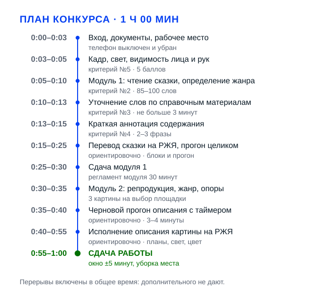
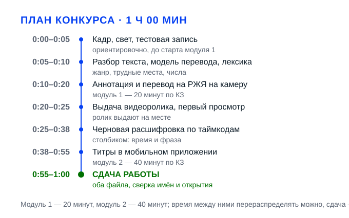
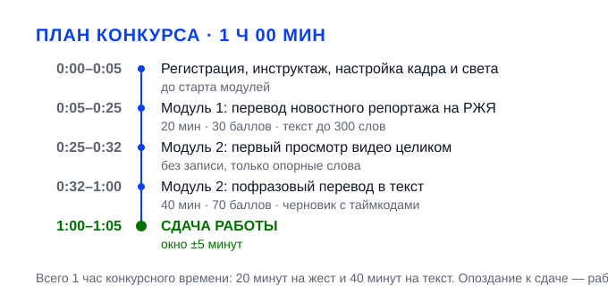

Специалист по сурдокоммуникации (Р)
Задания ниже — официальные файлы «Абилимпикс» (источник: abilympics-russia.ru), разложенные по категориям. Решения написаны по тексту задания, регламенту и критериям оценки; в них указано, что именно проверяет эксперт.
Школьник
14–16 лет, базовый уровень заданияВ официальном файле категории не разделены отдельными разделами — приводим задание целиком; различия по категориям смотрите в таблице модулей.
Пошаговое решение
Задание для школьников состоит из двух модулей по тридцать минут, и оба выполняются на русском жестовом языке: сначала вы переводите небольшую сказку из двенадцати выданных заранее вариантов, потом описываете одну из трёх картин — «А.С. Пушкин в селе Михайловском» Н.Н. Ге, «Аллея летнего сада осенью» И.И. Бродского или «Бабушкин сад» В.Д. Поленова. Оценивают не красоту исполнения, а перевод: в таблице модуля двадцать критериев по пять баллов — от соблюдения правил конкурса и умения определить жанр текста до дактилологии, чисел, мимики, грамматики РЖЯ и точности передачи смысла. Спецодежда и своё оборудование по КЗ не требуются, поэтому всё время уходит на язык, а не на подготовку места. Главная ловушка — говорить жестами по-русски: порядок слов, связки и интонацию русского предложения РЖЯ не переносит, и за это снимают баллы сразу по нескольким критериям.

Задача 1. Подготовиться заранее: разобрать выданные сказки и картиныДомашняя часть · влияет на критерии №2–4, №7–10, №14–15
Сказки и названия картин выдают до конкурса — это единственная часть работы, которую можно сделать без спешки, и именно она решает, будет ли на площадке что показать. За тридцать минут модуля невозможно подобрать жесты к незнакомым словам, поэтому дома вы прочитываете все двенадцать сказок, выписываете трудную лексику, собираете под неё словарь жестов и прогоняете текст с таймером. На площадке останется только узнать свой вариант, освежить его в памяти и перевести.
Действие 1.1. Прочитать все варианты и разметить тексты
Шаг 1.1.1
Берём весь список из двенадцати сказок и читаем его целиком, даже те варианты, которые кажутся детскими: «Что на базар везешь», «Веник» Льва Толстого, «Я видела» Марии Лукашкиной, «Байкал», «Гроза», «Письмо к сыну», «Отцовский наказ», «Проказы старухи-зимы», «Спор», «Умное решение», «Добро и зло», «Лев и мышь». По каждой сказке заводим строку в тетради и выписываем пять-семь слов, которые нельзя показать одним очевидным жестом: «чванный», «харчевня», «прутья», «базар», «верста», «запорошила». У каждого слова ставим пометку: готовый жест, дактилология или описательный оборот.
Критерий №2 даёт пять баллов за ознакомление с текстом и определение его типа и жанровой принадлежности, критерий №3 — столько же за подготовку и работу со справочными материалами, а №14 и №15 — по пять за лексический запас РЖЯ и русского языка. Всё это набирается до конкурса: список выдан заранее именно для того, чтобы участник пришёл с готовым словарём, а не изобретал жесты на ходу под взглядом экспертов.
В тетради двенадцать строк, в каждой не меньше пяти слов, и у каждого слова пометка из трёх вариантов. Проверьте себя так: закройте список и покажите любое выписанное слово без подготовки — если рука «зависла», значит, пометка «есть жест» поставлена зря.
Самая частая ошибка — прочитать две-три сказки, которые понравились, и решить, что остальные не достанутся. Вариант определяет не участник, и на площадке может оказаться именно та сказка, которую вы пролистали: незнакомые слова придётся дактилировать по буквам, а это потеря темпа и баллов сразу по трём критериям.
Эксперт не видит домашней подготовки напрямую, но видит её результат в первые же две минуты: участник, который читает свой текст как знакомый, начинает переводить без пауз на «а как это показать».
Шаг 1.1.2
Каждую сказку размечаем на смысловые блоки: делим восемьдесят пять – сто слов на шесть – восемь кусков по десять – пятнадцать слов, а границу ставим там, где меняется событие или говорящий. В «Венике» это «жил старик с тремя сыновьями», «сыновья ссорились», «старик позвал их и велел принести веник», «веник не ломается», «старик развязал поясок», «прутья ломаются по одному», «наказ жить дружно». Границы подчёркиваем карандашом и на полях пишем одно слово-опору для каждого блока.
Блок — это единица перевода и единица дыхания одновременно. Критерий №11 оценивает правильное построение грамматики на РЖЯ, а грамматика строится внутри высказывания: пока вы держите в голове весь абзац целиком, рука начинает копировать русский порядок слов, и получается калька. Размеченный текст переводится по смыслу, а не по словам.
Блоков получилось шесть – восемь, каждый укладывается в одну фразу на РЖЯ, и на полях стоит слово-опора. Проверьте разметку вслух: прочитайте только опоры — если из них складывается сюжет, границы поставлены верно.
Резать текст по предложениям, а не по событиям: тогда в одном блоке оказываются две мысли, и на середине жеста участник останавливается, чтобы вспомнить продолжение. Второй промах — слишком мелкая нарезка по три-четыре слова: рассказ рассыпается на отдельные жесты без связок.
Эксперт следит за плавностью исполнения по критерию №17 и за удержанием смысловой нагрузки по №16: именно размеченный текст даёт ровный темп без провалов в середине перевода.
Шаг 1.1.3
Берём три названия картин из второго модуля и находим репродукции: «А.С. Пушкин в селе Михайловском» Николая Ге, «Аллея летнего сада осенью» Исаака Бродского и «Бабушкин сад» Василия Поленова. По каждой выписываем десять – двенадцать опорных слов: кто в центре, что на переднем плане, что в глубине, откуда идёт свет, какие цвета главные, какое настроение создаёт сцена. Отдельно отмечаем, что можно показать жестом, а что придётся описывать оборотом — например, «аллея», «терраса», «колорит».
Во втором модуле оценивают то же самое: точность подбора жестов, грамматику, мимику и точность передачи смысла. Картина сложнее сказки тем, что в ней нет готового сюжета и событий — рассказ приходится выстраивать самому, а без заранее собранных опор он превращается в «вот дом, вот люди, красиво» и теряет баллы за уровень лексики.
По каждой из трёх картин есть список опор и отмечено, что показывается жестом, а что описанием. Проверка простая: закройте репродукцию и восстановите по опорам, где находится главное действие — если не получается, опор слишком мало.
Готовиться только к одной картине: названия выдают заранее все три, и какая достанется — решает площадка. Второй промах — выписывать прилагательные вроде «красивый» и «загадочный»: они не переводятся в жест и ничего не добавляют к описанию.
Эксперт во втором модуле слушает именно структуру описания: с чего начали, как повели зрителя по пространству картины, чем закончили. Отдельно он отмечает, названы ли автор и название картины: это первое, что проверяют в описании, и пропуск виден сразу.
Действие 1.2. Собрать словарь жестов под свои тексты
Шаг 1.2.1
К каждому выписанному слову подбираем жест и записываем его так, чтобы через неделю вспомнить: короткое описание движения, направление ладони, чем работает — одной рукой или двумя. Источники берём серьёзные: печатный «Словарь русского жестового языка» Зайцевой, видеословари РЖЯ, приложение с жестами, а лучше всего — консультацию переводчика РЖЯ или глухого носителя языка. Смотрим не только сам жест, но и то, как он меняется в контексте: «рассыпались» и «развязал» — разные движения, хотя оба про верёвку.
Критерий №10 даёт пять баллов за использование безэквивалентной лексики РЖЯ, критерий №18 — за точность и адекватность подбора жестов, ещё пять. Разница между похожим и точным жестом видна носителю языка мгновенно, а эксперт по компетенции смотрит именно на адекватность, а не на старательность исполнения.
Под каждым словом в тетради есть запись движения, и при проверке вы показываете жест без подглядывания. Если запись приходится расшифровывать дольше пяти секунд — перепишите её короче и понятнее, иначе на конкурсе она не поможет.
Брать жест из случайного ролика в интернете: в сети много «жестовых песен» с самодельными движениями, которые носители не понимают. Такой жест эксперт отметит как неверный, и пострадает не только критерий №18, но и точность передачи смысла.
Эксперт-носитель РЖЯ отличает заученный жест от понятого: заученный показывается одинаково в любом контексте, а понятый меняет амплитуду и направление по смыслу фразы.
Шаг 1.2.2
Отдельно размечаем то, у чего жеста нет вовсе: имена, названия, редкие термины. Имена персонажей и авторов показываем дактильно, то есть по буквам, а после первого показа при необходимости закрепляем за человеком условный жест-метку и дальше пользуемся только им. В сказках вроде «Что на базар везешь» героев двое, и дактилировать их каждый раз — значит терять по две-три секунды на каждой реплике.
Критерий №7 оценивает правильное использование дактилологии, отдельные пять баллов, и там же смотрят на технику: буквы показываются чётко, кисть не «жуёт», в конце слова есть короткая остановка. Критерий №10 добавляет баллы за безэквивалентную лексику — то есть за умение не растеряться там, где прямого жеста нет.
В тетради есть список дактильных слов и список условных меток с описанием. Проверьте: покажите имя по буквам на видео и посмотрите без звука — если две-три буквы сливаются, замедлите темп, а не увеличивайте амплитуду.
Дактилировать всё подряд «на всякий случай»: сплошное побуквенное исполнение читается как чтение текста и рушит критерий №17 за плавность. Вторая ошибка — придумать метку и не показать её зрителю один раз полностью, тогда метка не считывается.
Эксперт смотрит на дактиль в первые секунды после начала: по чистоте букв сразу видно, тренировал участник руку или нет. Метки, придуманные участником, ошибкой не считаются, если они показаны один раз полностью и дальше используются последовательно.
Шаг 1.2.3
Отрабатываем числа, которые встретятся в текстах: «трое сыновей», «сорок лет», «два приятеля», «36 ручьёв и рек» в «Байкале», «две монеты» в «Умном решении», «метр на двадцать» в том же озере. Количественные числа до десяти показываются на одной руке, десятки и составные — двумя руками с чётким разделением разрядов; порядковые («первый день», «второй сын») идут другим движением, и путать их нельзя.
Критерий №8 — правильное использование чисел, пять баллов. Числа в сказках несут смысл: в «Венике» именно «трое сыновей» объясняют, зачем нужен пучок прутьев, а в «Умном решении» спор идёт вокруг двух монет. Показать «много» вместо «три» — значит потерять часть сюжета и баллы за точность передачи смысла по критерию №19.
Числа из своих текстов показаны на видео и пересмотрены: разряд читается отдельно, количество пальцев не «плывёт», пауза между разрядами есть. Если зритель без подготовки называет число правильно — всё в порядке.
Показывать числа одной рукой независимо от величины: «сорок» и «двадцать» в таком исполнении сливаются с «четыре» и «два». Вторая ошибка — «сорок лет» показывать как «много лет», теряя точность, за которую как раз и дают баллы.
Эксперт проверяет числа там, где они в тексте есть, и отмечает в листе оценки: правильно ли разделены разряды и не заменено ли число общим словом «много».
Действие 1.3. Отрепетировать с таймером и собрать пакет участника
Шаг 1.3.1
Ставим телефон на штатив или на стопку книг так, чтобы в кадр попадали голова, руки и чуть больше, включаем запись и переводим сказку целиком, без остановок, с таймером на экране. Прогоняем три раза: первый — чтобы вспомнить текст, второй — чтобы поймать темп, третий — «начисто», как на конкурсе. Между прогонами не подглядываем в текст, а смотрим свою запись.
Съёмка на телефон — самый честный способ увидеть то, что увидит эксперт: пропущенные связки, «зависание» руки, потерянный зрительный контакт, мимику, которая не работает. Критерий №6 требует пересказа с самоконтролем качества перевода, и самоконтроль начинается именно с просмотра собственной записи, а не с ощущения «вроде получилось».
Три записи лежат рядом, и на третьей сказка укладывается в три – четыре минуты без остановок и подсказок. Разница между первым и третьим прогоном должна быть видна глазами: если её нет, значит, вы повторяете одно и то же, а не исправляете.
Репетировать «в голове», без записи: в голове текст всегда получается быстрее и чище. Вторая ошибка — репетировать обрывками по два блока: переходы между блоками как раз и не тренируются, а именно на них рассыпается темп.
Эксперт на площадке слышит разницу между отрепетированным и прочитанным впервые: отрепетированный текст идёт ровно, без пауз на вспоминание. По первой минуте он прикидывает, уложится ли участник в тридцать минут модуля, и предупреждает, если темп слишком медленный.
Шаг 1.3.2
Разбираем запись по тем же пунктам, по которым ставят баллы: понятно ли с первых секунд, о чём сказка; видны ли лицо и руки; работают ли брови в вопросах; не пропали ли числа и имена; сохранился ли смысл в последнем блоке. Каждую претензию к себе записываем одной строкой и на следующем прогоне следим только за ней — так ошибки уходят по одной, а не размазываются на весь текст.
Критерии №13, №16 и №19 — точность жестов, удержание смысловой нагрузки и точность передачи смысла произведения — дают по пять баллов каждый и проверяются на целостном исполнении. Именно поэтому разбор идёт по итоговой записи: отдельный красивый жест ничего не значит, если в середине потерялось событие.
Список замечаний сокращается от прогона к прогону: на третьей записи в нём остаются одна – две строки, а не десять. Если список не сокращается, значит, замечания сформулированы слишком общо — перепишите их в конкретные действия.
Смотреть запись «в целом» и оставаться при мнении «нормально»: без конкретных замечаний тренировка не меняет ничего, а на конкурсе повторяются те же потери — пропущенная реплика, смазанное имя, потерянный финал.
Эксперт при оценке опирается на лист критериев, поэтому и разбор дома идёт по нему же: участник, который знает, за что дают пять баллов, тренируется точнее.
Шаг 1.3.3
Собираем пакет на конкурс: распечатка своих текстов и опор, тетрадь со словарём, ручка и карандаш, бутылка воды, часы. Одежду выбираем однотонную и контрастную к цвету рук — тёмный верх при светлых руках или наоборот, без мелкого узора, без длинных рукавов, закрывающих кисть, и без блестящих тканей, которые дают блик на кадре. Спецодежда по пункту 3.1 КЗ не требуется, оборудование по пункту 3.2 привозить не нужно — площадка даёт рабочее место.
Внешний вид и видимость рук прямо влияют на критерий №5: эксперты должны хорошо видеть лицо и руки, а свет не должен давать бликов. Пёстрая или блестящая одежда ломает восприятие жеста, а длинный рукав скрывает кисть — то есть часть перевода физически не видна, и баллы снимаются не за язык, а за кадр.
Пакет собран с вечера и проверен по списку из шести пунктов; одежда отглажена и проверена на свету — поднимите руки перед лампой и посмотрите, не блестит ли ткань и не сливается ли кисть с фоном. Проверьте пакет ещё раз утром: вода, распечатка и тетрадь лежат в одной сумке, иначе на площадке придётся искать их по карманам.
Прийти в любимой пёстрой кофте «главное — язык»: на записи руки сливаются с узором, и эксперт физически не может разобрать мелкую моторику пальцев. Вторая ошибка — рассчитывать, что на площадке выдадут специальную одежду: по КЗ она не предусмотрена.
Эксперт фиксирует условия съёмки и видимость рук до старта модуля, отдельно от оценки перевода: это разные строки в листе. Он же предупреждает, если фон в кадре пёстрый или за спиной окно: пересесть можно только до старта.
Задача 2. Модуль 1: войти, прочитать текст и дать аннотациюМодуль 1 · критерии №1–5 · 25 баллов
Первые пять критериев модуля дают двадцать пять баллов из ста, и все они набираются до того, как вы покажете первый жест перевода: за соблюдение правил конкурса, за ознакомление с текстом и определение жанра, за работу со справочными материалами, за краткую аннотацию содержания и за то, что экспертам хорошо видны лицо и руки. Это самая дешёвая часть оценки, и теряют её чаще всего из-за спешки — участник вбегает, хватает текст и начинает переводить, не разобравшись, что за сказка ему досталась.
Действие 2.1. Пройти вход и подготовить место
Шаг 2.1.1
Приходим на площадку заранее, минут за пятнадцать – двадцать до старта модуля, с документом и без лишних вещей в руках. Перед входом выключаем телефон и убираем его в сумку — на площадке он не нужен, а в кадре или в руке во время перевода воспринимается как подсказка. Слушаем, что объявляет главный эксперт: порядок модулей, сигнал начала и окончания, куда подойти на сдачу, где вода. Всё, о чём предупреждают перед стартом, относится к критерию соблюдения правил конкурса, и повторно это не объясняют.
Критерий №1 «Соблюдение правил конкурса» стоит пять баллов, и он единственный, который можно потерять целиком до начала работы: за телефон, за разговоры с другими участниками во время модуля, за подсказки и за выход из зоны без разрешения баллы снимают сразу. Пятнадцать минут запаса нужны ещё и затем, чтобы не входить в состояние спешки: сбитое дыхание и суетливые руки видны в первых секундах записи.
Вы вошли до объявления старта, телефон выключен и убран, вопросы к эксперту заданы, место сдачи известно. Если что-то из этого не сделано, лучше потратить минуту сейчас, чем искать ответ в середине модуля.
Прийти за минуту до старта и на ходу пытаться понять, где чьё место: пока разбираетесь, эксперт уже объявил начало, и первый блок перевода идёт без подготовки. Вторая ошибка — оставить телефон включённым в кармане: вибрация или звонок в тишине площадки фиксируются как нарушение правил.
Эксперт на входе проверяет документы и отсутствие запрещённых предметов, а потом отмечает в листе, как участник занял место и готов ли он к старту. Опоздание фиксируется по общим часам площадки, и объяснения задним числом не принимаются.
Шаг 2.1.2
Занимаем своё рабочее место и проверяем его по КЗ: площадь не менее трёх квадратных метров, проход между рабочими местами не ближе полутора метров, на столе нет ничего лишнего — ни сумки, ни куртки, ни бумаг с записями, кроме выданного текста и чистого листа для пометок. Если на площадке нет сурдопереводчика, должен быть FM-передатчик или коммуникативная система «Диалог» — это требование пункта 4 задания, и о нехватке оборудования надо сказать сразу, а не терпеть.
Эти требования в КЗ записаны не для отчётности: расстояние до соседа и свободные полтора метра нужны, чтобы жесты не перекрывались чужими руками, а зритель видел весь корпус. Лишние предметы на столе и на фоне мешают читать жест и снижают оценку по критерию №5 — эксперты должны видеть лицо и руки без помех.
Место занято, стол пустой, расстояние до соседа не меньше полутора метров, стул устойчив, текст лежит слева, чистый лист справа. Проверьте, что вам ничего не загораживает обзор и что вы сами не заслоняете соседа.
Свалить сумку и верхнюю одежду на соседний стул: они попадают в кадр и закрывают часть пространства, где вы показываете героев. Вторая ошибка — молча сесть за место, где не работает FM-передатчик, и потом не слышать вопросов эксперта.
Эксперт обходит площадку перед стартом и отмечает организацию места отдельно — это видно по листу оценки ещё до первого жеста. Если участник молча терпит неработающий передатчик, это отмечается как неумение заявить о проблеме.
Шаг 2.1.3
Проверяем кадр и свет: садимся так, чтобы корпус был развёрнут к экспертам или к камере, руки полностью попадали в видимую зону от кисти до локтя, за спиной был однотонный фон без окна и лампы в кадре. Свет должен падать спереди и чуть сбоку, не сзади: если источник за спиной, лицо уходит в тень и мимика перестаёт читаться. Очки проверяем отдельно — наклоните голову, и если в стекле появился отблеск лампы, смените положение или попросите поправить свет до старта.
Критерий №5 даёт пять баллов именно за это, и формулировка в КЗ прямая: убедиться, что лицу или лицам хорошо видны ваше лицо и руки, что освещение хорошее и бликов нет. Мимика в РЖЯ — грамматическое средство, а не украшение, поэтому тень на лице означает потерю сразу нескольких критериев: и №5, и №9 за мимику, и частично №16 за смысл.
Руки видны целиком, лицо освещено ровно, блика в очках и на часах нет, за спиной однотонный фон. Проверьте практично: попросите соседа или волонтёра сесть на место зрителя и сказать, видно ли, как двигаются пальцы.
Сесть против окна: лицо превращается в тёмное пятно, и эксперт видит только силуэт рук — пять баллов по критерию №5 уходят, а заодно страдает оценка мимики. Вторая ошибка — держать руки близко к корпусу, из-за чего кисти сливаются с одеждой.
Эксперт проверяет видимость до начала модуля и может попросить пересесть: если замечание прозвучало, выполняйте его сразу, а не спорьте — время модуля уже идёт.
Действие 2.2. Прочитать текст и определить жанр
Шаг 2.2.1
Берём выданный текст и читаем его целиком один раз, не подчёркивая и не задерживаясь на отдельных словах. Восемьдесят пять – сто слов, по формулировке таблицы модулей, читаются за полторы – две минуты, и это чтение нужно не для запоминания, а для того, чтобы увидеть сюжет целиком: кто чего хочет, что происходит, чем заканчивается. В пункте 2.1 того же задания объём указан иначе — 140–150 слов, поэтому ориентируйтесь на текст, который лежит перед вами, а не на цифру из описания.
Критерий №2 оценивает ознакомление с текстом, и оценивает его по результату: участник, который прочитал сказку целиком, держит логику и не путается в середине. Тот, кто начал переводить с первого абзаца, к третьему теряет, кто с кем разговаривает, и восстанавливает сюжет уже на ходу жеста — это видно и по темпу, и по смыслу.
После первого чтения вы можете пересказать сюжет в двух предложениях, не подглядывая. Если не можете — прочитайте ещё раз, это дешевле, чем потерять смысл в середине перевода. Отметьте время, когда закрыли текст: если на первое чтение ушло больше трёх минут, дальше придётся работать быстрее.
Читать с карандашом в руке и сразу подчёркивать незнакомые слова: внимание уходит на лексику, и сюжет рассыпается. Вторая ошибка — читать текст по диагонали, считая, что сказка простая: в коротких сказках вся соль в последней реплике, и без неё перевод теряет смысл.
Эксперт смотрит, сколько времени участник провёл с текстом до первого жеста: слишком быстрый старт обычно означает, что текст не прочитан, а просмотрен.
Шаг 2.2.2
Второе чтение — с карандашом, и здесь мы отвечаем себе на четыре вопроса: кто герои и сколько их, где происходит действие, есть ли прямая речь и сколько реплик, есть ли мораль или вывод. Определяем жанр и тип: в списке есть бытовые сказки с диалогом («Что на базар везешь», «Умное решение»), сказки-притчи с наказом («Веник», «Отцовский наказ», «Добро и зло»), сказки о природе («Проказы старухи-зимы», «Гроза», «Байкал») и сказки-обманки с пуантом («Я видела» Лукашкиной). Жанр записываем одним словом на полях.
Критерий №2 прямо требует определить тип исходного текста и его жанровую принадлежность, и это не формальность: от жанра зависит модель перевода. Притчу с наказом показывают медленнее, с паузами и выделением морали, а бытовую сказку с диалогом — через ролевой сдвиг, где каждый герой закреплён в своей точке пространства.
На листе появились четыре пометки: герои, место, число реплик, жанр. Проверка простая: если попросить вас назвать жанр и вы отвечаете без колебания — вы его определили, а не угадали. Жанр полезно записать на листе: через пять минут под взглядом экспертов точная формулировка ускользает.
Определить жанр «сказка» и остановиться на этом: этого мало, потому что притча и сказка о природе переводятся по-разному. Вторая ошибка — не заметить прямую речь и показать диалог двумя одинаковыми жестами от одного лица, из-за чего зритель теряет, кто говорит.
Эксперт по критерию №2 фиксирует, назван ли жанр и учтён ли он в исполнении: притча, показанная как анекдот, теряет баллы за точность передачи смысла.
Шаг 2.2.3
Если регламент площадки разрешает справочные материалы, уточняем два-три слова, без которых перевод поплывёт, и тратим на это не больше трёх минут. Чаще всего это устаревшее бытовое слово: «харчевня», «чванный», «верста», «прутья», «базар» в значении «рынок». Смотрим значение и, главное, образ действия: что человек делает руками, когда «развязывает поясок на венике» или «сбрасывает доски с забора». Если материалов нет — выручает собственный словарь из тетради, собранный дома.
Критерий №3 даёт пять баллов за подготовку к переводу и работу со справочной литературой и материалами в интернете, но ограничение по времени здесь важнее полноты: три минуты поиска возвращаются десятью минутами спокойного перевода, а десять минут поиска съедают треть модуля. Критерий №15 за лексический запас русского языка тоже говорит о том, что значение слова надо понимать, а не угадывать.
Вы уточнили не больше трёх слов, у каждого есть понятное действие, и на поиск ушло не больше трёх минут по часам. Всё остальное нужно отложить: время модуля ограничено тридцатью минутами, и это единственный ресурс, который не вернуть.
Уйти в поиск значений на десять – пятнадцать минут: половина модуля уходит на слова, а перевод остаётся неисполненным, и оценка падает по всем критериям сразу. Вторая ошибка — искать в интернете готовый «перевод сказки на РЖЯ» и пытаться его повторить.
Эксперт видит, пользовался ли участник материалами осмысленно: два-три уточнения перед переводом — норма, длительное чтение в телефоне — потеря времени и риск нарушения правил.
Действие 2.3. Дать краткую аннотацию содержания
Шаг 2.3.1
Собираем аннотацию из двух – трёх фраз: что это за текст, кто в нём действует и в чём узел. Например, по «Венику»: «Это сказка-притча. У старика три сына, они ссорятся. Старик показывает им веник: целый не сломать, а по прутику легко». Аннотация строится по-русски в голове, но показывается уже средствами РЖЯ: без связок «который» и «потому что», с героями, закреплёнными в двух-трёх точках перед собой.
Критерий №4 — сообщение краткой аннотации содержания — стоит пять баллов, и это отдельная оценка, не связанная с самим переводом: аннотация показывает, что участник понял текст до исполнения. Она же помогает зрителю, который не знает сказки, войти в перевод, — а значит, работает и на критерий №16 за удержание смысловой нагрузки.
Аннотация укладывается в двадцать – тридцать секунд, в ней названы герои и конфликт, и она не пересказывает развязку. Проверьте себя: если из аннотации понятно, чем всё кончится, слушать сказку дальше незачем — это признак пересказа вместо аннотации.
Пересказать в аннотации всю сказку целиком: на это уходит две-три минуты, потом приходится повторять то же самое в переводе, и зритель слышит историю дважды. Вторая ошибка — назвать только тему («сказка про жадность») без героев и событий.
Эксперт слушает аннотацию отдельно от перевода и ставит балл по критерию №4 до начала исполнения: с этого момента видно, насколько участник владеет содержанием.
Шаг 2.3.2
Показываем аннотацию стоя или сидя прямо, корпус развёрнут к экспертам, руки на уровне груди, темп спокойный и чуть медленнее обычного. Держим зрительный контакт: взгляд переходит от одного эксперта к другому и возвращается к тому, кто пишет, — в РЖЯ контакт глаз является частью высказывания, и без него фраза выглядит оборванной. Паузу между аннотацией и началом перевода делаем явную, в полторы – две секунды, чтобы зритель понял, что одна часть закончилась.
Критерий №4 оценивает саму аннотацию, но её исполнение влияет и на №5, и на №17: плавность и видимость проверяются с первого жеста. Явная пауза перед переводом — это приём, который отделяет вступление от текста; без него зритель не понимает, где закончилось объяснение и началась сказка.
Аннотация показана без остановок, взгляд возвращается к зрителям не реже, чем на каждой фразе, пауза перед переводом выдержана. Проверьте на записи: если вы смотрите в стол или вбок больше половины времени, контакт потерян.
Проговорить аннотацию, глядя в лист с текстом: зритель видит только макушку и теряет нить, а эксперт снижает оценку за видимость лица. Вторая ошибка — начать перевод без паузы, сразу после последней фразы аннотации, так что граница частей стирается.
Эксперт в этот момент смотрит именно на лицо и глаза: аннотация — единственная часть, где легко оценить контакт с аудиторией. Он отмечает и паузу перед переводом: без неё аннотация сливается с текстом сказки и теряет смысл отдельной части.
Шаг 2.3.3
Сверяем аннотацию с текстом по трём пунктам: совпадает ли число героев, не перепутано ли место действия, не приписан ли сказке чужой смысл. Если в тексте двое героев — в аннотации тоже двое, и в пространстве жеста для них уже намечены две точки. Если ошибка нашлась, исправляем её сейчас, до перевода: после начала исполнения менять вступление нельзя.
Аннотация — это первое, что слышит эксперт, и ошибка в ней запускает неверную модель перевода: перепутанный герой потом появляется в неверной точке пространства, и весь диалог рассыпается. Критерии №13 и №19 за точность жестов и точность передачи смысла связаны напрямую: если в аннотации заявлено одно, а в переводе другое, баллы снижаются по обоим.
Число героев, место и главная мысль в аннотации совпадают с текстом; для каждого героя уже намечена своя точка перед корпусом. Проверьте по тексту пальцем: назвали героя — нашли его в тексте. Если в аннотации прозвучало слово, которого нет в тексте, вычеркните его до начала перевода.
Оставлять в аннотации лишнюю деталь, которой в тексте нет: зритель ждёт её в переводе, не дожидается и считает перевод неполным. Вторая ошибка — не связать аннотацию с пространством и начать перевод с героями, которых надо ещё «расставлять» заново.
Эксперт держит в голове аннотацию и сверяет с ней перевод: расхождение между вступлением и исполнением фиксируется как потеря точности. Если аннотация расходится с переводом, он уточняет у участника, что имелось в виду, и это идёт в оценку понимания текста.
Задача 3. Модуль 1: перевести сказку на русский жестовый языкМодуль 1 · критерии №6–20 · 75 баллов
Основная часть первого модуля: перевести сказку в восемьдесят пять – сто слов на РЖЯ так, чтобы сохранился смысл, работала грамматика жестового языка, были на месте дактилология, числа и мимика. Здесь лежат пятнадцать критериев по пять баллов — от пересказа с самоконтролем до адекватности выбора модели перевода. Порядок работы такой: сначала разложить текст на блоки и выстроить порядок жестов, потом отработать имена, числа и пространство, затем собрать всё в цельный прогон и уложиться в тридцать минут.
Действие 3.1. Разложить текст на блоки и выстроить порядок РЖЯ
Шаг 3.1.1
Берём размеченный дома текст и на площадке обновляем границы блоков: проходим по нему глазами и отмечаем шесть – восемь мест, где меняется событие или говорящий. В «Споре» солнца и ветра это «поспорили», «ветер дует», «человек завернулся», «ветер добавил дождь и снег», «человек надел плащ в рукава», «вышло солнце», «человек снял плащ сам». Напротив каждого блока ставим одно слово-опору, всего шесть – восемь слов на весь текст.
Критерий №16 — удержание смысловой нагрузки — пять баллов, и держится он именно на блоках: пока в голове есть каркас из шести опор, рука не теряет нить, даже если отдельное слово забылось. Критерий №17 за плавность исполнения тоже зависит от каркаса: провалы в темпе появляются там, где участник не помнит, что идёт дальше.
Опор шесть – восемь, каждая — одно слово, и по ним восстанавливается весь сюжет. Проверка: закройте текст и перечислите опоры по порядку — если порядок сбивается, границы поставлены неверно. Опоры лучше записать на листе в столбик: шесть слов на бумаге заменяют на площадке весь текст.
Делить текст на блоки заново, уже на площадке, с нуля: на это уходит пять – семь минут из тридцати. Вторая ошибка — сделать блоков пятнадцать – двадцать, по три слова: рассказ превращается в цепочку отдельных жестов без связок.
Эксперт по критерию №6 смотрит пересказ с самоконтролем: ровное движение по блокам показывает, что участник держит структуру текста, а не вспоминает слова.
Шаг 3.1.2
Внутри каждого блока выстраиваем порядок жестов по законам РЖЯ, а не русского предложения: сначала называем объект или место, потом действие, потом результат. Русское «Богатый мужик едет по улице с приятелем» превращается в «богатый — приятель — вдвоём — улица — идти». Связки «который», «потому что», «так что» не переводятся словами: вместо них пауза, направление взгляда и жест-связка. Отглагольные существительные вроде «развязывание» заменяем действием: развязал и показал.
Критерий №11 — правильное построение грамматики на РЖЯ — пять баллов, и это тот критерий, где калька с русского видна мгновенно: жесты идут в русском порядке, с артиклями-связками, и носитель языка такой текст не понимает без усилия. Критерий №20 за адекватность выбора модели перевода тоже здесь: если вы держите порядок РЖЯ последовательно, модель выбрана правильно.
Каждый блок при переводе на РЖЯ имеет не больше четырёх – шести жестов и один смысловой центр. Проверьте так: покажите блок глухому знакомому или запишите на видео — если смысл считывается без русского подстрочника, порядок верный.
Переводить слово в слово, сохраняя русский порядок: получается калькирующая жестовая речь, за которую снимают баллы по критериям №11 и №20. Вторая ошибка — выкидывать связки совсем, без пауз и взгляда: текст рассыпается на несвязанные куски, и страдает уже критерий №16.
Эксперт-носитель РЖЯ распознаёт кальку с первых трёх жестов и дальше смотрит на грамматику прицельно: именно этот критерий чаще всего отделяет сильных участников.
Шаг 3.1.3
Отдельно прорабатываем прямую речь. В большинстве сказок есть диалог: «— Что на базар везешь? — Солому. — Какая солома — это дрова!». Каждому говорящему отводим свою точку перед корпусом — например, богатый слева и чуть выше, бедный справа и ниже, — и при смене реплики переносим корпус и взгляд в эту точку. Реплику показываем с ролевым сдвигом: не «он сказал», а сразу от лица героя, с его мимикой и пластикой.
Критерий №19 за точность передачи смысла произведения и №13 за точность выполнения жестов требуют, чтобы зритель понимал, кто говорит. В сказках с двумя-тремя героями смена точки и корпуса — единственный способ не превратить диалог в монолог. Ролевой сдвиг при этом не украшение, а грамматика: он показывает, что говорит другой человек.
Зритель по вашему корпусу и взгляду без труда называет, кто произнёс каждую реплику. Проверьте на записи без звука: если две реплики выглядят одинаково, точки не разработаны. Проверьте и другое: в репликах сохраняется лицо героя — богатый смотрит сверху вниз, бедный отвечает спокойно.
Показывать все реплики от одного лица, меняя только мимику: зритель теряет, кто с кем говорит, и конец сказки «повисает». Вторая ошибка — переносить корпус резко, на середине жеста: реплика рвётся, и теряется плавность по критерию №17.
Эксперт следит за сменой точки в диалоге прицельно — на сказках с прямой речью это самый показательный элемент перевода. Он же смотрит, не «склеились» ли две реплики в одну: слитая реплика считается ошибкой перевода.
Действие 3.2. Отработать дактилологию, имена и числа
Шаг 3.2.1
Показываем дактильно только то, у чего нет жеста: имена героев, название, редкое слово. Буквы идут чётко, кисть на уровне груди, локоть прижат, между буквами в слове — микропауза, в конце слова — пауза заметнее, чтобы зритель понял: слово кончилось. Имя, которое встречается несколько раз, показываем дактильно один раз при знакомстве, а дальше используем закреплённую метку — короткий условный жест в той же точке пространства.
Критерий №7 за правильное использование дактилологии — пять баллов, и оценивают не скорость, а читаемость: смазанные буквы не читаются даже носителем. Критерий №10 за безэквивалентную лексику добавляет баллы за то, что участник умеет обходиться без прямого жеста, не останавливая рассказ.
Любое имя из текста зритель может прочитать по буквам с первого показа, а метка узнаётся при повторном появлении. Проверьте на записи: прокрутите дактиль в замедленном темпе — все буквы должны быть различимы.
Дактилировать бегло, «проглатывая» концы слов: имя превращается в набор неразборчивых движений, и зритель не связывает героя с событиями. Вторая ошибка — дактилировать слова, у которых есть жест, вместо того чтобы показать их: это замедляет текст и читается как незнание лексики.
Эксперт смотрит на дактиль в первые секунды: чистота букв и паузы между словами показывают уровень владения техникой. Отдельно он отмечает, где участник дактилировал зря: слова с готовым жестом, показанные по буквам, замедляют текст.
Шаг 3.2.2
Числа показываем по правилам: количество до десяти — на одной руке, десятки и составные — двумя руками с разделением разрядов, порядковые числа — отдельным движением от опорной точки. В «Венике» это «трое сыновей», в «Умном решении» — «две монеты», в «Байкале» — «тридцать шесть рек и ручьёв» и «двадцать метров глубины». Если число в тексте важно для сюжета, повторяем его жестом ещё раз при повторе мысли.
Критерий №8 за правильное использование чисел — пять баллов. В сказках число часто несёт смысл: три сына объясняют, почему веник не сломать, две монеты — суть приговора старика. Замена числа словом «много» ломает логику и снимает баллы ещё и по критерию №19 за точность передачи смысла.
Все числа из текста показаны, разряды разделены, зритель называет число правильно с первого показа. Проверьте: попросите кого-то записать числа, которые он увидел, и сравните с текстом. Числа стоит показать дважды — при первом упоминании и в конце, если на них держится мораль.
Показывать «сорок» и «двадцать» одной рукой, как «четыре» и «два»: число теряет значение, а с ним и смысл фразы. Вторая ошибка — пропускать числа, которых в тексте много, и заменять их общим «несколько».
Эксперт проверяет числа там, где они есть в тексте, и отмечает, разделены ли разряды и не подменено ли точное количество приблизительным. В листе он отмечает каждое число из текста: пропущенное и подменённое словом «много» считаются по-разному.
Шаг 3.2.3
Проходим по своему переводу и вычищаем остатки русского строя: причастные обороты, деепричастия, длинные цепочки существительных, вежливые формулы. «Сказал бедный и поехал своей дорогой» — это два действия подряд: сказал, потом поехал, и никаких «своей дорогой» как отдельного слова. «Принимая в себя тридцать шесть ручьёв и рек» — это «в Байкал — тридцать шесть рек — впадают», без деепричастия.
Критерий №15 за уровень лексического запаса русского языка проверяет, понимаете ли вы конструкцию, а критерий №11 за грамматику РЖЯ — умеете ли её перестроить. Канцелярит и причастные обороты в жесте не существуют: попытка их показать даёт набор бессмысленных движений и провал по обоим критериям.
В переводе нет ни одной конструкции, которую нельзя показать жестом; каждый причастный оборот заменён отдельной фразой. Проверьте по записи: если на каком-то месте рука замедляется и «ищет» движение — там остался русский оборот.
Оставлять в жесте «который» и «является»: такие связки не имеют жестового соответствия, и участник либо останавливается, либо показывает что-то невнятное. Вторая ошибка — переводить идиомы буквально. Третья ошибка — переводить пословицу дословно, хотя в РЖЯ у неё есть свой устойчивый оборот.
Эксперт отмечает места, где участник «спотыкается»: чаще всего это ровно те конструкции, которые не переведены на РЖЯ. Он отмечает и то, как участник выходит из трудного места: пауза и переформулировка лучше, чем невнятный жест.
Действие 3.3. Включить мимику, пространство и темп
Шаг 3.3.1
Мимика в РЖЯ работает как грамматика, поэтому её выстраивают заранее, а не «по настроению». Вопрос — брови вверх и лёгкий наклон головы вперёд, отрицание — голова в сторону и сжатые губы, удивление — широко открытые глаза и приподнятые брови, серьёзный наказ — сведённые брови и замедленный темп. В «Венике» старик объясняет сыновьям главное, и его лицо в этот момент должно быть сосредоточенным, а не весёлым.
Критерий №9 «Правильное использование мимики лица» — пять баллов, и без неё вопрос невозможно отличить от утверждения: в РЖЯ немаркированное лицо означает только констатацию. Вторая часть баллов приходит по критерию №16: мимика удерживает смысл, когда словарь беднее замысла.
Каждая вопросительная реплика сопровождается движением бровей, каждое отрицание — движением головы. Проверьте на записи без звука: если по лицу нельзя понять, где вопрос, мимика не работает. Проверьте и степень: удивление, испуг и вопрос различаются не только бровями, но и раскрытием глаз.
Держать «вежливое» ровное лицо на весь текст: зритель не различает вопрос и утверждение, и половина диалога пропадает. Вторая ошибка — включать мимику только в конце, когда вспомнили про критерий: она должна идти синхронно с жестом.
Эксперт смотрит на лицо почти непрерывно: мимика — самый быстрый способ понять, переводит участник смысл или показывает словарь. Он отмечает, совпадает ли лицо с жестом по времени: мимика, включённая на полсекунды позже, читается как отдельное движение.
Шаг 3.3.2
Закрепляем героев в пространстве и не двигаем их до конца сказки: богатый слева, бедный справа, старик по центру, сыновья — трое в ряд справа. Когда герой возвращается в рассказе, жест идёт в его точку, а не «где удобно»: «Вот он — вчерашний мужик-то!» показывается жестом в точку бедного, а не общим указанием вперёд. Точки держим на уровне груди, в пределах полуметра, чтобы рука не уходила из кадра.
Критерий №11 за грамматику РЖЯ и №18 за точность подбора жестов опираются на пространство: в жестовом языке место заменяет и падежи, и местоимения. Если герой «переехал» из левой точки в правую, зритель считает, что это уже другой человек, и сюжет рассыпается без единого пропущенного слова.
Один герой — одна точка на весь текст, и все упоминания идут в неё. Проверьте так: посмотрите запись и мысленно отметьте, где находится каждый герой в каждой фразе — перемещений быть не должно. Полезно заранее назвать точки вслух: «богатый — слева, бедный — справа», чтобы не путать их в спешке.
Переносить точки по ходу рассказа «чтобы было видно»: зритель путает героев, и конец сказки понимает неверно. Вторая ошибка — держать руки слишком широко, у края кадра, где жест обрезается. Третья ошибка — ставить героев слишком близко друг к другу, из-за чего смена точки не читается.
Эксперт следит за пространством в диалоговых сценах и отмечает, удержаны ли точки до финала — это прямо влияет на оценку грамматики. Он отмечает, где участник возвращается в точку героя, а где показывает общее указание вперёд: второе читается как потеря пространства.
Шаг 3.3.3
Для предметов используем классификаторы и показ формы: веник — собранные вместе прутья, которые держат двумя руками; развязанный поясок — короткое движение у основания; рассыпавшиеся прутья — пальцы раскрываются и рука идёт вниз. Размер и форма показываются руками в масштабе жеста, а не словами «большой» и «маленький»: сноп прутьев, толстая верёвка, узкая полоска ткани — это разные положения кистей.
Критерий №13 за точность выполнения жестов и их подбор по смыслу — пять баллов, и классификаторы как раз тот случай, когда точность видна сразу: сломанный прутик показывается двумя пальцами, а не всей рукой. Критерий №18 добавляет баллы за адекватность: важно подобрать не «красивый», а понятный жест.
Предметы в переводе узнаваемы: если показать жест без контекста, зритель называет предмет. Проверьте на записи: веник, прутья, монеты — каждый должен читаться отдельно от фразы. Размер предмета проверяется по отношению к корпусу: веник в руках не больше предплечья, иначе масштаб теряется.
Показывать все предметы одним и тем же «держащим» жестом: веник, монеты и ворох досок выглядят одинаково, и текст теряет конкретность. Вторая ошибка — увеличивать жест до размеров, при которых кисть уходит из кадра.
Эксперт оценивает подбор жестов к предметам прицельно: в сказках с бытовыми деталями это заметная часть оценки. Он отмечает, различаются ли предметы между собой: одинаковые жесты для разных вещей — частая потеря баллов.
Шаг 3.3.4
Темп держим ровный, как в спокойном разговоре, а логическое ударение показываем не громкостью, а энергией жеста: главное слово идёт с большей амплитудой и чуть медленнее, второстепенное — мельче и быстрее. На границе блоков ставим паузу в полсекунды – секунду, руки при этом остаются на уровне груди, а не падают вниз. В финале сказки — пауза длиннее, полторы – две секунды, чтобы последняя мысль успела дойти.
Критерий №17 за плавность исполнения — пять баллов, и он снимается за рваный ритм: остановки на вспоминание, рывки, падения рук. Критерий №12 за соблюдение временного регламента связан с темпом напрямую: слишком медленное исполнение не укладывается в тридцать минут модуля вместе с подготовкой.
Текст идёт без остановок на вспоминание, паузы есть только на границах блоков, руки не опускаются ниже груди до конца. Прослушайте запись с закрытыми глазами: ритм должен быть ровным, как у рассказчика.
Разгоняться в начале и «выдыхаться» к середине: к третьему блоку темп падает, паузы растут, и плавность рушится. Вторая ошибка — говорить с постоянной громкой энергией, из-за чего логические ударения перестают различаться.
Эксперт отмечает плавность по всему исполнению, а не по фрагменту: рывки в середине текста снимают балл независимо от сильного начала. Он же отмечает дыхание: участник, который дышит ровно, держит темп до финала без провалов.
Действие 3.4. Выбрать модель перевода и проверить смысл
Шаг 3.4.1
Перед прогоном сознательно выбираем модель: калькирующая жестовая речь, собственно РЖЯ или комбинированный вариант — и держим её до конца. Для бытовой сказки с диалогом обычно верна комбинированная модель: имена и точные слова — дактильно, события — средствами РЖЯ, реплики — с ролевым сдвигом. Для притчи с наказом чаще подходит РЖЯ с замедлением на морали. Калька уместна только там, где зритель ждёт дословной передачи термина, а в сказке таких мест почти нет.
Критерий №20 — адекватность выбора модели перевода — пять баллов, и это критерий о решении, а не о технике: эксперт видит, выбрал участник стратегию или переводил импульсивно. Смешение моделей внутри одного текста читается как неуверенность и снимает баллы ещё и по критерию №11 за грамматику.
Модель выбрана до начала прогона и выдерживается до финала: нет мест, где калька внезапно сменяется РЖЯ без причины. Проверьте себя одним вопросом: почему здесь именно так — и ответ должен быть про зрителя, а не про удобство.
Начинать в РЖЯ, а на сложном месте сваливаться в дословную кальку: именно так выглядит потеря стратегии, и эксперты это отмечают отдельной строкой. Вторая ошибка — выбирать модель, которую участник не отработал дома.
Эксперт по критерию №20 оценивает решение целиком: последовательность модели видна по тому, как участник ведёт текст от начала до конца. Он отмечает и обоснование: если участник может сказать, почему выбрал такую модель, решение считается осознанным.
Шаг 3.4.2
Делаем полный прогон сказки без остановок, от первой фразы до последней, и сразу после него — сверку с текстом: проходим по опорам и отмечаем, все ли события на месте, не добавлено ли лишнее, сохранён ли финал. Если на каком-то блоке вы «провалились», повторяем только его, а не весь текст: время модуля ограничено, и цельный прогон нужен один, максимум два.
Критерий №6 требует пересказа содержания на РЖЯ с самоконтролем качества перевода, и самоконтроль здесь буквальный: сравнить сказанное с исходником. Критерий №16 за удержание смысловой нагрузки и №19 за точность передачи смысла проверяются именно на цельном исполнении, где видно, дожил ли сюжет до конца.
Все опоры пройдены, ни одно событие не пропущено, финал показан, добавленных деталей нет. Проверка: перескажите свою же запись по-русски — и сравните с текстом. Сверку ведите по событиям, а не по словам: важно, все ли повороты сюжета показаны, а не все ли слова переведены.
Прогонять только начало, которое «и так хорошо получается»: середина и финал остаются неотработанными, а именно там теряются баллы. Вторая ошибка — сверять смысл по памяти, а не по тексту, и не замечать пропущенной реплики.
Эксперт слушает исполнение целиком и сверяет его с текстом по событиям: пропуск одного события фиксируется как потеря точности передачи смысла. Он отмечает, где участник добавил деталь, которой в тексте не было: добавление считается такой же ошибкой, как пропуск.
Действие 3.5. Уложиться в тридцать минут модуля
Шаг 3.5.1
Раскладываем тридцать минут по шагам заранее: три минуты на вход и проверку кадра, четыре на чтение и определение жанра, три на уточнение слов, две на аннотацию, двенадцать на перевод и прогон, четыре на финальный прогон, две минуты резерва. Резерв нужен не «на всякий случай», а на реальные помехи: сбой техники, вопрос эксперта, переставленный свет.
Критерий №12 за соблюдение временного регламента — пять баллов, и он снимается как за превышение, так и за неиспользованное время: тридцать минут на модуль, и дополнительного времени не дают, потому что перерывы по пункту 6.1.2 уже включены в общее время задания. Участник, который закончил за двадцать минут и сидит, тоже теряет балл — регламент означает работу в отведённое время.
План записан на листе с отметками времени, и вы сверяетесь с ним после каждого этапа. Если на этап ушло больше плана — следующий сокращаете, а не сдвигаете весь график. Отметьте на листе время старта: от него считаются все контрольные точки, а не от момента, когда вы сели за стол.
Начать перевод через двенадцать минут после старта, потому что «ещё чуть-чуть дочитаю»: на исполнение остаётся половина времени, и финал скомкан. Вторая ошибка — не оставить резерв и потерять две минуты на техническую помеху.
Эксперт фиксирует время начала и окончания работы по критерию №12 — это объективная строка в листе, не зависящая от впечатления. Он отмечает и то, закончил ли участник работу до сигнала или его останавливали: это разные записи в листе.
Шаг 3.5.2
Контрольные точки держим по часам: к десятой минуте текст прочитан и жанр определён, к пятнадцатой — аннотация показана, к двадцать пятой — перевод прогнан целиком, к двадцать восьмой — финальный прогон завершён, к тридцатой — работа сдана. Если к пятнадцатой минуте аннотация не показана, значит, чтение затянулось: сокращаем уточнения и переходим к исполнению.
Контрольные точки превращают регламент из пожелания в инструмент: по ним видно, где именно вы теряете время. Критерий №12 даёт пять баллов, и они самые предсказуемые из всех — их получает каждый, кто просто следит за часами и не даёт одному этапу съесть остальные.
Все пять контрольных точек пройдены, и на каждой вы знаете, сколько минут осталось. Проверка простая: если вы не можете назвать, сколько времени осталось до конца модуля — значит, за часами не следите.
Смотреть на часы впервые за пять минут до конца: тогда уже ничего не исправить, а недоделанный финал стоит баллов по трём критериям. Вторая ошибка — держать телефон с таймером на столе, что нарушает правила конкурса.
Эксперт сверяет время сдачи с регламентом модуля, и эта строка не обсуждается: тридцать минут на модуль, общее время задания — один час. Он сверяет фактическое время исполнения с тридцатью минутами модуля, а не с тем, сколько участник планировал.
Задача 4. Модуль 2: описать картину на русском жестовом языкеМодуль 2 · 30 минут · те же критерии перевода
Второй модуль длится те же тридцать минут, но задание устроено иначе: перед вами репродукция одной из трёх картин — «А.С. Пушкин в селе Михайловском» Николая Ге, «Аллея летнего сада осенью» Исаака Бродского или «Бабушкин сад» Василия Поленова, — и нужно рассказать о ней на РЖЯ. Готового сюжета здесь нет, поэтому рассказ строится вами: сначала общее впечатление и то, что в центре, потом пространство по планам, потом свет, цвет и настроение. Оценивают те же качества, что и в первом модуле: точность жестов, грамматику, мимику, лексику и точность передачи смысла.
Действие 4.1. Рассмотреть репродукцию и собрать опоры
Шаг 4.1.1
Получив репродукцию, первые полторы – две минуты просто смотрим на неё молча, не начиная рассказывать. Отвечаем себе на три вопроса: что находится в центре, что происходит между людьми или предметами, куда уходит взгляд — в глубину, вверх или в сторону. Всё, что вы увидели, отмечаете не словами, а порядком: сначала центр, потом края. Смотреть нужно именно на ту репродукцию, которая лежит перед вами, а не восстанавливать картину по памяти о репродукции в учебнике.
Критерий №2 требует ознакомления с материалом и определения его характера, и для картины это значит: понять, что перед вами, до начала рассказа. Критерий №16 за удержание смысловой нагрузки проверяется по тому, остался ли рассказ связным — а связность начинается с ясного представления о том, что в центре.
У вас есть три – четыре опоры на главное и понимание, куда движется взгляд. Проверка: закройте репродукцию и опишите одним предложением, что на ней происходит — если получается, вы рассмотрели главное.
Начинать говорить с первой секунды, «пока не забыл»: рассказ идёт от угла к углу без центра, и зритель не понимает, о чём картина. Вторая ошибка — рассматривать двадцать минут, оставляя на исполнение пять.
Эксперт видит, смотрел ли участник на репродукцию: рассказ, начатый с главного, выдаёт внимательный просмотр. Он отмечает и время, проведённое с репродукцией до первого жеста: меньше минуты обычно означает, что картина не рассмотрена.
Шаг 4.1.2
Определяем, что это за картина по жанру: портрет в интерьере, пейзаж или бытовая сцена, и сколько в ней главных фигур. От жанра зависит порядок рассказа: в портрете ведут от человека к обстановке, в пейзаже — от переднего плана в глубину, в бытовой сцене — от действия между людьми к месту, где оно происходит. Жанр записываем одним словом на листе и рядом — число главных фигур, чтобы не сбиться в середине.
Критерий №20 за адекватность выбора модели перевода относится и ко второму модулю: описание пейзажа и описание портрета строятся по-разному, и универсального порядка нет. Если жанр определён неверно, рассказ идёт «про всё сразу», теряет структуру и снижает баллы по критериям №11 и №16.
Жанр назван, число главных фигур известно, порядок рассказа выбран и записан. Проверка: проговорите про себя первые три фразы — они должны идти от главного, а не от края холста. Запишите рядом и число планов, которые собираетесь описать: обычно их три, и четвёртый только путает.
Начинать с рамки, фона и мелочей: «в левом углу дерево, справа стена» — зритель не понимает, где центр. Вторая ошибка — определить пейзаж как портрет и искать в нём героя, которого нет. Третья ошибка — описывать пейзаж как перечень предметов, не называя, куда уходит пространство.
Эксперт по структуре рассказа сразу понимает, определён ли жанр: описания, идущие от края к центру, читаются как отсутствие плана. Он же отмечает, названо ли, сколько в картине главных фигур: расхождение с репродукцией видно сразу.
Шаг 4.1.3
Выписываем на лист десять – двенадцать опор и рядом с каждой ставим пометку: жест, дактиль или описание. Люди, дом, аллея, терраса, деревья, вода, небо — то, что имеет жест; название картины и имя художника — дактиль; «колорит», «перспектива», «композиция» — описание через действие: «цвет — тёплый», «дорога уходит далеко». Пометки нужны, чтобы в середине рассказа не искать движение для слова, которого нет.
Критерий №10 за использование безэквивалентной лексики РЖЯ и критерий №14 за лексический запас РЖЯ — по пять баллов каждый, и в описании картины они решают больше, чем в сказке: именно здесь больше всего слов без прямого жеста. Пометки на листе превращают эти слова в заранее подготовленные обороты.
Опор десять – двенадцать, у каждой пометка, и ни одна не осталась «просто словом». Проверьте: покажите три опоры подряд без подготовки — если рука не находит движение, пометка неверна. Пометки ставьте сокращённо: «ж» — жест, «д» — дактиль, «о» — описание, чтобы лист читался за секунду.
Выписывать прилагательные оценки — «красивая», «замечательная», «талантливая»: они не переводятся в конкретный жест и заполняют рассказ пустотой. Вторая ошибка — не пометить название картины и потерять баллы на дактиле.
Эксперт отмечает, насколько богат словарь описания: десять – двенадцать разных опор против трёх общих слов видны в оценке сразу. Он смотрит и на то, есть ли среди опор свет и цвет: без них описание остаётся перечислением предметов.
Действие 4.2. Выстроить рассказ по планам картины
Шаг 4.2.1
Начинаем рассказ с общего: называем автора и картину дактильно, показываем, что это за сцена одним жестом-обобщением — портрет, пейзаж, комната, — и говорим, кто или что находится в центре. Первые две фразы должны дать зрителю рамку: «это картина такого-то, на ней человек в комнате, он сидит у стола». Дальше углубляемся, но рамка уже поставлена, и зритель знает, куда смотреть.
Критерий №4 в первом модуле оценивал аннотацию, и во втором модуле работает тот же принцип: сначала рамка, потом детали. Критерий №6 за пересказ с самоконтролем и №16 за удержание смысла требуют, чтобы зритель с первых секунд понимал, о чём речь, иначе дальнейшие детали падают в пустоту.
После первых двух фраз понятно, кто автор, что за сцена и что в центре. Проверка: представьте, что зритель не видел картины — по вашему началу он может сказать, портрет это или пейзаж. Произнесите первые две фразы вслух перед началом: если они длиннее десяти секунд, рамка слишком тяжёлая.
Начинать сразу с деталей: «дерево, скамейка, женщина в шляпе» — без рамки зритель не понимает, что это за произведение. Вторая ошибка — забыть название и автора, потеряв баллы за дактиль и за полноту описания.
Эксперт слушает первые фразы прицельно: в них видно, умеет ли участник вводить зрителя в материал. Он отмечает, названы ли автор и название: за это отвечает дактиль, и его чистота оценивается отдельно.
Шаг 4.2.2
Переходим к переднему плану и главным фигурам: показываем, кто где стоит или сидит, в какой позе, что делает руками, куда смотрит. Поза показывается корпусом и плечами, а не только кистями: человек, сидящий за столом, и человек, стоящий у окна, — это разные положения тела, и зритель должен их увидеть. Фигуры закрепляем в точках пространства, как в сказке: один человек — одна точка, и все дальнейшие упоминания идут туда.
Критерий №13 за точность выполнения жестов и их подбор по смыслу — пять баллов, и поза здесь главный носитель точности: кисти без корпуса не передают, сидит человек или идёт. Критерий №11 за грамматику РЖЯ опирается на пространство, и закреплённые точки делают описание связным.
Каждая фигура имеет свою точку, поза читается без пояснений, действия рук совпадают с тем, что видно на репродукции. Проверьте на записи: закройте лицо рассказчика — по одному корпусу должно быть понятно, кто где.
Показывать людей только кистями, без корпуса: все фигуры выглядят одинаково и различимы лишь по порядку упоминания. Вторая ошибка — переставлять героев между точками, из-за чего зритель путает, кто где находится.
Эксперт смотрит на передний план внимательнее всего: там сосредоточено главное действие картины и основной объём оценки за точность. Он отмечает, читается ли поза: сидящая фигура, показанная только кистями, для носителя языка не отличается от стоящей.
Шаг 4.2.3
После переднего плана ведём зрителя в глубину: что находится за главными фигурами, куда уходит пространство — аллея, комната, сад, вода, небо. Показываем направление движения взгляда жестом от себя вдаль и чуть вверх или вниз, в зависимости от того, как построена перспектива. Затем свет: откуда он падает, что освещено ярче, где тени. И цвет: не «красиво», а конкретно — тёплые жёлтые и охристые тона, зелень с холодными тенями, серое небо.
Критерий №18 за точность и адекватность подбора жестов и №14 за лексический запас РЖЯ проверяются именно на описании пространства и цвета: здесь видно, умеет ли участник передавать то, для чего нет отдельных жестов. Свет и цвет в описании — то, что отличает настоящий рассказ о картине от перечисления предметов.
Глубина показана направлением жеста, свет назван с указанием стороны, цвет описан конкретными оттенками. Проверка: зритель по вашему описанию может сказать, светлая картина или тёмная и куда уходит пространство.
Ограничиться словами «сзади деревья, вокруг красиво»: глубина и цвет не переданы, и описание остаётся плоским. Вторая ошибка — показывать свет жестом «лампа», хотя речь о дневном свете из окна. Третья ошибка — описывать цвет одним словом «яркий»: оттенок без направления света не читается.
Эксперт оценивает, передан ли воздух картины: свет, глубина и цвет — самая показательная часть описания для носителя языка. Он отмечает и направление взгляда рассказчика: если глаза и жест идут в разные стороны, глубина не читается.
Шаг 4.2.4
Завершаем рассказ тем, что картина оставляет: настроение сцены и мысль, которую она несёт. Здесь важно не оценивать, а назвать: «тихая осень, людей нет, только аллея» или «в комнате спокойно, человек читает, рядом близкий человек». Последнюю фразу держим чуть дольше, с паузой в полторы – две секунды, и только потом опускаем руки: финал должен осесть у зрителя, а не оборваться.
Критерий №19 за точность передачи смысла произведения распространяется и на картину: описание без вывода остаётся инвентарём предметов. Критерий №17 за плавность исполнения требует, чтобы финал не скомкался: именно на последних фразах участники чаще всего ускоряются и теряют паузы.
В конце названо настроение, пауза выдержана, руки опускаются после неё. Проверка: если после последнего жеста вы успеваете сделать вдох и выдох до того, как опустить руки, — пауза достаточная. Проверьте и то, что финал не повторяет начало: два одинаковых вывода подряд читаются как остановка.
Заканчивать на середине фразы, потому что время подходит: зритель остаётся без вывода, и смысл картины не передан. Вторая ошибка — заменить настроение оценкой «очень красивая картина», что не добавляет баллов ни по одному критерию.
Эксперт ждёт финала: по последним фразам видно, понял ли участник картину или только перечислил то, что на ней изображено. Он отмечает, прозвучало ли настроение жестом, а не оценкой «красиво»: второе не даёт баллов ни по одному критерию.
Действие 4.3. Исполнить описание и уложиться в регламент
Шаг 4.3.1
Первый прогон делаем черновым, с таймером на виду: показываем весь рассказ от рамки до финала, не поправляя себя на ходу. После прогона смотрим на время: рассказ о картине укладывается в три – четыре минуты, и если вышло меньше двух, значит, вы перечислили предметы вместо описания, а если больше пяти — вы застряли на деталях и не дошли до света и настроения.
Критерий №12 за соблюдение временного регламента действует и во втором модуле: тридцать минут на модуль, и внутри них нужно успеть рассмотреть, собрать опоры, прогнать и исполнить. Черновой прогон с таймером — единственный способ узнать настоящую длину рассказа: в голове он всегда короче.
Время первого прогона известно, рассказ доходит до финала, ни один блок не пропущен. Проверка: запишите время на листе и сравните со вторым прогоном — разница не должна превышать полминуты. Запишите время на листе и сравните его с планом модуля: если прогон длиннее четырёх минут, сокращайте детали, а не темп.
Прогонять без таймера и узнать время только на исполнении: рассказ либо обрывается на середине, либо тянется до сигнала. Вторая ошибка — переписывать рассказ после первого прогона целиком, вместо того чтобы поправить два слабых места.
Эксперт фиксирует время исполнения по критерию №12, и недобор по длине читается как неполное раскрытие картины. Он отмечает и то, дошёл ли рассказ до вывода: оборванное описание снижает оценку за смысл.
Шаг 4.3.2
Второй прогон — чистый, без остановок и без подглядывания в лист, как на оценке: корпус развёрнут, руки в кадре, мимика включена, точки фигур удержаны. Именно этот прогон запоминаем телом: повторяем те же переходы между планами, ту же паузу перед финалом. Если на каком-то переходе вы сбились, отметьте его и прогоните отдельно, но целый рассказ больше не переделывайте.
Критерий №17 за плавность исполнения и №9 за мимику оцениваются на цельном исполнении, и второй прогон — это репетиция финального вида. Многократные переделки всего текста съедают время модуля и не дают ни одного нового навыка: точечная отработка перехода эффективнее.
Рассказ идёт целиком без остановок, переходы между планами ровные, мимика соответствует содержанию. Проверка: если вы можете показать рассказ, не заглядывая в лист, — он готов. Отметьте, на каком переходе вы сбиваетесь чаще всего: обычно это одно и то же место, и его достаточно прогнать отдельно.
Прогонять с листом в руках: на исполнении листа не будет, и привычка подглядывать разрушает зрительный контакт. Вторая ошибка — учить рассказ наизусть слово в слово, из-за чего при забытом слове останавливается весь текст.
Эксперт смотрит именно исполнение, а не подготовку: чистый прогон дома и на площадке — это и есть тот результат, который оценивают. Он отмечает, держится ли структура при волнении: сбивы в начале рассказа говорят о том, что каркас не отработан.
Шаг 4.3.3
Раскладываем тридцать минут второго модуля: две минуты на рассматривание, три на жанр и опоры, две на первый прогон, две на отработку перехода, три на чистый прогон, четыре на исполнение — остальное резерв. Если площадка требует исполнять сразу после подготовки, резерв уходит на спокойный вдох и проверку кадра, а не на новые мысли: менять структуру за минуту до выхода нельзя.
Критерий №12 и здесь стоит пять баллов, и здесь он коварнее: соблазн доработать описание «пока есть время» велик, а доработка на ходу разрушает выученную структуру. Резерв времени нужен для того, чтобы исполнение началось спокойно, с ровным дыханием и без спешки.
План по минутам записан, каждый этап отмечен, исполнение начинается не позже двадцать пятой минуты модуля. Проверка: если до конца модуля осталось пять минут, а вы ещё не показывали рассказ, — план нарушен.
Оставить исполнение на последние три минуты и показывать его в спешке, глотая блоки: теряется и плавность, и смысл, и регламент. Вторая ошибка — тратить резерв на переписывание опор, которые уже не изменить.
Эксперт отмечает время начала исполнения: работа, начатая в последние минуты, обычно проигрывает по плавности даже при хорошем содержании. Он же фиксирует, был ли у участника резерв: спокойное начало видно по дыханию и по первой паузе.
Действие 4.4. Проверить себя по тем же критериям
Шаг 4.4.1
Перед исполнением проходим по короткому чек-листу из шести пунктов, взятых прямо из таблицы критериев: видны ли лицо и руки; работает ли мимика в вопросах и оценках; удержаны ли точки фигур; нет ли кальки с русского порядка слов; показаны ли дактиль и числа там, где они нужны; сохранился ли финал. Каждый пункт проверяется одним взглядом, а не рассуждением: чек-лист должен занимать не больше минуты.
Критерии модуля одни и те же — от мимики до точности передачи смысла, — поэтому самопроверка идёт по ним, а не по ощущению «получилось». Участник, который знает список, замечает свои слабые места до эксперта, и это единственный способ успеть их поправить.
Все шесть пунктов отмечены, и по каждому есть ответ «да» или конкретное действие. Проверка: если на пункт «работает ли мимика» вы отвечаете «наверное» — значит, не проверяли. Проговорите чек-лист про себя в обратном порядке: так видны пункты, которые вы пропустили.
Проверять себя «в целом»: общее впечатление всегда лучше реального, потому что участник помнит замысел, а не исполнение. Вторая ошибка — проверять по чек-листу уже после исполнения, когда исправлять нечего.
Эксперт пользуется тем же списком, и совпадение самопроверки с его оценкой — признак того, что участник понимает критерии. Он отмечает, умеет ли участник назвать свои слабые места: это часть оценки осознанности работы.
Шаг 4.4.2
Найденное слабое место исправляем точечно и только одно: если проваливается переход от фигур к глубине, прогоняем именно его три раза подряд с паузой; если не работает мимика в финале — показываем последние две фразы с намеренно подчёркнутым лицом. Больше ничего не трогаем: структура уже собрана, и любые крупные изменения перед выходом только вредят.
Критерии оцениваются по цельному исполнению, и одна исправленная точка даёт больше, чем переписанный заново рассказ: цельный прогон после переписывания становится неуверенным. Точечная работа сохраняет и время модуля, и плавность, за которую дают пять баллов по критерию №17.
Слабое место прогнано отдельно не меньше трёх раз и идёт без сбоя. Проверка: покажите этот фрагмент с ходу, без подготовки — если он идёт так же ровно, как остальной текст, работа сделана. Замерьте время фрагмента до и после отработки: разница покажет, стало ли движение экономнее.
Пытаться исправить всё сразу за оставшиеся минуты: в результате ни один фрагмент не отработан, а уверенность потеряна. Вторая ошибка — менять структуру рассказа перед выходом, из-за чего забывается начало.
Эксперт не знает, что участник считал слабым местом, но видит результат: ровный фрагмент вместо провала. Он отмечает, повторяется ли ошибка из первого модуля во втором: повтор — признак неотработанной привычки.
Задача 5. Сдать работу и разобрать замечанияОба модуля · критерии №1 и №12 · до 10 баллов
Сдача кажется формальностью, но здесь теряются баллы, заработанные за час работы: за нарушение правил конкурса снимают пять баллов по критерию №1, за выход за регламент — ещё пять по критерию №12. Сдавать нужно так: остановиться по сигналу, не дотягивая жест, коротко назвать, что сделано, привести место в порядок и спокойно ответить на вопросы экспертов, запомнив замечания.
Действие 5.1. Завершить работу по правилам
Шаг 5.1.1
По сигналу окончания модуля останавливаемся сразу: доводим текущий жест до естественного конца, опускаем руки и делаем шаг назад от линии исполнения. Не дотягиваем фразу, не добавляем «ещё одно предложение», не показываем финал заново, если эксперт уже объявил остановку. Если финал не был показан, спокойно говорим об этом эксперту: честное «я не успел закончить» воспринимается лучше, чем жест после сигнала.
Критерий №1 за соблюдение правил конкурса и критерий №12 за временной регламент — по пять баллов, и оба снимаются за работу после сигнала. Правило одинаково для всех участников, поэтому продолжение исполнения после остановки считается нарушением, а не старанием.
Работа остановлена в момент сигнала, руки опущены, вы стоите у своего места. Проверка: если после сигнала вы не сделали ни одного жеста — правило соблюдено. Отметьте время сигнала: по нему видно, успели ли вы показать финал до остановки.
Договорить сказку «ей же осталось две фразы»: это прямое нарушение регламента, и пять баллов по критерию №12 теряются независимо от качества перевода. Вторая ошибка — уходить с площадки до объявления остановки, чтобы «не мешать».
Эксперт фиксирует момент остановки по общим часам площадки: это объективная отметка, которая не зависит от впечатления о переводе. Он отмечает и жест после сигнала: даже один показанный знак считается продолжением работы.
Шаг 5.1.2
Подходим к эксперту или к месту сдачи, когда объявят порядок, и коротко называем, что сделано: какой модуль, какая сказка или картина, был ли показан финал. Говорим спокойно и по делу, без оправданий и без пересказа задания — эксперту нужны факты, а не объяснения. Если нужно передать лист с пометками, отдаём его целиком, не вырывая отдельных страниц.
Порядок сдачи входит в критерий №1, а ясный короткий отчёт помогает эксперту сопоставить работу с текстом задания, что влияет и на оценку точности передачи смысла. Сбивчивый рассказ о том, как всё было трудно, время не возвращает, а впечатление портит.
Работа сдана в объявленном порядке, сказано главное, листы переданы полностью. Проверка: ваш отчёт занимает не больше тридцати секунд и содержит только факты. Спросите, нужны ли ваши пометки экспертам: иногда лист с опорами помогает им сверить текст.
Начинать объяснять, почему что-то не получилось, и занимать этим время других участников: на оценку это не влияет, а порядок сдачи нарушает. Вторая ошибка — уйти, не сдав лист с пометками, если он требуется по регламенту площадки.
Эксперт отмечает, как участник завершил работу: спокойная сдача читается как профессиональная привычка, а суета — как незавершённость. Он же следит, чтобы сдача не задерживала следующих участников: тридцать секунд — норма.
Шаг 5.1.3
Приводим место в порядок по пункту 6.5.2 задания: убираем со стола рабочие материалы, ставим стул на место, забираем свои вещи, выбрасываем черновики, если они не нужны экспертам. Если на площадке есть общие материалы — словари, распечатки, — относим их туда, откуда взяли. Всё, что осталось на столе, эксперт видит при обходе. Стол протираем сухой салфеткой, если на нём остались следы от ручки или крошки.
Требования охраны труда по окончании работы в КЗ прописаны отдельным пунктом, и порядок на месте входит в соблюдение правил конкурса по критерию №1. Кроме того, уборка освобождает место следующему участнику: задержка с вещами на столе может сдвинуть его старт, и это тоже фиксируется.
Стол пустой, стул на месте, ваши вещи в руках, черновики убраны. Проверка: посмотрите на место со стороны — на нём не должно остаться ничего, что вы принесли. Проверьте и пол под стулом: упавший лист бумаги остаётся заметным следом.
Оставить на столе черновики и тетрадь со словарём: они попадают в поле зрения следующего участника и в отчёт об организации места. Вторая ошибка — уйти, не убрав стул, и создать помеху на проходе шириной полтора метра.
Эксперт обходит площадку после сдачи и отмечает состояние мест — это последняя строка в листе оценки. Он же отмечает, забрал ли участник свои материалы: оставленная тетрадь со словарём считается нарушением порядка.
Действие 5.2. Ответить на вопросы и разобрать замечания
Шаг 5.2.1
Если эксперты задают вопросы по переводу — почему выбран такой жест, что означала метка, почему модель перевода сменилась на середине, — отвечаем коротко и по существу. Вопрос про жест — это не претензия, а проверка понимания: спокойно объясняем, что хотел сказать, и при необходимости показываем жест ещё раз. Если ответа нет, честно говорим, что не подобрал точного жеста, вместо того чтобы придумывать объяснение на ходу.
Разбор входит в критерии оценки опосредованно: он показывает, понимает ли участник собственный перевод, а это связано с критериями №13 и №20 — точностью подбора жестов и осознанностью выбора модели. Эксперт, услышав внятное объяснение, точнее понимает, что было замыслом, а что ошибкой.
На каждый вопрос дан короткий ответ по делу, при необходимости жест показан повторно. Проверка: ответ укладывается в две-три фразы и не пересказывает всю сказку заново. Если вопрос непонятен, переспросите один раз, но точно: уточнение лучше неверного ответа.
Оправдываться и объяснять условия: «мне свет мешал», «я не выспался» — это не ответ на вопрос о переводе, и оно только отнимает время. Вторая ошибка — спорить с экспертом на площадке, повышая голос. Третья ошибка — отвечать заученной фразой, которая не относится к вопросу: это читается как непонимание собственного перевода.
Эксперт задаёт вопросы именно там, где решение было неочевидным: спокойный и точный ответ снимает сомнение, а сбивчивый — усиливает. Он отмечает и то, может ли участник показать спорный жест повторно, не меняя его.
Шаг 5.2.2
Запоминаем или коротко записываем замечания, которые прозвучали: какой блок провис, где потерялся смысл, что было с мимикой, где нарушен темп. Записи делает сам участник, если регламент позволяет, — на память такие детали не сохраняются. Разбор нужен не для оценки этого конкурса, а для следующего: те же критерии действуют на любом уровне, и замечания повторяются.
Замечания эксперта — это обратная связь по конкретным критериям, и они ценнее любого общего «молодец». Участник, который записал три замечания и отработал их, на следующем конкурсе теряет меньше баллов по тем же пунктам, чем тот, кто помнит только итоговую сумму.
Записано три – пять конкретных замечаний, каждое привязано к месту в тексте или к критерию. Проверка: по записи вы можете восстановить, что именно нужно тренировать. Отметьте рядом с каждым замечанием номер критерия: по нему потом легко найти формулировку в задании.
Слушать разбор «вполуха» и помнить только общее впечатление: через неделю от него ничего не останется. Вторая ошибка — записывать замечания в момент, когда эксперт ещё говорит, и пропускать половину. Третья ошибка — записывать только оценку, без причины: «минус балл за мимику» без пояснения ничего не даёт для тренировки.
Эксперт даёт замечания по тем критериям, где были потери: если участник их записывает, видно серьёзное отношение к работе. Он отмечает и вопросы участника: точный вопрос по критерию показывает, что работа понята.
Шаг 5.2.3
Если вы считаете оценку несправедливой, не обсуждаете это на площадке с оценивавшим экспертом: порядок обжалования объявляет главный эксперт перед стартом, и обращаться нужно по нему, в отведённое время и в письменной форме, если она предусмотрена. В обращении указывают конкретный критерий и конкретное место работы, а не общее «оценили неверно». Всё остальное — разговор после конкурса, когда эмоции улягутся.
Соблюдение процедуры — часть критерия №1, и спор на площадке может стоить баллов больше, чем даст. Конкретное обращение по критерию рассматривают по существу, а общие претензии — нет, поэтому формулировка важнее эмоций. Кроме того, спокойное обращение по процедуре оставляет возможность пересмотра, а спор на месте её закрывает.
Вы знаете, куда и когда обращаться, и у вас есть формулировка с номером критерия и описанием места. Проверка: если из обращения непонятно, что именно оспаривается, — переформулируйте до подачи. Проверьте, что в обращении есть дата, модуль и номер критерия: без них его не примут к рассмотрению.
Спорить с экспертом сразу после исполнения, при других участниках: это нарушение порядка и лишний стресс перед следующим модулем. Вторая ошибка — подавать обращение без указания критерия, из-за чего его невозможно рассмотреть по существу.
Эксперт фиксирует любые обращения и споры на площадке: процедура важнее правоты, и соблюдение порядка оценивается отдельно. Он отмечает и то, обратился ли участник к главному эксперту, а не к оценивавшему: это разные уровни разбора.
Студент
учащиеся колледжей и техникумовВ официальном файле категории не разделены отдельными разделами — приводим задание целиком; различия по категориям смотрите в таблице модулей.
Пошаговое решение
Задание категории «Студенты» состоит из двух модулей и одного часа: двадцать минут на перевод художественного текста с русского языка на русский жестовый язык и сорок минут на субтитры к видеоролику, который человек показывает на РЖЯ. Тексты для первого модуля известны заранее — среди вариантов конкурсного задания есть очерк о культуре жестового перевода, материал об истории бега и тексты о социальной защите инвалидов, — а видеоролик выдают на месте, и его придётся расшифровывать в темпе. Оценивают двадцать строк по 5 баллов: жанр и аннотацию, дактилологию и числа, мимику и грамматику РЖЯ, плавность и выбор модели перевода, а во втором модуле — точность субтитров, их синхронизацию и читаемость. Главная ловушка здесь не в технике, а в дисциплине: обе части нужно успеть проверить до сдачи, потому что переснять двадцатиминутный модуль уже нечем.

Задача 1. Организовать кадр, свет и себя до стартаМодуль 1 · критерии 1 и 5 — по 5 баллов
До первого жеста нужно собрать то, что оценивают раньше самого перевода: поясной кадр, в котором целиком видны лицо и кисти, ровный свет без бликов, однотонный фон и контрастная одежда. Эти пункты в таблице критериев стоят отдельными строками — «Соблюдение правил конкурса» и «Удостовериться в том, что лицу хорошо видны его лицо и руки, хорошее освещение, отсутствие бликов», по 5 баллов каждая. Проверяются они не после работы, а в момент записи, поэтому на организацию уходит первая пятиминутка, и она окупается сразу.
Действие 1.1. Поставить кадр, свет и проверить запись
Шаг 1.1.1
Ставим камеру на уровне груди, на расстоянии двух–двух с половиной метров от себя, и выставляем поясной план: макушка с запасом в ладонь от верхнего края кадра, плечи видны полностью, кисти остаются в кадре даже тогда, когда поднимаются на уровень головы. Смотрим на картинку на экране, а не «на глаз»: делаем два пробных жеста — широкий, на уровне плеч, и низкий, у пояса, — и проверяем, что ни один не обрезан краем. Камеру ставим строго напротив, без наклона сверху, иначе жесты «высоко» и «далеко» читаются искажённо, а кисть при подъёме уходит в ракурс.
В таблице критериев модуля отдельной строкой на 5 баллов стоит пункт «Удостовериться в том, что лицу хорошо видны его лицо и руки, хорошее освещение, отсутствие бликов». Это не формальность: если кисти выходят за кадр, эксперт физически не может оценить ни точность жеста, ни дактилологию, ни мимику, и теряются сразу несколько строк по 5 баллов, а не одна.
На записи видно лицо целиком, оба плеча и обе кисти на всём протяжении пробного фрагмента. Проверяем три положения рук: у пояса, на уровне груди, над головой — во всех трёх пальцы и запястья остаются внутри кадра, а не касаются его края.
Кадр «по грудь» вплотную: пока переводите спокойный текст, всё читается, но на первом же эмоциональном жесте кисть уходит за нижний край, и эксперт видит обрывок движения. Вторая ошибка — снимать с наклоном сверху, когда руки кажутся короче, и жест «далеко» теряет амплитуду.
Эксперт открывает запись с первой секунды и смотрит именно границы кадра: видны ли кисти в крайних положениях, не срезана ли макушка. Замечание фиксируется сразу, потому что переснять начало уже нельзя.
Шаг 1.1.2
Садимся так, чтобы окно или лампа были перед вами или с двух сторон, но не за спиной: свет сзади превращает лицо в тень, а мимику — в нечитаемое пятно. За спиной — однотонная стена, контрастная одежде: белая футболка на белой стене сливается, и руки «пропадают» на её фоне. Проверяем блики: если носите очки, чуть опускаем голову или поворачиваем лампу, пока отражение не уйдёт из стекла, потому что блик закрывает глаза — а глаза в РЖЯ несут направление взгляда и референцию.
Тот же критерий на 5 баллов требует «хорошее освещение, отсутствие бликов». Но у света есть и вторая, скрытая цена: мимика в русском жестовом языке грамматична, брови и уголки губ передают вопрос, отрицание, степень признака. Плоский контровой свет стирает эти движения, и эксперт читает нейтральное лицо там, где вы показывали вопрос.
Смотрим на себя на экране: лицо освещено ровно, без резкой тени от носа, глаза видны, в очках нет яркого пятна. Руки на фоне стены читаются силуэтом — если приходится вглядываться, значит, контраста мало.
Свет из окна за спиной — самая частая ошибка в незнакомой аудитории: на записи виден силуэт и белые кисти, лицо проваливается в тень, и половина мимических маркеров исчезает. Вторая ошибка — пёстрая стена или полка с книгами за спиной, где пальцы сливаются с фоном.
Эксперт оценивает свет и фон по записи, а не по площадке: он видит только то, что попало в кадр. Тусклое лицо и пёстрый фон он отметит как нарушение условий демонстрации, даже если перевод сделан точно.
Шаг 1.1.3
Делаем тестовую запись на десять–пятнадцать секунд: два-три жеста, поворот головы, короткая фраза с мимикой. Сразу смотрим фрагмент с начала до конца, а не только индикатор записи: проверяем, что картинка не дрожит, камера не уезжает в автофокус, память не кончилась и заряд не на последнем делении. Если пишете на телефон — включаем авиационный режим и запрет уведомлений, иначе входящий звонок обрывает запись в середине модуля.
На модуль 1 в конкурсном задании отведено 20 минут, и в них не заложено времени на поиск причины, почему файл не сохранился. Пункт «Соблюдение правил конкурса» на 5 баллов покрывает и техническую готовность: работа, которая не записалась, не существует независимо от качества перевода, а перезапись в чужое время — уже нарушение регламента.
Тестовый файл открывается, воспроизводится со звуком и без, длительность совпадает с реальной. На экране видно счётчик оставшегося времени и объём памяти с запасом на час записи. Если сомневаетесь, прогоните фрагмент ещё раз: минута на проверку дешевле потерянного модуля.
Проверить только красную точку «идёт запись» и не посмотреть результат: тогда дрожащий штатив, автофокус, гуляющий по рукам, или обрезанный звук обнаруживаются на просмотре, когда время модуля уже потрачено. Отдельная ошибка — писать в вертикальном формате, если эксперт просил горизонтальный.
Эксперт проверяет файл при приёме работы, и битый или обрезанный файл он не станет восстанавливать. Техническую готовность он видит по тому, ровно ли идёт запись с первой секунды.
Действие 1.2. Привести в порядок руки, одежду и лицо
Шаг 1.2.1
Надеваем однотонную одежду без мелкого рисунка, полосок и крупных надписей: любая пестрота за спиной кистей работает как маскировка, и пальцы теряются на её фоне. Рукава — до запястья или подвёрнутые выше, чтобы манжета не съезжала на кисть в середине жеста; ворот не должен закрывать шею и подбородок, потому что нижняя часть лица участвует в артикуляции. Цвет выбираем контрастный фону и своему тону кожи: тёмная кофта на светлой стене читается лучше всего.
Требования к демонстрации в критериях модуля идут одной строкой с освещением — 5 баллов за то, что лицо и руки хорошо видны. Одежда здесь не про вкус: широкий рукав, сползающий на ладонь, скрывает конфигурацию пальца, а на дактилологии это половина информации. Пестрота и логотип на груди отвлекают и мешают читать движение корпуса.
Поднимаем руки в кадр и смотрим на экран: кисти видны полностью, манжета не сползает, рисунок ткани не рябит. Проверьте себя на движении — сделайте три быстрых дактильных буквы и убедитесь, что рукав остался на месте.
Прийти в любимой клетчатой рубашке: клетка сливается с движением пальцев, и на записи дактилология читается хуже, чем есть на самом деле. Вторая ошибка — широкий рукав, который при подъёме руки закрывает половину ладони; переснять из-за этого целый модуль уже не позволит время.
Эксперт смотрит запись глазами человека, который читает с экрана: для него важна читаемость силуэта рук. Пёстрая одежда и сползающий рукав отмечаются как условие, мешающее демонстрации.
Шаг 1.2.2
Снимаем часы, браслеты, кольца и длинные серьги: металл на запястье ловит свет и даёт блик ровно в тот момент, когда нужна точная конфигурация пальцев. Ногти коротко подстрижены, без длинного покрытия и наклеек — при дактилировании и при счете длинный ноготь меняет видимый контур пальца. Волосы убраны так, чтобы открывались уши и линия челюсти: заколка или резинка держит их надёжнее, чем поправление рукой посреди перевода.
В критериях модуля точность выполнения жестов и подбор по смыслу оцениваются отдельно, по 5 баллов каждая строка, и любая помеха чтению работает против них. Украшение на руке — не мелочь: в жестах, где большой палец прижат к указательному, кольцо визуально «утолщает» палец, и жест читается как другой. Поправлять волосы в кадре тоже нельзя — это разрыв перевода.
Руки чистые, без украшений, ногти короткие, покрытия нет. Волосы держатся при резком наклоне головы — проверьте, мотнув головой; если прядь падает на глаз, заколите крепче. Отдельно проверьте, что резинка держит волосы при резком кивке, а не только в покое.
Оставить обручальное кольцо «оно не мешает»: на записи оно даёт блик и утолщает палец в мелких жестах, а поправить уже нельзя. Вторая ошибка — убрать волосы «наполовину», оставив чёлку до бровей: брови перестают быть видны, а брови в РЖЯ несут вопрос и отрицание.
Эксперт смотрит на руки вблизи, когда оценивает дактилологию и числа: блик от металла и лишний контур он замечает сразу. Чёлка, закрывающая брови, лишает его возможности оценить мимику.
Шаг 1.2.3
Проверяем лицо перед камерой: чёлка убрана, брови открыты, макияж умеренный — яркая помада и плотный тон маскируют движение губ, а губы читают те глухие, кто пользуется чтением с губ. Артикулируем без голоса, поэтому рот должен быть виден: не прикрываем его рукой и не опускаем голову в лист с текстом. Очки, если нужны, протираем и проверяем на блик, а при сильном отражении снимаем — читаемость глаз важнее диоптрий на записи.
Строка критериев «Правильное использование мимики лица» стоит 5 баллов, и мимика в русском жестовом языке — грамматика, а не украшение: брови вверх делают общий вопрос, сдвинутые брови с наклоном корпуса — специальный, покачивание головы — отрицание. Если лицо закрыто чёлкой, рукой или листом, эксперт ставит балл по остаточному принципу, и вернуть его нечем.
На пробной записи видно оба глаза, обе брови и рот, блика в очках нет. Проговорите без голоса одну фразу и посмотрите: читается ли артикуляция на экране, не съедает ли её тень от носа. Проверьте на записи момент, когда вы задаёте вопрос: видно ли, как поднимаются брови.
Читать текст с листа, поднятого на уровень груди: подбородок опущен, рот в тени, мимика не видна, а взгляд уходит от камеры. Вторая ошибка — плотный тон и яркая помада: губы двигаются, но рисунок артикуляции смазан.
Эксперт оценивает мимику на протяжении всего перевода и отдельно смотрит, не отводит ли участник взгляд в лист. Опущенный подбородок он читает как потерю контакта с аудиторией.
Действие 1.3. Войти в регламент и правила конкурса
Шаг 1.3.1
Получаем материалы и сверяем их с тем, что выдано заранее: художественный текст для модуля 1 у студентов известен до конкурса, видеоролик для модуля 2 выдают на месте. Проверяем номер варианта, число страниц или длительность ролика, целостность печати — обрыв строки на сгибе легко принять за пропуск фразы. Если текст на экране, а не на бумаге, сразу выставляем масштаб так, чтобы строка читалась без наклона корпуса, иначе взгляд будет уходить в монитор.
Пункт «Ознакомление с текстом, определение типа исходного текста и его жанровой принадлежности» стоит 5 баллов, и он про то, что текст прочитан целиком, а не по диагонали. Сверка варианта — часть «Соблюдения правил конкурса»: работа по чужому тексту не оценивается вообще, сколько бы точным ни был перевод.
Номер варианта совпадает с тем, что записан у вас, текст читается от первой до последней строки, длительность ролика известна с точностью до секунды. Все листы на месте, сгибы не скрывают строк. Длительность ролика запишите на лист с планом, она понадобится при разметке таймкодов.
Начать разбор, не сверив номер варианта: обнаруживается на середине, когда половина времени модуля уже израсходована. Вторая ошибка — читать текст с экрана, наклоняясь к монитору: кадр ломается, лицо уходит из плана.
Эксперт сверяет вариант при выдаче и при приёме работы. Несовпадение варианта он фиксирует как нарушение правил конкурса, и это единственный пункт, который обнуляет результат целиком.
Шаг 1.3.2
Раскладываем час на две части по заданию: 20 минут на перевод художественного текста и 40 минут на субтитры, плюс 3–5 минут резерва внутри второго модуля на экспорт и сдачу. План пишем на бумаге тремя строками с временами и держим перед глазами: «до 10 минут — разбор и модель перевода», «до 20 — запись», «до 40 — расшифровка ролика», «до 55 — титры», «до 60 — сдача». Правилами конкурса разрешено перераспределять время между модулями, но общий сигнал сдачи не сдвигается.
Строка «Соблюдение временного регламента» — 5 баллов в таблице модуля, и она снимается не за минуту опоздания, а за систематический выход: если вы вошли в модуль 2 с опозданием на десять минут, субтитры будут сделаны наспех, и потеря пойдёт по трём-четырём строкам сразу. План на бумаге нужен потому, что в работе время ощущается иначе.
На листе пять временных отметок, и они складываются в 60 минут. Через двадцать минут работы сверяемся: если разбор текста занял больше десяти минут, сокращаем аннотацию, а не запись. Сверяйтесь с планом после каждого этапа, а не только в конце модуля.
Планировать «как пойдёт»: обычно разбор текста съедает полмодуля, потому что хочется выписать каждое слово. Вторая ошибка — уйти во второй модуль без резерва и монтировать субтитры в последние три минуты, когда экспорт ещё не начат.
Эксперт фиксирует время начала и конца каждого модуля. Он видит, уложился ли участник, и отдельно отмечает, остался ли резерв на сдачу файлов. Отдельно он отмечает, остался ли у участника резерв на сдачу файлов.
Шаг 1.3.3
Убираем всё, что нарушает правила: телефон в беззвучный режим и в сторону, лишние окна на экране закрыты, подсказки и переговоры исключены. Справочной литературой и интернетом пользоваться можно — это прямо предусмотрено пунктом о подготовке к переводу, но проверять жест в словаре нужно молча и быстро, а не искать видео с готовым переводом того же текста. Из кадра без разрешения эксперта не выходим: даже короткий отход в сторону читается как прерывание работы.
«Соблюдение правил конкурса» — первая строка таблицы, 5 баллов, и она про поведение в кадре и вне его. Отдельно важен пункт о подготовке к переводу с работой со справочными материалами: он тоже 5 баллов, то есть пользоваться словарём разрешено и даже ожидается, но пользоваться готовым чужим переводом — уже нарушение.
На площадке нет телефона в руке, на экране только рабочие окна, в кадре вы один. Если отходили — предупредили эксперта и вернулись до начала записи. Если справочник открыт, он должен быть открыт на словарной статье, а не на видео с чужим переводом.
Держать телефон рядом «для таймера»: любое движение к нему в кадре выглядит как подсказка, и объяснение после работы уже не принимается. Вторая ошибка — открыть на втором экране чужое видео с переводом похожего текста.
Эксперт наблюдает за площадкой весь модуль, а не только за записью. Нарушения правил он фиксирует по факту, и апелляция «я только посмотрел время» не работает.
Задача 2. Модуль 1: перевести художественный текст на РЖЯ за 20 минутМодуль 1 · 20 минут · 20 критериев по 5 баллов
Первый модуль — перевод художественного текста с русского языка на русский жестовый язык, на него по заданию даётся 20 минут. Тексты известны заранее: среди вариантов конкурсного задания есть очерк о культуре жестового перевода, текст о беге на древних Олимпийских играх, материалы о социальной защите инвалидов, поэтому подготовка сводится не к угадыванию, а к разбору. Внутри модуля оценивают двадцать строк по 5 баллов каждая: от типа и жанра текста и аннотации до дактилологии, чисел, мимики, грамматики РЖЯ и выбора модели перевода.
Действие 2.1. Разобрать текст до первого жеста
Шаг 2.1.1
Читаем текст целиком один раз, не останавливаясь, и сразу называем вслух или про себя три вещи: что это за текст, к какому жанру он относится и какая у него главная мысль в одном предложении. Очерк о культуре жестового перевода, рассказ о беге на Олимпийских играх и юридический текст о социальной защите — это три разных жанра, и переводить их одной манерой нельзя: в первом важна интонация и образ, во втором — ход рассуждения, в третьем — точность формулировок и терминов.
Строка «Ознакомление с текстом, определение типа исходного текста и его жанровой принадлежности» стоит 5 баллов, и эксперт проверяет её по аннотации и по манере перевода. Жанр задаёт модель: художественный текст требует РЖЯ с образностью, официальный — комбинированной модели, где часть формулировок идёт калькой, чтобы не потерять юридический смысл.
Вы можете одной фразой сказать, о чём текст, и назвать его жанр. Если на вопрос «о чём это» ответ занимает три предложения с оговорками, значит, текст прочитан поверхностно и разбор нужно повторить. Жанр называйте одним словом: очерк, рассказ, юридический текст.
Начать переводить с первого абзаца, не дочитав до конца: тогда финал текста, где обычно и стоит главная мысль, переводится наспех, и «удержание смысловой нагрузки» проваливается. Вторая ошибка — принять юридический текст за художественный и добавить ему образности, которой в нём нет.
Эксперт слушает аннотацию и смотрит первые тридцать секунд перевода: по манере сразу видно, понят ли жанр. Несовпадение жанра и модели он отмечает отдельно, потому что это ошибка стратегии, а не отдельного жеста.
Шаг 2.1.2
Делим текст на смысловые блоки по три-четыре фразы и в каждом блоке подчёркиваем карандашом слово, на которое падает логическое ударение. На полях ставим знаки паузы: одна черта — короткая, две — длинная, на смене блока. Дальше в каждом блоке отмечаем, где заканчивается тема и начинается сообщение: в русском жестовом языке порядок другой, тема выносится вперёд, и эти границы — будущие точки, где меняется конструкция.
«Правильное построение грамматики на РЖЯ» и «Плавность исполнения жестов» — по 5 баллов каждая строка. Логическое ударение в РЖЯ передаётся более энергичным жестом, а не громкостью, как в речи, поэтому его нужно наметить заранее: импровизировать с акцентами в момент записи почти невозможно. Разметка блоков даёт паузы, без которых перевод превращается в сплошной поток.
В тексте видны границы блоков, в каждом блоке одно подчёркнутое слово и проставленные паузы. Проговаривая текст про себя, вы делаете паузу там, где стоит черта, и не сбиваетесь. Проверьте паузы, проговорив первый блок вслух: дыхание должно совпасть с чертой.
Размечать каждое слово: разметка превращается в пёстрый лист, на котором глаз не находит главного, и в кадре участник начинает в неё вглядываться. Вторая ошибка — не ставить паузы вообще, из-за чего смысловые блоки слипаются и эксперт теряет структуру текста.
Эксперт оценивает плавность и удержание смысла именно по паузам: там, где участник дышит и меняет блок, видно понимание структуры. Рваный ритм без пауз он читает как заучивание.
Шаг 2.1.3
Выписываем на отдельный листок всё, что не переводится «в лоб»: имена собственные, названия, термины, числа, даты, цитаты и устойчивые обороты. Рядом с каждым словом ставим пометку, каким способом его передать — дактильно, описательно, числовым жестом или калькой. Если в тексте встречается цитата, отмечаем её границы: в РЖЯ цитата показывается сменой роли, корпусом и взглядом, и эти границы нужно наметить заранее.
За дактилологию, числа, безэквивалентную лексику и точность подбора жестов в таблице отвечают четыре отдельные строки по 5 баллов. Ошибки здесь самые дорогие: неверно показанное число или продиктованное по буквам имя собственное эксперт замечает мгновенно, а исправить в потоке уже нельзя.
Листок трудных мест содержит не больше десяти-двенадцати позиций, и у каждой есть решение. Если позиций больше двадцати, вы выписываете всё подряд и в модуль не уложитесь — оставьте только то, что действительно не переводится автоматически.
Пытаться дактилировать длинный термин целиком: темп падает, зритель теряет нить, и «плавность исполнения» уходит вниз. Вторая ошибка — передать число «на пальцах» по русской привычке, не учитывая, что двузначные числа в РЖЯ показываются иначе, чем однозначные.
Эксперт следит за трудными местами специально: он знает список типичных ловушек этого текста и смотрит, как участник вышел из каждой. Он смотрит, что участник сделал с термином: описал, дактилировал или подобрал жест.
Шаг 2.1.4
Выбираем модель перевода и записываем решение одной строкой: калькирующая жестовая речь, собственно РЖЯ или комбинированный вариант. Для очерка и художественного текста берём РЖЯ с образной лексикой, для юридического фрагмента — комбинированную модель, где термины идут калькой с сохранением порядка слов, а связки и пояснения — жестами РЖЯ. Смешивать модели внутри одного абзаца нельзя: переключение должно совпадать с границей смыслового блока.
«Адекватность выбора модели перевода (калька, РЖЯ, комбинированный)» — отдельная строка на 5 баллов, последняя в таблице модуля, и она суммирует всё предыдущее. Модель, выбранная не по жанру, обнуляет точность: калька в художественном тексте звучит как подстрочник, а чистый РЖЯ в юридическом теряет формулировку, которую нельзя пересказывать своими словами.
Решение записано, и вы можете объяснить, почему выбрали именно его. Проверка простая: покажите первый абзац в выбранной модели и посмотрите, не приходится ли на каждом слове останавливаться и придумывать заново.
Выбрать кальку «потому что так проще и точнее»: получается последовательность жестов по порядку русских слов, которая для глухого читается как телеграмма без грамматики. Вторая ошибка — переключаться между моделями посреди фразы, когда не хватает жеста.
Эксперт определяет модель по первым же фразам и сверяет её с жанром текста. Комбинированная модель, применённая без системы, читается им как неуверенность.
Действие 2.2. Подготовить лексику: безэквивалентность, дактиль, числа
Шаг 2.2.1
Для каждого абстрактного слова ищем жест, а не перевод словом: «сутки», «однажды», «вдруг», «оказывается», «наконец-то», «жаль» в русском жестовом языке передаются своими жестами с обязательной мимикой, и подбирать их нужно до записи. Там, где точного жеста нет, строим описание из двух-трёх жестов: «маргинализация» показывается как «люди край, общество сторона», а не дактилируется по буквам.
«Использование безэквивалентной лексики РЖЯ» — 5 баллов, и это самый заметный признак живого владения языком. Дактилирование абстрактных слов вместо поиска жеста эксперт читает как бедный лексический запас, а за него отвечает ещё одна строка на 5 баллов — «Уровень лексического запаса русского жестового языка».
На листке у каждого абстрактного слова есть жест или описание, и вы показываете его без запинки. Проверьте на слух себя: если после жеста хочется добавить слово голосом, значит, жест не передаёт смысл.
Дактилировать «вдруг» и «оказывается» по буквам: темп проваливается, а мимика, которая обязательна для этих жестов, отсутствует. Вторая ошибка — придумывать жест на месте, и тогда один и тот же смысл в начале и в конце текста показан по-разному.
Эксперт отмечает именно безэквивалентную лексику: она показывает, работает человек с языком или переводит пословно. Отсутствие таких жестов он фиксирует как обеднённый перевод.
Шаг 2.2.2
Раскладываем имена и термины: имя собственное при первом упоминании показываем дактильно, а дальше, если оно повторяется, вводим условный знак — короткое обозначение, привязанное к точке в пространстве. Дактилируем ровно, без проглатывания букв, кисть на уровне плеча, локоть неподвижен, темп чуть медленнее обычного. Больше двух-трёх дактильных слов подряд не ставим: длинные цепочки читаются хуже, чем описание.
«Правильное использование дактилологии» — 5 баллов. Дактиль в русском жестовом языке — не способ передать всё подряд, а инструмент для имён и терминов, у которых нет жеста. Эксперт смотрит и на точность конфигураций, и на то, не превратился ли перевод в побуквенную запись.
Дактильная цепочка читается с экрана без напряжения, кисть не качается из стороны в сторону, локоть стоит. Повторяющееся имя во второй раз идёт уже условным знаком, а не снова по буквам. Если локоть уходит в сторону, дактиль читается хуже, чем есть на самом деле.
Дактилировать с подвижным локтём и наклоном кисти: конфигурации смазываются, и «правильность» падает. Вторая ошибка — дактилировать термин, у которого есть описание, и терять на этом пять-шесть секунд из двадцати минут.
Эксперт проверяет дактилологию на именах и терминах: он смотрит на чёткость конфигураций и на то, введён ли условный знак для повторяющегося имени. Второе, что он проверяет, — не превратился ли перевод в побуквенную запись.
Шаг 2.2.3
Числа и даты отрабатываем отдельно: однозначные показываем одной рукой от одного до пяти и двумя от шести до девяти, двузначные — от десятков к единицам, годы разбиваем на пары, а не показываем четырёхзначным числом. Если в тексте есть проценты, единицы измерения или суммы, для каждой единицы готовим свой жест и показываем его после числа, а не до. Все числа из текста выписываем столбиком и прорепетируем подряд.
«Правильное использование чисел» — 5 баллов, и на числах теряются чаще всего, потому что в русской речи они звучат привычно, а в РЖЯ требуют другой моторики. Ошибка в числе в юридическом тексте меняет смысл целиком: «пять глав» и «пятнадцать глав» — разные утверждения, и эксперт это слышит.
Каждое число из текста показано без паузы и без пересчёта в уме. Прогоните столбик чисел трижды подряд: если на третьем проходе сбиваетесь, значит, моторика не автоматизирована. Числа в юридическом тексте прогоняйте отдельно, даже если их всего два.
Показывать год четырьмя отдельными цифрами: получается длинная цепочка, за которой зритель не успевает. Вторая ошибка — путать порядок «число — единица» и показывать единицу первой, отчего фраза о процентах читается наоборот.
Эксперт следит за числами точечно: он знает, сколько их в тексте, и отмечает каждое расхождение. В официальном тексте ошибка в числе стоит дороже, чем неточный эпитет.
Шаг 2.2.4
Подбираем синонимы и эпитеты к ключевым словам: к «красивый» — «величественный», «нарядный», к «быстро» — «стремительно», «рывком», к «важный» — «главный», «решающий». В жестовом языке синонимия строится не на словах, а на амплитуде, темпе и мимике: одно и то же движение с разной интенсивностью даёт разные степени признака. Выписываем три-четыре пары и проверяем, что они не повторяют друг друга один в один.
«Точность и адекватность подбора жестов» и «Правильность подбора синонимов и эпитетов» — это две строки по 5 баллов, и в художественном тексте они решают впечатление. Один и тот же жест на все определения делает перевод плоским, а эксперт видит, что лексика не подбиралась, а бралась первая попавшаяся.
В тексте нет двух одинаковых определений подряд, и каждое усиление показано своей амплитудой или мимикой. Проверьте: если убрать голос и смотреть только на руки, степень признака всё равно читается. Отдельно проверьте эпитеты к одному слову: они не должны выглядеть одинаково.
Показывать «очень красивый» как «красивый» с тем же размахом: степень не передана, эпитет пропал. Вторая ошибка — подбирать синонимы по русскому словарю и показывать их калькой, отчего фраза теряет естественность.
Эксперт оценивает подбор жестов по смыслу и отдельно — богатство лексики. Он отмечает, пользуется ли участник амплитудой и мимикой для степеней, или все определения выглядят одинаково.
Действие 2.3. Дать аннотацию и проверить себя
Шаг 2.3.1
Перед переводом показываем краткую аннотацию: три-пять фраз о том, что за текст, о чём он и какая в нём главная мысль. Говорим короткими конструкциями, без пересказа деталей, в той же модели, что и основной перевод. Аннотация — это не вступление «я сейчас переведу текст», а содержательное резюме: жанр, тема, главная мысль. Аннотацию проговорите про себя один раз перед записью, чтобы не искать слова в кадре.
«Сообщение краткой аннотации содержания текста» — отдельная строка на 5 баллов, и её эксперт слышит до перевода, то есть она задаёт первое впечатление. Кроме того, аннотация проверяет понимание: если участник не может сказать, о чём текст, дальше он будет переводить слова, а не смысл.
Аннотация укладывается в 30–40 секунд и содержит три элемента: жанр, тему, главную мысль. Слушающий, не видевший текста, после аннотации может сказать, о чём будет перевод. Проверьте на слух: если после аннотации остаётся вопрос «о чём текст», она неполная.
Пересказывать в аннотации весь текст: время модуля уходит, а на сам перевод остаётся меньше. Вторая ошибка — начинать с «этот текст про то, как…» и увязать в деталях, теряя главную мысль. Третья ошибка — заменять аннотацию пересказом первой фразы текста.
Эксперт слушает аннотацию внимательно: по ней он понимает, разобрался ли участник в жанре, и сверяет с этим дальнейшую оценку. Он сверяет названный жанр с тем, как построен весь перевод.
Шаг 2.3.2
Держим темп аннотации ровным, чуть медленнее основного перевода, с паузой после каждой фразы в полсекунды. Стоим в том же кадре, что и весь модуль, не подходим ближе и не отходим: смена плана в аннотации выглядит как монтажная склейка. Взгляд направлен в камеру, а не в лист: аннотацию вы знаете по смыслу, а не по буквам. Паузу в полсекунды держите и в конце аннотации, чтобы отделить её от перевода.
«Плавность исполнения жестов» и «Соблюдение временного регламента» — по 5 баллов, и аннотация — первое место, где видно, умеет ли участник держать ровный темп. Рваная, сбивчивая аннотация читается как волнение, и дальше эксперт смотрит перевод уже с этой поправкой.
Аннотация проходит без остановок и без возвратов к началу фразы. Плечи не поднимаются, дыхание не сбивается, взгляд не уходит в сторону листа. Проверьте по записи, что между фразами есть пауза, а не сплошной поток.
Начать аннотацию, сбиться и начать заново: время уходит, а впечатление уже испорчено. Вторая ошибка — читать аннотацию с листа, опустив подбородок, отчего лицо уходит из плана. Третья ошибка — начинать аннотацию с середины, забыв назвать жанр.
Эксперт смотрит на темп и на взгляд: аннотация по памяти читается иначе, чем с листа, и разница видна с первой фразы. Он отмечает, где участник смотрит в лист, а где держит контакт с камерой.
Шаг 2.3.3
Сразу после аннотации делаем самоконтроль на три секунды: проверяем, что кадр не сдвинулся, кисти в кадре, лицо освещено, лист с разметкой не попал в поле зрения. Это пауза, которую зритель читает как естественную — «сейчас начну». Если что-то сбилось, лучше поправить сейчас, чем переснимать двадцатиминутный модуль. Пауза не должна быть длиннее трёх секунд, иначе она читается как забывчивость.
«Пересказ содержания текста на РЖЯ с осуществлением самоконтроля качества перевода» — 5 баллов, и самоконтроль в критериях назван прямо. Практически это означает, что участник замечает свои сбои и исправляет их по ходу, а не доводит ошибку до конца текста.
В записи видна короткая пауза перед началом перевода, кадр ровный, руки на исходной позиции у груди, взгляд в камеру. Дальше идёт перевод без «стоп, я не то показал». Если кадр сдвинулся, поправьте его до начала перевода, а не в его середине.
Начинать перевод в движении, поправляя волосы или стул: первые жесты смазаны, а переснять начало нельзя. Вторая ошибка — замечать свою ошибку и не исправлять её, надеясь, что эксперт не увидит: он видит именно её.
Эксперт оценивает самоконтроль по тому, исправляет ли участник сбои сразу и не разрушает ли при этом темп. Пауза перед стартом читается им как профессиональная привычка.
Действие 2.4. Исполнить перевод на камеру
Шаг 2.4.1
Встаём ровно, стопы на ширине плеч, корпус чуть вполоборота к камере, руки на исходной позиции у груди — не в карманах и не скрещены. Начинаем с короткого вдоха и первого спокойного жеста, а не с рывка: первые две секунды записи эксперт смотрит особенно внимательно. Взгляд держим в камеру, голову не опускаем к листу, а лист с разметкой держим на уровне груди сбоку, вне кадра.
«Удостовериться в том, что лицу хорошо видны его лицо и руки» и «Плавность исполнения жестов» — по 5 баллов, и обе строки проверяются с первой секунды. Поза задаёт амплитуду: из ссутуленного корпуса жест «далеко» физически не покажешь, а руки у груди дают готовность к движению в любую сторону.
На записи видно корпус до пояса, плечи на одном уровне, руки свободно у груди. Первый жест не обрезан и не смазан, взгляд в объектив с первого кадра. Проверьте по записи, что плечи на одном уровне и корпус не завален назад.
Стоять вполоборота спиной к камере: жесты в плоскости корпуса читаются в ракурсе, и часть конфигураций теряется. Вторая ошибка — начинать сразу с быстрого темпа, отчего уже на третьей фразе дыхание сбивается.
Эксперт оценивает позу и первый кадр: он смотрит, стоит ли участник фронтально и хватает ли амплитуды корпуса для пространственных жестов. Он отмечает и то, не перекрывает ли участник себе лицо рукой в нейтральном положении.
Шаг 2.4.2
Строим фразу по правилам РЖЯ: сначала тема — объект или обстоятельство, потом сообщение о нём, служебные слова опускаем, вопрос и отрицание показываем мимикой и корпусом. Участников и предметы расставляем в пространстве перед собой: вводим объект жестом в точку справа, потом ссылаемся на эту точку указательным движением, а не повторяем название. Действия с объектами показываем классификаторами — конфигурацией руки, которая изображает не действие вообще, а именно этот предмет.
«Правильное построение грамматики на РЖЯ» — 5 баллов, и это главный содержательный критерий модуля. Калькирование русского порядка слов выдаёт перевод, сделанный по подстрочнику: глухой зритель такой текст понимает хуже, чем звучащую речь, потому что в нём нет пространства и классификаторов.
В переводе нет предлогов и связок, показанных пословно, тема стоит перед сообщением, а повторно названный объект заменён указанием в точку. Проверьте на фрагменте с двумя участниками: понятно ли без слов, кто что делает.
Показывать русский порядок слов жестами один к одному: получается калька, и «адекватность выбора модели» падает вместе с грамматикой. Вторая ошибка — вводить объект каждый раз заново, забывая точку в пространстве, из-за чего рассказ превращается в перечисление.
Эксперт проверяет грамматику по конструкции фраз: порядок «тема — сообщение», работа в пространстве, классификаторы. Кальку он отличает от РЖЯ сразу, это базовый навык оценки.
Шаг 2.4.3
Мимику ведём синхронно со смыслом: брови вверх на общем вопросе, сдвинутые брови и наклон корпуса на специальном, покачивание головы и раскрытая ладонь на отрицании, поджатые губы на сомнении. Степень признака показываем не только размахом, но и лицом: «холодно» и «очень холодно» различаются мимикой и амплитудой, а не добавлением жеста «очень». Артикуляцию держим беззвучной, губы работают, но голосом слова не подкрепляем.
«Правильное использование мимики лица» — 5 баллов, и мимика в РЖЯ грамматична: без неё вопрос и отрицание не читаются вообще, сколько бы точными ни были жесты. «Точность передачи смысла произведения» тоже опирается на мимику, потому что эмоциональный регистр текста передаётся лицом и амплитудой.
На записи видно движение бровей и уголков губ, лицо не застыло. Проверьте на вопросительной фразе: если убрать звук и мимику, вопрос всё равно опознаётся по движению бровей и наклону корпуса. Отдельно проверьте отрицание: покачивание головы должно быть видно с первого кадра.
Держать нейтральное лицо «чтобы не мешать»: текст читается как сводка, а вопрос и отрицание теряются. Вторая ошибка — преувеличенная мимика на каждой фразе, когда лицо работает как маска и смысловые акценты перестают различаться.
Эксперт смотрит на лицо постоянно, а не только на руки: по мимике он проверяет, понят ли эмоциональный регистр текста и работают ли грамматические маркеры.
Шаг 2.4.4
Держим темп около ста–ста двадцати жестов в минуту, то есть чуть медленнее разговорной речи, и следим, чтобы кисти возвращались в нейтральное положение между фразами, а не «висели» в воздухе. Логическое ударение показываем более энергичным жестом и короткой паузой перед ним, а не ускорением всей фразы. На длинных перечислениях делаем микропаузу после каждого элемента: зрителю нужно время, чтобы зафиксировать предыдущий.
«Плавность исполнения жестов» и «Соблюдение временного регламента» — по 5 баллов. Слишком быстрый темп — самая частая причина потери смысла: зритель не успевает прочитать жест, и эксперт, оценивая точность, видит смазанное движение вместо конфигурации. Слишком медленный темп растягивает модуль и срывает регламент.
Перевод укладывается в отведённое время с запасом в минуту-полторы. Между фразами кисти возвращаются к груди, дыхание ровное, к концу текста темп не падает. Сверьте темп с началом: если к середине он вырос, значит, вы спешите.
Разгоняться к середине текста: вторая половина идёт смазанно, а именно там обычно стоит главная мысль. Вторая ошибка — останавливаться и думать посреди фразы, держа руку в воздухе: пауза читается как потеря мысли.
Эксперт оценивает плавность по переходам между фразами и по тому, возвращаются ли руки в нейтраль. Срыв темпа в конце он отмечает отдельно от точности.
Шаг 2.4.5
Завершаем перевод так же спокойно, как начинали: последний жест доводим до конца, держим его полсекунды, опускаем руки и только после этого смотрим в камеру прямо и делаем паузу в две секунды перед остановкой записи. Если после финальной фразы нужно показать что-то ещё — например, обозначить, что текст закончен, — делаем это коротким нейтральным жестом, а не разводим руками.
Финал записи входит в «Плавность исполнения жестов» и в общее впечатление: оборванный на полужесте конец читается как спешка, а эксперту нужен кадр, по которому понятно, что работа завершена. Пауза перед остановкой записи ещё и страхует от обрезанного последнего жеста при экспорте.
В записи последний жест показан полностью, после него есть пауза и прямой взгляд, файл не обрывается на движении. Длительность файла совпадает с планом. Проверьте, что после последнего жеста в записи остаётся хотя бы секунда покоя.
Останавливать запись сразу после последнего жеста: файл обрезает кисть, и финал выглядит небрежно. Вторая ошибка — после окончания текста начинать поправлять одежду или смотреть в телефон, пока камера ещё пишет.
Эксперт досматривает запись до конца и оценивает финал: оборванный конец он считает технической небрежностью и снижает общее впечатление от работы. Он смотрит и на то, не начинаете ли вы поправлять одежду, пока идёт запись.
Действие 2.5. Проверить запись по критериям и зафиксировать
Шаг 2.5.1
Просматриваем запись один раз целиком, держа перед глазами список критериев модуля, и отмечаем галочками те строки, которые выполнены без вопросов. Особое внимание — трём местам: точность передачи смысла в первом и последнем абзаце, правильность чисел и дактильных цепочек, работу мимики на вопросе и отрицании. Не пересматриваем по десять раз одно и то же: на модуль остаётся не больше пяти минут.
Двадцать критериев по 5 баллов означают, что любая незамеченная ошибка стоит дорого, а времени на полную перезапись уже нет. Просмотр по списку, а не «на глаз», позволяет найти те две-три вещи, которые действительно испортят оценку, и не тратить остаток модуля на мелочи.
В списке отмечено не меньше пятнадцати строк, а по трём ключевым местам есть однозначный ответ «да». Если по какому-то пункту сомневаетесь, записываете его отдельно — это кандидат на перезапись фрагмента.
Смотреть запись без списка и оценивать «в целом неплохо»: глаз не находит ошибок в собственном исполнении, а эксперт находит их за две минуты. Вторая ошибка — потратить на просмотр весь остаток модуля.
Эксперт оценивает работу по тому же списку, и его замечания почти всегда попадают в те строки, которые участник пропустил при самопроверке. Он оценивает работу по списку, и его замечания совпадают с пропущенными при самопроверке строками.
Шаг 2.5.2
Сверяем длительность файла с планом: модуль 1 — 20 минут, из них на запись перевода должно уйти не больше двенадцати-пятнадцати, остальное на разбор и просмотр. Если запись длиннее плана на две минуты и больше, сокращаем аннотацию и паузы, а не текст: смысловые блоки выбрасывать нельзя. Если по времени вы уже вышли за план, сокращайте не текст, а паузы и аннотацию.
«Соблюдение временного регламента» — 5 баллов, и оно считается по факту: если участник вышел из модуля 1 с опозданием, второй модуль начинается позже и субтитры делаются в спешке. Регламент — единственный критерий, который влияет на все остальные через нехватку времени.
Длительность записи и время, потраченное на модуль, сходятся с планом на бумаге. До перехода ко второму модулю остаётся не меньше минуты. Проверьте, что до перехода ко второму модулю остаётся минута на получение ролика.
Переписывать перевод третий раз «чтобы лучше»: каждая перезапись стоит пять-семь минут, и второй модуль начинается в цейтноте. Вторая ошибка — не заметить, что запись идёт двадцать пять минут, и узнать об этом на сдаче.
Эксперт фиксирует время выхода из модуля. Опоздание он отмечает в протоколе, и дальше оценивает субтитры уже с учётом того, что времени у участника было меньше.
Шаг 2.5.3
Сохраняем файл под именем, которое требует регламент, и сразу проверяем, что он открывается: имя, формат, длительность, наличие картинки. Копию не делаем в рабочей папке — вторые версии путают при сдаче, достаточно одного файла с правильным именем. Устно сообщаем эксперту, что модуль 1 закончен, и только после этого переходим к получению видеоролика.
Сдача работы — это отдельный этап, и файл без правильного имени эксперт может не найти в общей папке. Кроме того, объявление о завершении модуля входит в «Соблюдение правил конкурса»: переход к следующему заданию без ведома эксперта читается как нарушение порядка.
Файл открывается с первого раза, имя совпадает с требованием, длительность и картинка на месте. Эксперт подтвердил приём модуля 1. Убедитесь, что имя файла совпадает с требованием регламента до последней буквы.
Оставить файл с именем по умолчанию вроде «VID_20261116_1015»: при сдаче его ищут по имени участника, и работа может не попасть в оценку. Вторая ошибка — молча начать второй модуль, не сообщив о завершении первого.
Эксперт принимает файл и проверяет его открытие сразу, пока участник рядом: битый файл можно переснять только в этот момент. Он проверяет открытие файла сразу, пока участник ещё рядом и может переснять.
Задача 3. Модуль 2: сделать субтитры к видеоролику на РЖЯ за 40 минутМодуль 2 · 40 минут · видеоролик с русскими субтитрами
Второй модуль — обратная задача: на экране человек говорит на русском жестовом языке, а результатом должен стать тот же видеоролик с русскими субтитрами, вставленными в мобильном приложении. На это отведено 40 минут, то есть вдвое больше, чем на перевод, и почти всё время уходит на расшифровку и синхронизацию, а не на набор текста. Здесь важно помнить, что субтитр — не стенограмма: он должен успевать читаться в темпе жеста, не закрывать лицо и руки и не разрывать фразу посередине.
Действие 3.1. Просмотреть ролик и снять черновую расшифровку
Шаг 3.1.1
Получаем видеоролик, открываем его на площадке и смотрим один раз целиком, без остановок и без записи. Задача первого просмотра — понять, о чём материал, сколько в нём смысловых частей и где меняется тема: ролик информационного характера обычно построен как короткое сообщение с зачином, основной частью и выводом. Одновременно записываем на бумаге длительность ролика с точностью до секунды и отмечаем, есть ли в нём титры, подписи или заставки, которые придётся учитывать.
Смысл первого просмотра — не потерять общую логику: если начать расшифровку с первой секунды, к середине ролика вы будете знать только начало и не поймёте, куда ведёт мысль. Длительность нужна для планирования: при 40 минутах на модуль расшифровка полутораминутного ролика занимает около десяти минут, и это надо видеть заранее, а не выяснять на двадцатой минуте.
На бумаге есть длительность ролика, число смысловых частей и одна фраза о теме. Вы можете пересказать содержание, не подглядывая в экран. Запишите длительность и число частей на тот же лист, где будете вести расшифровку.
Сразу начинать печатать текст с первого кадра: к середине ролика становится ясно, что первые фразы были вступлением, и черновик приходится переделывать. Вторая ошибка — не заметить, что в ролике уже есть титры или подписи, и наложить свои поверх них.
Эксперт смотрит результат, а не процесс, но по субтитрам видно, был ли первый просмотр: связный пересказ с сохранённой логикой отличается от набора фраз, вырванных из середины.
Шаг 3.1.2
Смотрим второй раз, останавливаясь после каждой фразы, и записываем то, что показано, по-русски: короткими предложениями, без попыток литературной обработки. Ставим плеер на паузу сразу после смыслового завершения — по мимике и по опусканию рук видно, где заканчивается фраза. Записываем в столбик: слева время начала, справа текст. Черновик ведём от руки или в заметках, но не в приложении для субтитров: там набор идёт медленнее, и на этом теряется четверть модуля.
Черновая расшифровка — самая дорогая часть модуля по времени, и её скорость определяет, останется ли запас на оформление и проверку. Разбиение по фразам, а не по словам, сразу задаёт будущие границы субтитров: в жестовом языке фраза заканчивается там, где опускаются руки и меняется выражение лица, и эти границы совпадают с логикой чтения.
Черновик покрывает ролик от первой до последней секунды, ни одна фраза не пропущена. По записи можно восстановить смысл, не включая видео. Проверьте, что в черновике есть время начала каждой фразы, а не только текст.
Писать расшифровку сплошным текстом без времени: потом приходится заново прокручивать ролик, чтобы понять, где какая фраза, и время уходит дважды. Вторая ошибка — сразу править формулировки, вместо того чтобы сначала зафиксировать смысл.
Эксперт оценивает полноту: пропущенная фраза видна как провал в субтитрах, а не как стилистическая правка. Он сверяет текст с роликом по смыслу, а не по словам.
Шаг 3.1.3
Привязываем каждую фразу к таймкоду с точностью до десятых: начало субтитра ставим на момент, когда руки начинают движение, а не когда заканчивается предыдущая фраза. Если между фразами пауза больше секунды, оставляем её без титров — так видно смену мысли. Отмечаем места, где говорящий показывает числа, имена или перечисление: там субтитр должен появиться чуть раньше, чтобы зритель успел прочитать его вместе с жестом.
Синхронизация — то, по чему субтитры оценивают в первую очередь: титр, отстающий на полсекунды, читается как ошибка монтажа. В ролике на жестовом языке нет голоса, который подсказывает ритм, поэтому единственный ориентир — движение рук и мимика, и привязку нужно делать по ним, а не по внутреннему счёту.
На черновике у каждой фразы стоит время начала и конца, суммарная длительность совпадает с длительностью ролика. На контрольных точках — через 30 и 60 секунд — титр совпадает с жестом. Если на контрольной точке расхождение больше полсекунды, пересчитайте таймкоды с этого места.
Ставить таймкоды «на глаз» по счётчику плеера, не останавливая кадр: расхождение накапливается к концу ролика, и последние титры отстают на две-три секунды. Вторая ошибка — начинать титр одновременно с окончанием предыдущего, без паузы, отчего текст идёт сплошняком.
Эксперт смотрит ролик целиком и замечает рассинхрон на слух и на глаз: титр, появившийся до жеста или после него, он отмечает как ошибку синхронизации.
Шаг 3.1.4
Отдельно фиксируем всё, что не является речью: музыку, шумы, аплодисменты, смех, паузы со значением. Такие места оформляем в квадратных скобках и коротко — [музыка], [шум зала], [смех], — и ставим их только там, где они несут смысл или объясняют паузу. Если в ролике есть подписи на экране, плашки с названием организации или титры в начале, переносим их в субтитры дословно, чтобы зритель получил ту же информацию.
Ролик информационного характера часто начинается с заставки и музыки, и без пометки зритель не понимает, почему первые секунды молчат. Оформление неречевых звуков в квадратных скобках — общепринятая норма субтитрирования, и её соблюдение отличает аккуратный титр от стенограммы.
Все неречевые фрагменты отмечены в черновике, у каждого есть короткая пометка в скобках. Плашки и подписи с экрана перенесены без искажений. Отметьте в черновике время каждого неречевого фрагмента, иначе пометку будет некуда поставить.
Пропустить заставку и музыку: субтитры начинаются с середины, и первые секунды ролика остаются без объяснения. Вторая ошибка — расшифровывать музыку словами песни, когда она звучит фоном и смысла не несёт.
Эксперт проверяет начало и конец ролика: отсутствие пометки о музыке он читает как невнимательность к материалу. Он смотрит и на то, не расшифрованы ли фоновые шумы как речь.
Действие 3.2. Собрать текст субтитров по правилам чтения
Шаг 3.2.1
Правим черновик под субтитры: убираем повторы, вводные слова и то, что в жесте было показано мимикой, а в тексте не нужно. Каждую фразу сокращаем до смыслового минимума, сохраняя субъект, действие и объект: из «в этом году мы решили сделать так, что…» остаётся «в этом году решили». Следим, чтобы сокращение не меняло смысла: убрать можно «как бы» и «собственно», нельзя — отрицание и число.
Субтитр читается глазом за то же время, за которое зритель смотрит жест, и если текста больше, чем успевает прочитать глаз, он перестаёт смотреть на руки. Компрессия без потери смысла — профессиональный навык субтитрировщика, и в критериях он отражается через точность передачи смысла и удержание смысловой нагрузки.
Текст стал короче черновика примерно на четверть, при этом каждое утверждение сохранилось. Прочитайте фразу и проверьте: если убрать ещё одно слово, смысл рассыплется — значит, минимум достигнут. Проверьте, что каждое число и отрицание осталось на месте после сокращения.
Сокращать за счёт отрицаний и чисел: «не более трёх» превращается в «три», и субтитр начинает утверждать обратное. Вторая ошибка — оставить текст как есть, рассчитывая, что зритель успеет: не успеет, и часть смысла пропадёт.
Эксперт читает субтитры в темпе ролика: если он не успевает, он отмечает перегрузку, даже когда смысл передан верно. Отдельно он отмечает места, где текст обгоняет жест или отстаёт от него.
Шаг 3.2.2
Разбиваем каждую реплику на строки по 32–42 знака, максимум две строки на субтитр. Делим по смысловым синтагмам, а не по ширине: предлог, союз и определение не отрываем от слова, к которому они относятся, и не переносим последнее слово фразы в отдельный титр ради красоты. Если реплика не влезает в две строки, делим её на два субтитра по границе смысла, а не по середине.
Две строки по 32–42 знака — физиологический предел: при большем объёме глаз начинает прыгать по строке и теряет синхронизацию с жестом. Разрыв по синтагме сохраняет читаемость, а разрыв посередине фразы заставляет зрителя достраивать смысл, пока руки уже показывают следующее.
В каждом субтитре не больше двух строк, в строке от 32 до 42 знаков. Прочитайте титр как одно высказывание: он должен читаться слитно, без запинки на переносе. Проверьте длину строки в символах на двух самых длинных титрах.
Ставить три и четыре строки, чтобы уместить всё: субтитр закрывает половину кадра и читается дольше, чем длится жест. Вторая ошибка — разрывать строку перед предлогом, отчего фраза читается с провалом.
Эксперт смотрит на геометрию титра: число строк и длина строки для него первый признак, что человек работал по правилам, а не набирал текст как в мессенджере.
Шаг 3.2.3
Считаем скорость чтения: на каждый субтитр отводим не больше 15–17 знаков в секунду, минимальная длительность титра — одна секунда, максимальная — шесть. Если фраза короткая, а пауза длинная, титр держим не дольше шести секунд и потом убираем, а не растягиваем на всю паузу. Между двумя титрами оставляем промежуток в два-три кадра, чтобы глаз заметил смену.
Показатель CPS — знаков в секунду — основная техническая мера качества субтитров: при 20 знаках в секунду зритель физически не успевает прочитать титр, сколько бы времени он ни висел. Промежуток между титрами нужен, чтобы смена воспринималась как новое высказывание, а не как продолжение строки.
Для двух-трёх самых длинных титров пересчитайте CPS вручную: длина текста делится на длительность, результат не выше 17. Титр не висит дольше шести секунд и не короче одной. Пересчитайте CPS для титров короче полутора секунд: там ошибка заметнее всего.
Оставлять титр на экране всю паузу, потому что «пустота выглядит плохо»: зритель начинает перечитывать его и теряет жест. Вторая ошибка — экономить на промежутке между титрами, отчего две реплики сливаются в одну.
Эксперт проверяет CPS на глаз по самым плотным местам: если титр мелькает, он отмечает нарушение темпа чтения. Отдельно он смотрит на минимальную длительность: мелькающий титр он считает нечитаемым.
Шаг 3.2.4
Вычитываем текст как обычную письменную речь: заглавные буквы в именах и названиях, точки в конце утверждений, вопросительные знаки там, где в ролике был вопрос мимикой, тире перед репликой при смене говорящего. Числа пишем цифрами, единицы измерения — через пробел, годы — без разбивки на разряды. Имена собственные и термины сверяем по официальному написанию, а не по слуху.
Субтитр — письменный текст, и ошибки в нём эксперт видит мгновенно: они бросаются в глаза сильнее, чем неточность жеста. Вопросительный знак здесь не формальность — он передаёт то, что в жестовом языке выражала мимика, и без него вопрос читается как утверждение.
В тексте нет пропущенных заглавных, лишних пробелов и слипшихся слов. Вопросительные и восклицательные знаки стоят там, где в ролике менялась мимика. Проверьте, что после точки стоит пробел, а перед запятой его нет.
Набирать текст без знаков препинания «потому что в субтитрах точки не нужны»: получается поток, в котором не видно границ высказывания. Вторая ошибка — писать числа словами, отчего титр растягивается и CPS выходит за предел.
Эксперт читает титры как текст и отмечает орфографические и пунктуационные ошибки отдельно от смысловых: это разные строки оценки. Он отмечает и единообразие оформления: одинаковые кавычки и тире во всём ролике.
Действие 3.3. Вставить субтитры в мобильном приложении
Шаг 3.3.1
Открываем мобильное приложение для монтажа, создаём новый проект и импортируем ролик. Сразу выставляем параметры проекта под исходник: разрешение 1080p, частота кадров та же, что в ролике, ориентация горизонтальная, соотношение сторон 16:9. Проверяем, что ролик встал на таймлайн целиком и его длительность совпадает с той, что записана на бумаге: расхождение в секунду означает, что приложение обрезало начало или конец.
Параметры проекта задают всё остальное: если поставить 30 кадров в секунду при исходных 25, таймкоды поедут, и синхронизация, которую вы делали вручную, развалится. Обрезанный на импорте ролик — типичная проблема мобильных редакторов, и её надо увидеть до набора текста, а не после.
Длительность проекта совпадает с исходником, картинка не растянута и не обрезана по краям. В настройках проекта стоят 1080p и та же частота кадров, что у ролика. Сверьте частоту кадров в свойствах проекта и в свойствах исходника: они должны совпадать.
Импортировать в проект с настройками по умолчанию, где стоит 720p и другая частота: качество падает, а таймкоды съезжают на десятые доли. Вторая ошибка — не заметить, что приложение обрезало последнюю секунду.
Эксперт смотрит финальный файл: разрешение, соотношение сторон и сохранённая длительность для него признаки того, что работа велась в проекте, а не «на глаз» в плеере.
Шаг 3.3.2
Добавляем титры по одному, вставляя текст из черновика и выставляя начало и конец по записанным таймкодам. Работаем последовательно от начала ролика, не перескакивая: так видно, где кончается предыдущий титр. После каждых пяти-шести титров прокручиваем фрагмент и проверяем совпадение с жестом, а не откладываем проверку на конец — исправлять двадцать титров сразу дольше, чем пять.
Последовательная вставка экономит время и не даёт титрам наложиться друг на друга: в мобильных приложениях перекрытие дорожек часто остаётся незамеченным до экспорта, а потом один титр просто исчезает. Проверка блоками по пять титров ловит накопленное расхождение рано, пока его можно поправить сдвигом на десятые.
Титры идут без перекрытий, каждый начинается после конца предыдущего, на контрольных точках текст совпадает с жестом. Число титров совпадает с числом строк черновика. На каждом контрольном фрагменте смотрите, не съехал ли текст на полсекунды.
Вставлять титры в случайном порядке, «где вспомнил»: в середине обнаруживается наложение, и часть текста исчезает из готового ролика. Вторая ошибка — не проверять до самого конца, а потом сдвигать всю дорожку целиком, ломая уже выверенные места.
Эксперт смотрит ролик подряд и замечает пропуски и наложения: исчезнувшая реплика для него равносильна ошибке перевода. Пропущенная реплика в его списке стоит наравне с ошибкой перевода.
Шаг 3.3.3
Оформляем титры: шрифт без засечек, кегль такой, чтобы строка читалась с расстояния в два-три метра, цвет белый с чёрной обводкой в два-три пикселя или полупрозрачной подложкой. Ставим блок в нижнюю треть кадра, по центру, с отступом от нижнего края примерно в десятую часть высоты. Выравнивание — по центру или по левому краю, но одинаково во всём ролике.
Белый текст с обводкой читается на любом фоне, а без обводки пропадает на светлых участках кадра, которых в видео с однотонным фоном много. Нижняя треть — зона, где титр не спорит с лицом и руками, а отступ от края нужен, чтобы текст не обрезался при просмотре на телефоне с другой пропорцией экрана.
Титры читаются на светлых и тёмных участках одинаково, обводка видна, блок стоит ровно в нижней трети и не прыгает по высоте от титра к титру. На маленьком экране телефона текст остаётся разборчивым. Проверьте самый светлый фрагмент: там обводка нужна сильнее всего.
Тонкий шрифт с засечками без обводки: на светлом фоне текст исчезает, а с засечками читается медленнее. Вторая ошибка — ставить титр в самый низ кадра, где его срезает интерфейс плеера или край экрана.
Эксперт смотрит оформление как зритель: контраст, кегль, положение блока. Титр, который теряется на фоне, он отмечает как ошибку оформления независимо от текста.
Шаг 3.3.4
Проверяем, что титры не закрывают лицо и руки: прокручиваем ролик и следим за кадром, где говорящий поднимает руки высоко или наклоняется. Если титр перекрывает кисти, поднимаем блок на строку выше или на две-три секунды сокращаем текст, но не сдвигаем титр вверх до уровня подбородка. Отдельно смотрим кадры с крупным планом лица: там титр не должен заходить на губы.
Смысл субтитра — дублировать жест, а не заслонять его: если текст закрывает кисти, зритель теряет ту информацию, ради которой смотрит. Это же требование стоит в критериях модуля как качество результата: видеоролик с русскими субтитрами должен оставаться читаемым и по жесту, и по тексту.
Ни в одном кадре титр не перекрывает кисти и лицо. Проверьте три самых активных момента ролика: подъём рук, наклон корпуса, крупный план. Отметьте таймкоды этих трёх моментов и проверьте каждый отдельно.
Поставить титры по центру кадра «чтобы лучше видно»: они закрывают руки в самых важных местах, и ролик становится бесполезным. Вторая ошибка — поднять блок под подбородок, где он закрывает артикуляцию.
Эксперт смотрит именно пересечение титра и рук: перекрытие он считает грубой ошибкой композиции, потому что она уничтожает смысл дублирования. Он смотрит и на то, не заходит ли блок на подбородок в крупных планах.
Шаг 3.3.5
Сохраняем проект в приложении под понятным именем, прежде чем делать экспорт: мобильный редактор может закрыться или обновиться, и без сохранённого проекта вся работа пропадёт. Проверяем, что в проекте сохранены и видео, и все титры, и что при повторном открытии они стоят на своих местах. Дальше работаем только с этим проектом, не создавая второй параллельно.
На модуль даётся 40 минут, и потеря проекта в последние пять — самая обидная потеря на конкурсе. Сохранение проекта отдельным шагом нужно ещё и потому, что правки после проверки почти всегда нужны: сдвинуть титр, поправить слово. Без сохранённого проекта эти правки начинаются с нуля.
Проект виден в списке проектов приложения с понятным именем. После закрытия и повторного открытия титры на месте, ничего не сдвинулось. Проверьте, что в проекте сохранены и видео, и все титры, а не только черновик.
Работать без сохранения и надеяться, что приложение не закроется: на слабом устройстве оно выгружается из памяти при переключении на браузер. Вторая ошибка — держать два проекта с разными версиями и экспортировать не тот.
Эксперт этого шага не видит, но его последствия видны: работа без сохранения почти всегда заканчивается либо опозданием, либо неполным файлом. По финальному файлу видно, сохранялась ли работа: правки внесены последовательно.
Действие 3.4. Проверить ролик и выгрузить результат
Шаг 3.4.1
Смотрим готовый ролик целиком, в реальном времени, не перематывая: так проверяется именно то, что увидит эксперт. Держим в голове три вопроса — успеваю ли я прочитать каждый титр, совпадает ли он с жестом, не закрывает ли он руки. Замечания записываем с таймкодом, а не «где-то в середине», чтобы правка заняла одну минуту. Смотрите на телефоне или на большом экране, но обязательно в том размере, в котором ролик увидят.
Просмотр в темпе — единственная честная проверка читаемости: на паузе любой титр читается легко, а в потоке выясняется, что два самых длинных не успевают. Это же место, где видно рассинхрон, который не заметен при прокрутке рывками. Кроме того, такой просмотр показывает, где титры идут слишком плотно друг за другом.
За весь просмотр ни разу не пришлось останавливать, чтобы дочитать титр. Замечаний не больше трёх, и у каждого есть таймкод. Если останавливали хотя бы раз, вернитесь к этому титру и сократите текст на два-три слова.
Проверять ролик перемоткой по титрам: каждое место по отдельности выглядит нормально, а в потоке текст наслаивается и обгоняет жест. Вторая ошибка — смотреть без звука и без внимания к движению рук, оценивая только текст.
Эксперт смотрит ролик так же — целиком и в темпе, поэтому проблемы, найденные при таком просмотре, он найдёт обязательно. Он смотрит ролик целиком, как зритель, и отмечает места, где чтение сбивается.
Шаг 3.4.2
Открываем ролик на другом устройстве или хотя бы в другом плеере: на телефоне, на ноутбуке, в горизонтальном и вертикальном положении экрана. Смотрим, не обрезается ли нижняя строка титра, не слишком ли мелкий кегль, читается ли обводка. Если титр обрезается при вертикальном просмотре, поднимаем блок на десятую часть выше и пересобираем. Если второго устройства нет, проверьте ролик в двух разных плеерах на одном устройстве.
Оценка идёт по файлу, а не по вашему экрану: у эксперта может быть другой плеер и другая яркость. Проверка на втором устройстве ловит именно те ошибки оформления, которые на рабочем мониторе не видны — обрезку по краю и потерю контраста. Особенно это касается титров, стоящих у самого нижнего края кадра.
На втором устройстве титры видны целиком, читаются без напряжения, ничего не срезано. Проверены оба положения экрана. Проверьте обе ориентации экрана и убедитесь, что нижняя строка не срезана краем, а кегль читается с расстояния вытянутой руки.
Проверять только на том устройстве, где монтировали: обрезка нижней строки и потеря контраста обнаруживаются уже на оценке. Вторая ошибка — считать, что эксперт будет смотреть в том же плеере и с той же яркостью.
Эксперт открывает файл в своём плеере и на своей технике: именно поэтому проверка на втором устройстве входит в профессиональную привычку. Он открывает файл в своём плеере, поэтому обрезка края для него очевидна.
Шаг 3.4.3
Выгружаем ролик с субтитрами: формат mp4, разрешение 1080p, частота кадров исходная, качество — высокое или максимальное из доступных. Имя файла задаём по регламенту, с фамилией и категорией, без пробелов и лишних символов. После экспорта сразу открываем готовый файл и проверяем, что титры в него попали: в некоторых приложениях текст остаётся отдельной дорожкой и в экспорт не входит.
Экспорт — момент, когда работа становится результатом: файл с отдельной дорожкой титров, открытый в другом плеере, покажет чистое видео без текста, и весь модуль будет оценён как невыполненный. Имя файла и формат входят в соблюдение правил конкурса, а разрешение — в качество результата.
Готовый файл открывается, титры видны, картинка не размыта, длительность совпадает с исходной. Имя файла соответствует требованию, размер файла не нулевой. Проверьте, что титры видны в готовом файле, а не только в проекте.
Экспортировать с настройками по умолчанию, где стоит 720p и вшивание титров отключено: на выходе получается ролик без текста. Вторая ошибка — отдать файл с именем вида «video_final_final.mp4», по которому его не найти.
Эксперт проверяет именно экспортированный файл: отсутствие титров в нём он считает невыполнением модуля, а не технической случайностью. Отсутствие титров в файле он считает невыполнением модуля.
Шаг 3.4.4
Делаем последнюю сверку с исходником по смыслу: проходим по черновику и отмечаем, что каждая его фраза нашла место в субтитрах. Проверяем числа, имена и отрицания — то, что дороже всего стоит при ошибке. Если остаётся две-три минуты, правьте только опечатки: менять формулировки в конце модуля опаснее, чем оставить шероховатость. Сверку ведите по черновику, а не по памяти: память в конце модуля подводит.
Полнота и точность — то, ради чего делались субтитры: пропущенная фраза или потерянное отрицание меняет смысл всего ролика, тогда как стилистическая шероховатость почти не заметна. Последняя сверка занимает минуту и закрывает самый дорогой риск модуля.
Все фразы черновика отмечены как перенесённые, числа и имена совпадают с исходником, отрицания на месте. Правки после сверки касаются только опечаток. Если расхождение нашлось, правьте только его и сразу сохраняйте проект.
Пропустить фразу при вставке титров и не заметить: в готовом ролике образуется провал в две-три секунды, и эксперт видит, что реплика потеряна. Вторая ошибка — в последние минуты переписывать формулировки и вносить новые ошибки.
Эксперт сверяет субтитры с роликом по смыслу и отмечает пропуски: полнота для него важнее литературности формулировок. Он сверяет субтитры с роликом по смыслу и отмечает пропущенные фрагменты.
Задача 4. Сдать оба файла и закрыть регламентМодули 1–2 · критерии 1 и 12 — по 5 баллов
Последние пять минут — не про перевод: нужно убедиться, что оба файла на месте, открываются, названы правильно и сданы до общего сигнала. Здесь теряют баллы, которые уже заработаны, причём по самой обидной причине — из-за имени файла, неоткрывшегося видео или перезаписи в последнюю минуту. Порядок сдачи стоит продумать заранее, чтобы финал занял три минуты и не превратился в поиск нужной папки.
Действие 4.1. Проверить комплект и открываемость файлов
Шаг 4.1.1
Раскладываем оба результата по регламенту: запись перевода художественного текста на РЖЯ из модуля 1 и видеоролик с русскими субтитрами из модуля 2. Проверяем формат каждого: видео — mp4, разрешение 1080p, длительность совпадает с планом. Имена файлов приводим к требуемому виду, без пробелов, кириллицы в спецсимволах и слов «финал», «новый», «копия».
Оба модуля дают разные результаты, и в протоколе они проверяются отдельно: отсутствие одного файла означает невыполнение целого модуля, независимо от качества второго. Приведение имён к регламенту входит в «Соблюдение правил конкурса» — 5 баллов, и это единственный критерий, который можно потерять уже после того, как работа сделана.
Оба файла лежат в папке сдачи, названы по требованию, имеют ненулевой размер. В списке нет лишних версий, которые можно перепутать при передаче. Убедитесь, что в папке нет черновиков и старых версий, которые можно перепутать.
Оставить в папке три версии ролика и отдать не тот: эксперт проверяет первый файл по имени, и версия без титров обнулит модуль. Вторая ошибка — переименовать файл в спешке с недопустимыми символами, после чего он не открывается на другой системе.
Эксперт принимает работу по списку: он сверяет наличие обоих результатов и их имена. Перепутанная версия обнаруживается сразу при открытии. Лишние версии в папке он отмечает как риск путаницы при оценке.
Шаг 4.1.2
Открываем каждый файл заново, с начала, и смотрим первые пятнадцать секунд и последние пятнадцать: в начале проверяем, что картинка и титры на месте, в конце — что файл не обрезан и финал читается. Отдельно проверяем, что титры вшиты в изображение, а не идут отдельной дорожкой: открываем ролик в другом плеере или на другом устройстве. Открывайте файлы именно теми плеерами, которые есть у эксперта, если это возможно.
Битый или обрезанный файл не восстанавливается на приёме: у эксперта нет ни времени, ни обязанности это делать. Проверка первых и последних секунд закрывает два самых частых дефекта мобильного экспорта — потерю начала и обрезку финала. Обрезанный финал читается как небрежность, даже когда сама работа сделана хорошо.
Оба файла открываются с первого раза, картинка и титры видны, финал не обрезан. При открытии на втором устройстве титры по-прежнему на месте. Проверьте, что длительность файла совпадает с длительностью проекта.
Проверить только значок файла и его размер: обрезанный на последней секунде ролик по размеру не отличается от целого. Вторая ошибка — отдать файл с титрами отдельной дорожкой, которая не отображается в плеере эксперта.
Эксперт открывает файл при вас и смотрит начало и конец. Если файл не открылся, исправить это можно только в его присутствии, пока идёт приём. Он открывает файл при вас и сразу смотрит последние секунды записи.
Шаг 4.1.3
Сверяем содержание с тем, что требовалось: в первом файле — перевод именно выданного художественного текста, во втором — субтитры ко всему ролику от первой до последней секунды. Пробегаем по черновику расшифровки и по разметке текста: всё, что отмечено, должно быть в результате. Если чего-то не хватает и до сигнала есть минута, исправляем только это, не начиная новых правок.
Сверка по своему же черновику — самый быстрый способ поймать пропуск: она занимает минуту и закрывает риск, который дороже всего стоит. Полнота в критериях модуля 2 отражена через точность передачи смысла, а в модуле 1 — через удержание смысловой нагрузки, и оба пункта снимаются за пропущенный фрагмент.
Каждая отмеченная в черновике фраза нашла место в субтитрах, перевод покрывает текст целиком. Расхождений не больше одного, и оно либо исправлено, либо осознанно оставлено. Проверьте, что последняя фраза ролика тоже имеет свой титр.
Не сверять полноту и узнать о пропуске от эксперта: пропущенный абзац в переводе или провал в титрах стоит баллов по двум строкам сразу. Вторая ошибка — в последнюю минуту начинать переделку, которая не успевает сохраниться.
Эксперт сверяет полноту по исходным материалам: он видит и пропущенный абзац, и провал в субтитрах, потому что держит перед собой тот же текст и тот же ролик.
Действие 4.2. Сдать в срок и выйти из площадки
Шаг 4.2.1
За пять минут до сигнала прекращаем правки и переходим в режим сдачи: файлы закрыты, папка открыта, черновики убраны со стола. Смотрим на часы и сверяемся со своим планом: если до сигнала остаётся меньше трёх минут, ничего не сохраняем заново, а идём сдавать то, что есть. Экспорта «на всякий случай» в последнюю минуту не делаем: недописанный файл хуже готового.
«Соблюдение временного регламента» — 5 баллов, и опоздание к сдаче в этом конкурсе означает, что работу не принимают. Пять минут резерва нужны не для работы, а на передачу: копирование файла, открытие, ответы на вопросы эксперта. Резерв нужен и на то, чтобы файл успел скопироваться на носитель эксперта.
До сигнала остаётся не меньше трёх минут, оба файла готовы, папка сдачи открыта. Никаких процессов сохранения и экспорта не запущено. Проверьте, что ни один процесс сохранения не запущен и файлы закрыты.
Начать последний экспорт за минуту до сигнала: файл не успевает записаться, а старый уже перезаписан. Вторая ошибка — продолжать править титр, когда объявлена сдача, и опоздать на две минуты. Третья ошибка — доделывать титр, когда сдача уже объявлена.
Эксперт объявляет время сдачи и фиксирует, кто уложился. Опоздание он отмечает в протоколе, и дальше работа оценивается с этой пометкой. Он объявляет сдачу один раз и дальше фиксирует время по факту.
Шаг 4.2.2
Передаём работу по порядку: сначала называем, что сдаём — запись перевода художественного текста и ролик с субтитрами, — затем показываем файлы в папке, даём открыть и отвечаем на вопросы коротко и по существу. Если эксперт просит показать конкретный фрагмент, находим его сразу по таймкоду из своих записей, а не прокручиваем весь ролик. Говорите короткими фразами и не оправдывайтесь за шероховатости: вопросы касаются решений, а не мелочей.
Спокойная и точная передача входит в «Соблюдение правил конкурса» и в общее впечатление от работы: участник, который знает, где что лежит, читается как специалист. Быстрый поиск фрагмента по таймкоду — практический навык, который в реальной работе нужен каждый день.
Оба файла переданы и открыты при эксперте, вопросы закрыты. Вы можете назвать таймкод любого фрагмента по своим записям. Проверьте, что можете назвать модель перевода и объяснить, почему выбрали её. Если модель назвать не можете, значит, решение принималось на ходу.
Отдать папку молча и ждать, пока эксперт сам разберётся: часть вопросов останется без ответа, а сомнение обычно трактуется не в пользу участника. Вторая ошибка — искать нужный фрагмент перемоткой наугад.
Эксперт задаёт один-два вопроса по работе: по ответам он проверяет, понимает ли участник, что сделал, и может ли объяснить свои решения по модели перевода.
Шаг 4.2.3
После приёма приводим рабочее место в исходное состояние: закрываем приложение и проекты, убираем черновики и листы с разметкой, ставим на место камеру и штатив, если они ваши. Телефон возвращаем в обычный режим. Уходим из площадки, не обсуждая работу с другими участниками: разговоры о задании после сдачи читаются как нарушение. Если оборудование выдано площадкой, оставьте его на месте в том же порядке.
Порядок на месте входит в общую культуру работы, а обсуждение задания с теми, кто ещё не сдавал, — прямое нарушение правил конкурса, за которое работа может быть аннулирована. Уборка занимает две минуты и снимает оба риска. Кроме того, чистое место нужно следующему участнику, и это часть общей культуры конкурса.
Стол пустой, приложение закрыто, черновики убраны, оборудование на месте. Разговоров о содержании задания с другими участниками нет. Проверьте, что черновики убраны, а приложение закрыто, а не свёрнуто.
Оставить на столе листы с разметкой и черновик расшифровки: следующий участник может их увидеть, и это будет расценено как передача материалов. Вторая ошибка — обсуждать в коридоре, какой был текст. Третья ошибка — оставить телефон включённым на столе после сдачи.
Эксперт следит за площадкой до ухода последнего участника. Нарушение порядка или обсуждение задания он фиксирует как нарушение правил конкурса. Он обходит площадку после каждого участника и отмечает оставленные материалы.
Специалист
работающие профессионалыВ официальном файле категории не разделены отдельными разделами — приводим задание целиком; различия по категориям смотрите в таблице модулей.
Пошаговое решение
Конкурсное задание категории «Специалисты» по компетенции «Специалист по сурдокоммуникации» состоит из двух модулей и одного часа чистого конкурсного времени. В модуле 1 за двадцать минут нужно перевести фрагмент новостного репортажа печатного издания объёмом не более 300 слов с русского языка на русский жестовый язык и получить за это 30 баллов из 100. В модуле 2 за сорок минут нужно выполнить последовательный перевод видеоматериала с русского жестового языка в письменный текст на русском языке — это 70 баллов, то есть более двух третей итога. Логика оценки простая: сначала — понят ли текст и выбрана ли модель перевода, затем — чистота жеста, дактиля, чисел и мимики, и только потом письменный русский без потерянных фактов. Ниже разобрано по шагам, что делать с первой минуты и до сигнала «работа сдана», с указанием критериев и типичных потерь баллов.

Задача 1. Войти в конкурсный день и подготовить рабочее местоМодули 1–2 · организационная часть · до 10 баллов
До старта первого модуля площадка должна быть приведена в состояние, при котором эксперту видно и лицо, и руки, а вам ничего не мешает: проверен ракурс камеры, выставлен свет без бликов, разогреты кисти и артикуляция, уточнён формат сдачи второй части. Эти баллы не выставляются отдельной строкой — они входят в критерий «Соблюдение правил конкурса» (5 баллов) и в критерий видимости лица и рук (ещё 5 баллов), а заодно решают, будет ли вообще засчитан перевод.
Действие 1.1. Пройти допуск и уточнить регламент
Шаг 1.1.1
Приходим к началу регистрации с документом и предъявляем его секретарю площадки, затем ставим подпись в журнале участников и слушаем вводный инструктаж по охране труда. На инструктаже записываем три вещи: где находится ближайший эксперт, где аптечка и куда обращаться при неполадке техники. Подпись под инструктажем ставим сразу, не откладывая на «после модуля», потому что без неё к работе не допускают.
Время инструктажа и регистрации не входит в конкурсный час, но опоздание съедает подготовку, а она напрямую влияет на критерий «Удостовериться в том, что лицу хорошо видны его лицо и руки» — это 5 баллов внутри модуля 1. Кроме того, в критериях отдельно стоит «Соблюдение правил конкурса» (5 баллов), и любое нарушение порядка на площадке снимает их полностью, независимо от качества перевода.
Проверьте, что в журнале стоит ваша подпись, а в блокноте записаны три адреса — эксперт, аптечка, техпомощь. Если инструктаж прошёл, а подписи нет, вернитесь и поставьте её: формально вы в этот момент ещё не участник, и время могут не засчитать.
Самая частая ошибка — прийти к моменту выдачи задания, пропустив инструктаж: участника попросят пройти его заново, и двадцать минут модуля 1 начнутся без вас. Вторая ошибка — подписать журнал, не слушая, и потом искать эксперта по всей площадке.
Эксперт сверяет список участников с журналом до старта и отдельно отмечает тех, кто опоздал к инструктажу или отвлекался на телефоне во время него. Отдельно он отмечает, подписан ли журнал до выдачи задания, — это первое, что проверяют при разборе спорных ситуаций.
Шаг 1.1.2
Уточняем у главного эксперта формат сдачи модуля 2: текстовый файл или бумажный лист, какой редактор открыт, как назвать файл, требуется ли печатать и куда складывать готовый текст. Если ответ «файл на рабочем столе» — уточняем расширение (.docx или .txt) и шаблон имени, например «Фамилия_Модуль2». Ответы записываем в блокнот, а не держим в голове: через сорок минут напряжённой работы деталь вылетает первой.
Требования к оформлению результата в модуле 2 нигде, кроме устного объявления, не зафиксированы: в конкурсном задании сказано только «перевод на русский язык — текст», а десять критериев второго модуля в таблице оставлены незаполненными. Значит, формат сдачи эксперт определяет на месте, и ошибка в имени файла или в расширении может стоить части из 70 баллов просто потому, что работу не найдут.
Проговорите ответ эксперту своими словами и получите подтверждение: «файл .docx, имя Фамилия_Модуль2, сохранить на рабочем столе, сдать поднятой рукой». Если эксперт кивнул — формат понят однозначно, и в конце дня не будет спора.
Типичный провал — сохранить текст в черновике редактора или в папке «Загрузки» и сообщить «готово»: эксперт ищет файл, время сдачи фиксируется позже, а часть баллов за модуль уходит. Вторая ошибка — назвать файл кириллицей с пробелами, если просили латиницу.
Эксперт проверяет наличие файла сразу после сигнала «готов» и фиксирует время; отсутствие файла в указанном месте трактуется как незаконченная работа.
Шаг 1.1.3
Осматриваем рабочее место и проверяем, что оно соответствует нормам: площадь не менее 3 квадратных метров, проход между рабочими местами не ближе 1,5 метра, монитор не ближе 50 сантиметров от глаз (оптимально 60–70), кабели убраны за столешницу, на технике нет чашек и бутылок. Если вы слабослышащий участник — получаем FM-передатчик; если сурдопереводчика на площадке нет, уточняем, где коммуникативная система «Диалог».
Эти нормы прописаны в разделе 4 конкурсного задания и проверяются до начала работы. Нарушение по освещённости или по расстоянию до экрана ведёт к быстрой утомляемости глаз, а во втором модуле сорок минут непрерывного чтения жеста — это как раз та нагрузка, на которой ошибки накапливаются к середине текста.
Пройдите по чек-листу: проход свободен, стол не шатается, экран без засветок, клавиатура под руками, ничего лишнего в зоне жеста. Проверьте, что справа и слева от вас не менее метра свободного пространства — иначе широкий жест уйдёт в стену.
Частая ошибка — сесть вплотную к монитору и упереться локтями в стол: через двадцать минут плечи деревенеют, амплитуда жеста падает, и «Плавность исполнения жестов» (5 баллов) проседает. Вторая ошибка — оставить на столе телефон и стакан: телефон отвлекает, стакан опрокидывается на клавиатуру.
Эксперт обходит площадку перед стартом и отмечает нарушения по охране труда отдельно от содержания перевода. Если рабочее место не соответствует нормам, он предлагает пересесть до старта; после старта претензия уже не принимается, а нарушение фиксируется в протоколе как организационное.
Действие 1.2. Выставить кадр, свет и фон
Шаг 1.2.1
Ставим камеру или садимся относительно уже установленной так, чтобы в кадре были видны голова целиком, плечи и обе кисти до пояса, с запасом по краям не меньше одной ладони. Камеру располагаем на уровне глаз, а не снизу: при съёмке снизу жест у лица читается искажённо. Корпус разворачиваем вполоборота к камере примерно на 15–20 градусов, рабочую руку оставляем ближе к объективу.
Критерий «Удостовериться в том, что лицу (лицам) хорошо видны его лицо и руки, хорошее освещение, отсутствие бликов» стоит 5 баллов и проверяется до перевода. Если кисть выходит из кадра на широком жесте, эксперт физически не может оценить ни дактилологию, ни точность подбора жестов — а это ещё 10 баллов, которые просто некуда поставить.
Попросите волонтёра или второго участника посмотреть на превью и сказать, видны ли кончики пальцев при поднятой руке. Проверьте себя: поднимите обе руки вверх и в стороны — кисти должны остаться в кадре с запасом, а не упираться в границу.
Ошибка — настроить кадр по положению «руки на столе» и потерять кисти на первом же эмоциональном жесте. Вторая ошибка — сесть слишком далеко, чтобы «влезло всё»: лицо становится мелким, и мимика, за которую дают 5 баллов, не читается.
Эксперт смотрит превью до старта и может попросить поправить кадр; после начала модуля замечание уже не делается, а балл фиксируется по факту. Если кисти выходят из кадра, он делает замечание до начала записи, потому что после старта переснять фрагмент уже нельзя.
Шаг 1.2.2
Выставляем свет так, чтобы он падал на лицо спереди или спереди-сбоку, а за спиной не было окна и яркой лампы. Если есть возможность, закрываем жалюзи и включаем ровный верхний и фронтальный свет: ориентир — 500–750 люкс на лице, без резкой тени от носа и без пятна от лампы на лбу. Проверяем отсутствие бликов на очках: при блике в линзе не видно бровей, а брови в РЖЯ несут грамматику.
Освещение прямо названо в критерии на 5 баллов вместе с видимостью рук. Практическая сторона важнее формальной: при контровом свете лицо превращается в силуэт, и немануальные маркеры — вопрос бровями, отрицание кивком, удивление — не читаются вообще, а именно они отличают РЖЯ от кальки.
Посмотрите на себя в превью: тени под глазами мягкие, на очках нет белых пятен, фон ровный. Если приходится щуриться — свет бьёт в глаза, разверните лампу или сдвиньте её на 30–40 сантиметров в сторону.
Классическая ошибка — сесть спиной к окну, потому что «так удобнее»: камера экспонируется по фону, и лицо уходит в тень. Вторая — включить настольную лампу сбоку вплотную, получить жёсткую полутень на половине лица.
Эксперт оценивает освещённость визуально в первые секунды записи; при явных бликах или силуэте балл за видимость снижается, а замечание вносится в протокол.
Шаг 1.2.3
Надеваем одежду, на которой жест читается: однотонная, без мелкого рисунка, полоски и логотипов, контрастная к коже рук — тёмно-синяя, серая, бордовая. Рукава подворачиваем до запястья или надеваем футболку с коротким рукавом, чтобы кисть была открыта полностью. Волосы убираем, чтобы не закрывали лицо и не «съедали» жест у виска; украшения на руках снимаем.
Спецодежда по этой компетенции не требуется — в разделе 3.1 конкурсного задания прямо написано «не требуется». Значит, оценивается не форма, а читаемость жеста: пёстрый принт сливается с движением кистей, и эксперт теряет траекторию, а это уже прямое влияние на «Точность выполнения жестов и их подбора по смыслу» (5 баллов).
Проверьте себя в превью на расстоянии вытянутой руки: кисти видны на фоне одежды как отдельный контур, лицо открыто, волосы не падают на глаза. Светлая кожа и белая футболка — плохая пара, контраста нет; снимите кофту или наденьте что-то тёмное.
Ошибка — прийти в любимом свитере с норвежским узором: узор путается с жестом, и на записи кисть «пропадает». Вторая — длинные рукава, сползающие на ладонь: дактильные буквы становятся нечитаемыми, а дактилология — это 5 баллов.
Эксперт отмечает читаемость кисти на фоне в первые полминуты записи; при плохом контрасте снижает балл за точность исполнения, а не за одежду как таковую.
Действие 1.3. Разогреть руки, лицо и голос
Шаг 1.3.1
Разминаем кисти и предплечья три-четыре минуты: круговые вращения в лучезапястном суставе по 10 раз в каждую сторону, сжимание и разжимание кулака 15 раз, растяжка большого пальца, потряхивание кистями с опущенными руками. Затем разминаем плечи и шею — наклон вперёд, круговые движения плечами назад по 8 раз, потому что в РЖЯ работает не кисть, а весь плечевой пояс.
Двадцать минут непрерывного перевода и следом сорок минут работы с видео — это серьёзная статическая нагрузка. Нерезогретая кисть к середине модуля начинает «плыть»: форма жеста размывается, скорость падает, и критерий «Плавность исполнения жестов» (5 баллов) снижается именно из-за физиологии, а не из-за знания языка.
Проверьте просто: сделайте дактильно своё имя на скорости обычной речи. Если буквы выходят чисто и без задержек — руки готовы. Если кисть «забилась» на третьей букве — добавьте ещё минуту вращений, время до старта это позволяет.
Ошибка — начать сразу с перевода, без разминки: первые три-четыре фразы всегда выходят скованно, а запись уже идёт, и именно они попадут в оценку. Вторая — растягивать разминку на десять минут и стартовать уставшим.
Эксперт не оценивает разминку, но видит её результат: ровный темп с первой фразы и отсутствие «зажатой» кисти к концу записи. На что он действительно смотрит — ровный ли темп с первой фразы и не появляется ли «вялая» кисть к концу двадцатиминутного модуля.
Шаг 1.3.2
Прогоняем дактильную азбуку целиком, а затем отдельно пары, на которых чаще всего срываются: «ш» и «щ», «ц» и «ч», «ъ» и «ь», «ы» и «и». Каждую букву показываем медленно, с фиксацией пальцев на полсекунды, потом переходим к беглому алфавиту. Отдельно прогоняем фамилии из текста — по буквам, вслух. Фамилии берём именно те, что стоят в тексте, а не абстрактные.
Дактилология в критериях стоит отдельной строкой — 5 баллов, и в новостном тексте она обязательно понадобится: имена, фамилии, должности, аббревиатуры вроде «Минтруд» или названия районов иначе не передать. Смазанная дактильная буква превращает фамилию в бессмыслицу, и эксперт не может засчитать передачу факта.
Проверка простая: покажите незнакомое слово из восьми букв партнёру или волонтёру и попросите прочитать. Если прочитал без переспрашивания — артикуляция чистая. То же проделайте с числом из четырёх цифр.
Ошибка — дактилировать «в кулаке», у самого тела, когда кисть не отходит от груди: с расстояния камеры буквы неразличимы. Вторая — проглатывать гласные и показывать только согласные «для скорости»: получается ребус вместо имени.
Эксперт следит за дактилем в момент, когда в переводе появляется имя собственное, и оценивает каждую букву, а не общее впечатление от фрагмента. Отдельно он отмечает, держит ли участник кисть на уровне груди: дактиль у самого тела на общем плане нечитаем.
Шаг 1.3.3
Разминаем лицо и артикуляцию: exaggerated-артикуляция гласных «а-о-у-и-э» перед зеркалом или камерой, поднимание и опускание бровей по 10 раз, движение углами губ, лёгкий массаж жевательных мышц. Затем читаем вслух один абзац любого текста, следя за тем, чтобы слова проговаривались беззвучно-чётко и одновременно с жестом: именно эта синхронность и требуется в задании.
Мимика в критериях — отдельные 5 баллов, а синхронность проговаривания с жестом входит в требования к квалификации специалиста. В РЖЯ брови и наклон головы несут грамматику: вопрос, отрицание, условие, удивление. Неразогретое лицо «не держит» маркер, и фраза читается как утверждение там, где по смыслу вопрос.
Сделайте три фразы с разной интонацией — вопрос, отрицание, восклицание — и посмотрите на записи, читается ли разница без звука. Если все три выглядят одинаково, мимика ещё не включилась, повторите упражнение.
Ошибка — «каменное лицо» при технически верных жестах: смысл теряется, а балл за мимику обнуляется. Вторая — гипермимика, когда брови работают сами по себе и не совпадают со смыслом фразы; это читается как несерьёзность.
Эксперт смотрит лицо в те моменты, где в тексте есть вопрос или отрицание, и сверяет маркер со смыслом предложения. Он сверяет маркер со смыслом фразы и отмечает случаи, когда брови работают «сами по себе», не совпадая с содержанием.
Задача 2. Модуль 1 — перевести новостной репортаж на русский жестовый языкМодуль 1 · 30 баллов · 20 минут
На бумажном носителе или на экране монитора выдаётся фрагмент новостного репортажа печатного издания объёмом не более 300 слов. За двадцать минут нужно прочитать его, разметить, выбрать модель перевода, доложить аннотацию и показать перевод на русском жестовом языке так, чтобы эксперт увидел и смысл, и технику. Внутри модуля двадцать критериев по 5 баллов каждый: от дактилологии и чисел до плавности исполнения и адекватности выбранной модели.
Действие 2.1. Прочитать текст и понять, что в нём главное
Шаг 2.1.1
Берём лист или открываем текст на экране и читаем его целиком один раз, без карандаша, за две-три минуты — ровно так, как читает обычный читатель газеты. По ходу чтения вслух называем про себя жанр: короткая заметка, расширенный репортаж, интервью-фрагмент, официальное сообщение ведомства. Затем подчёркиваем первый абзац — там почти всегда лежит главный факт, и именно с него начнётся перевод.
Первый критерий модуля так и называется: «Ознакомление с текстом, определение типа исходного текста и его жанровой принадлежности» — 5 баллов. Жанр определяет модель перевода: официальное сообщение требует кальки и точной терминологии, а репортаж с места события — живого РЖЯ с ролевым сдвигом. Ошибка в жанре тянет за собой ошибку в модели, а это ещё 5 баллов.
Закройте текст и перескажите себе одним предложением: кто, что сделал, где и когда. Если предложение складывается — тип и главный факт определены. Если получается «что-то про социальную поддержку» — читайте первый абзац заново.
Частая ошибка — начать сразу размечать слова, не поняв целого: разметка идёт по второстепенным деталям, а главный факт остаётся невыделенным. Вторая — читать текст трижды и сжечь на это восемь минут из двадцати.
Эксперт слушает аннотацию и сверяет, назван ли главный факт; по этому же судит, правильно ли определён жанр. Если жанр назван неверно, он не перебивает, но в протоколе отмечает, что модель перевода выбиралась под другой тип текста.
Шаг 2.1.2
Определяем коммуникативную задачу текста и адресата: сообщить о событии, разъяснить изменение в правилах, привлечь внимание к проблеме. Отдельно отвечаем себе на вопрос, для кого текст написан — для чиновников, для горожан, для получателей услуг. Ответ записываем одной строкой на полях: он определит регистр жеста — официальный, нейтральный или разговорный.
Регистр — часть адекватности перевода. Новость о выплатах, переведённая разговорным жестом с шутливой мимикой, читается как неуважение к теме, а сухой канцелярский жест в сюжете о детском празднике выглядит мёртвым. Оба перекоса видны эксперту и снимают баллы по критериям «Точность передачи смысла» и «Адекватность выбора модели перевода» — по 5 баллов каждый.
Сформулируйте адресата и регистр вслух: «текст для жителей республики, официально-нейтральный». Если не получается — значит, текст прочитан формально, вернитесь к первому абзацу. Запишите это одной строкой на полях — «жителям, официально-нейтрально» — и сверяйтесь с записью при выборе жестов, чтобы регистр не «поехал» к середине текста.
Ошибка — переводить всё одинаково нейтрально, «никак»: теряется интонация источника, а с ней и смысл. Вторая — привнести эмоцию, которой в тексте нет: эксперт читает исходник и видит расхождение. Третья ошибка — переносить в жест газетные штампы вроде «в рамках реализации», которые в РЖЯ не имеют смысла и показываются пустым движением.
Эксперт держит перед собой исходный текст и отмечает, совпадает ли регистр перевода с регистром источника. Он сверяет не только слова, но и выражение лица: официальная новость, поданная с улыбкой, читается как ирония и снижает оценку за точность передачи смысла.
Шаг 2.1.3
Выписываем на поля все «твёрдые» единицы: имена, должности, названия организаций, топонимы, даты, числа, проценты, единицы измерения — и помечаем способ передачи: «дактиль», «число», «перифраз». Список держим слева от текста, чтобы не искать глазами по абзацу. Если единиц больше пятнадцати, оставляем те, без которых факт рассыпается. Помечаем и повторные упоминания: их показываем иначе.
Именно эти единицы дают сразу три критерия: «Правильное использование дактилологии» (5 баллов), «Правильное использование чисел» (5 баллов) и «Точность и адекватность подбора жестов» (5 баллов). В новостном тексте на 300 слов обычно 8–12 таких единиц, и каждая потерянная — это потерянный факт, который эксперт сразу слышит в переводе.
Проверьте список обратным проходом по тексту: подчеркните в исходнике каждое число и каждое имя и убедитесь, что каждое есть в списке. Расхождений быть не должно — ни одного пропущенного числа. Второй проход делайте от конца текста к началу: так глаз не «привыкает» и находит пропуски, которые при прямом чтении остаются незамеченными.
Ошибка — выписывать только то, что «трудно», и пропускать простые числа вроде «12 тысяч» или «с 1 сентября»: именно они чаще всего выпадают из перевода. Вторая — записывать единицы без пометки способа передачи и вспоминать его в момент жеста.
Эксперт сверяет числа и имена по исходнику и фиксирует каждое расхождение отдельно от общего впечатления. Он проверяет именно точность: «12 тысяч» вместо «120 тысяч» или «Смирнов» вместо «Смирных» — это фактическая ошибка, а не стилистическая погрешность.
Шаг 2.1.4
Если встретился незнакомый термин или аббревиатура, тратим на него не больше трёх минут: ищем расшифровку в самом тексте, обычно она дана в скобках при первом упоминании, затем в справочнике, и записываем объяснение своими словами в две-три строки. Непонятный термин помечаем как «разъяснить описательно» и идём дальше. Расшифровку в скобках берём дословно, остальное — своими словами.
Критерий «Подготовка к переводу, при необходимости проведение работы со справочной литературой и материалами в информационно-коммуникационной сети Интернет» — 5 баллов, и он оценивается по факту: эксперту видно, работали ли вы со справочником. Но увлечение поиском съедает время, а «Соблюдение временного регламента» — тоже 5 баллов, и они снимаются за выход за двадцать минут.
Проверьте: у вас есть объяснение термина своими словами, а не цитата из словаря. Если объяснить своими словами не получается, значит, термин не понят, и в жесте вы его не передадите. Проговорите объяснение вслух за двадцать секунд: если не укладываетесь, значит, объяснение слишком длинное для жеста и его надо сократить до двух-трёх движений.
Ошибка — уйти в интернет на десять минут и вернуться к тексту с пятью минутами на всё остальное. Вторая — перевести незнакомый термин «как слышится», дактилем без объяснения: адресат не поймёт, а эксперт отметит потерю смысла.
Эксперт видит, пользовались ли вы справочными материалами, и проверяет, передан ли смысл термина, а не только его буквенный состав. Он слушает объяснение термина и смотрит, понял ли его сам участник: заученная формулировка без понимания выдаёт себя сбивчивым жестом.
Действие 2.2. Разметить текст под жест
Шаг 2.2.1
Делим текст на смысловые блоки по одной-двум фразам и нумеруем их простым карандашом на полях: 1, 2, 3 и так далее. В тексте на 300 слов получается обычно 8–10 блоков. Границу ставим там, где меняется субъект действия или место события, а не там, где кончается строка или стоит точка с запятой. Блоки нумеруем так, чтобы номер стоял на одном уровне с первой строкой блока: в момент перевода взгляд падает на цифру быстрее, чем на текст.
Блочная разметка — это техника удержания смысла: критерий «Удержание смысловой нагрузки» стоит 5 баллов, и теряется он ровно в тот момент, когда переводчик идёт пословно и на середине фразы забывает, чем она началась. Блок в одну-две фразы удерживается в рабочей памяти целиком, а значит, и смысл выходит целым.
Проверьте разметку так: прочитайте только номера блоков и по памяти назовите содержание каждого. Если на четвёртом номере вы «поплыли» — блок слишком длинный, разделите его. Проверьте ещё и размер: если блок занимает больше четырёх строк, делите его пополам — в жесте четыре строки идут около двадцати секунд, и это предел удержания.
Ошибка — размечать по абзацам: абзац в новостной заметке бывает в шесть строк, и в жесте он распадается на два-три независимых высказывания. Вторая — не нумеровать блоки и потом искать место, на котором остановился.
Эксперт не видит разметку, но видит её следствие: ровный переход от блока к блоку без провалов и повторов. Он отмечает провалы между блоками: длинная пауза с поиском места в тексте читается как потеря нити, даже если сам жест выполнен верно.
Шаг 2.2.2
Каждое число в тексте помечаем способом передачи: количественные до десяти показываем жестом-числительным, двузначные и крупные — числом с последующей дактильной расшифровкой разряда, даты — числом плюс жестом «год», «месяц», проценты — числом плюс жестом «процент». Рядом с числом ставим стрелку вверх или вниз, если речь о росте или снижении показателя.
«Правильное использование чисел» — 5 баллов, и это одна из самых частых потерь на новостных текстах: числа в них идут плотно, а жестовое числительное требует отдельного движения, которое легко «съесть» в беглом темпе. Ошибка в разряде меняет факт: «12 тысяч» и «120 тысяч» — разные новости.
Проверьте, что для каждого числа в разметке стоит конкретный способ, а не просто подчёркивание. Проговорите три самых крупных числа жестом вслух — если на «120 тысяч» кисть сбивается, отрепетируйте отдельно.
Ошибка — показывать крупные числа дактилем по цифрам: получается длинная нечитаемая цепочка. Вторая — путать разряды при переходе с числа на жест разряда, особенно на числах с нулями. Третья ошибка — показывать проценты без жеста «процент»: адресат слышит просто число и понимает его как количество людей или рублей.
Эксперт сверяет каждое число в жесте с числом в исходнике и отмечает искажения разряда как фактическую ошибку. Он сверяет число и разряд отдельно: даже верно показанное число с потерянным разрядом считается фактической ошибкой и снимает балл.
Шаг 2.2.3
Имена, фамилии, названия организаций и аббревиатуры помечаем под дактиль и договариваемся о правиле: при первом упоминании полностью по буквам, при повторе — коротким инициальным жестом или указанием в уже введённую точку. Аббревиатуру расшифровываем один раз словами и дальше показываем как единый жест. Одну фамилию показываем целиком дважды, чтобы закрепить форму букв.
Дактилология — 5 баллов, и в новостном тексте без неё не обойтись: фамилию чиновника или название ведомства жестом не передать. Правило «полное дактилирование при первом упоминании, затем сокращение» экономит время и не даёт потерять «Соблюдение временного регламента» (5 баллов), которое уходит именно на повторное дактилирование.
Проверьте: у каждого имени в разметке стоит пометка «полностью» или «повтор». Если на одном имени обе пометки — правило не применено, определитесь. Покажите одну длинную фамилию вслух по буквам и запишите её на бумаге: если запись совпала с оригиналом, дактиль читается, если нет — тренируйте именно эти буквы.
Ошибка — дактилировать длинную аббревиатуру целиком каждый раз: на «Минтруд» и «Росстат» уходит по пять секунд, и к концу текста время кончается. Вторая — показывать фамилию одним небрежным движением «обозначу, что имя есть».
Эксперт слушает дактиль в момент первого появления имени и проверяет, различимы ли буквы. Он смотрит на первое упоминание имени: если там дактиль смазан, дальше участник ссылается на «какого-то человека», и факт теряется целиком.
Шаг 2.2.4
Термины без прямого жестового эквивалента помечаем знаком «пер» — перифраз — и придумываем каждому объяснение из двух-трёх бытовых жестов: «социальный контракт» через «деньги», «договор» и «помощь», но не через «меру поддержки». Объяснение записываем в одну строку рядом с термином, чтобы не изобретать его в момент перевода. Пометку «пер» ставим карандашом на полях, рядом с блоком.
Критерий «Использование безэквивалентной лексики РЖЯ» — 5 баллов, и он проверяется именно на терминах: либо участник разворачивает понятие в описание, либо дактилирует незнакомое слово, и адресат ничего не понимает. Второй путь формально «точен», но по смыслу пуст, и балл не ставится.
Проверьте: у каждого термина со знаком «пер» есть объяснение из жестов, которые вы можете показать не задумываясь. Если объяснение приходится вспоминать — запишите его короче. Проверьте объяснение на человеке, не знающем тему: если он переспрашивает, что значит второй жест, — объяснение строится из терминов, перепишите его.
Ошибка — дактилировать термин целиком, считая, что «так точнее»: получается набор букв, а не понятие. Вторая — объяснять термин слишком длинно, на десять жестов, и терять темп фразы. Третья ошибка — объяснять термин один раз и потом показывать его сокращённо, не убедившись, что адресат запомнил: в новостном тексте термин встречается два-три раза.
Эксперт слушает, понятно ли объяснение без дополнительных пояснений, и отмечает, развёрнута ли безэквивалентная лексика. Он оценивает, развёрнуто ли понятие: краткое объяснение из двух-трёх жестов считается верным, длинная лекция на десять движений — потерей темпа.
Действие 2.3. Выбрать модель перевода и выстроить пространство
Шаг 2.3.1
Вспоминаем три модели, между которыми выбирает специалист: калькирующая жестовая речь (жест идёт по порядку русских слов, с артикуляцией), собственно РЖЯ (свой порядок, топик в начале, немануальные маркеры) и комбинированная, где каркас фразы строится по РЖЯ, а термины и имена подаются калькой или дактилем. Выбор фиксируем словами на полях: «комбинированная».
Критерий «Адекватность выбора модели перевода (калька, РЖЯ, комбинированный)» стоит 5 баллов и оценивается отдельно от качества самого жеста. Для новостного текста с терминами и цифрами почти всегда выигрывает комбинированная модель: чистая калька теряет грамматику РЖЯ, чистый РЖЯ не удерживает официальные формулировки.
Проверьте выбор вопросом: понятен ли текст глухому зрителю, который не знает русского термина? Если для понимания нужен дактиль, а каркас при этом остаётся жестовым — модель выбрана верно. И последнее: если вы не можете одной фразой объяснить, почему выбрали именно эту модель, значит, выбор случайный, и на защите он не устоит.
Ошибка — механически калькировать весь текст: получается русская речь руками, которую глухой адресат понимает хуже, чем обычную. Вторая крайность — уйти в свободный пересказ и потерять официальные формулировки.
Эксперт оценивает модель по первым двум-трём фразам и фиксирует, обоснована ли она жанром текста. Ему важно не только что выбрано, но и удержано ли выбранное до конца: смена модели на середине текста читается как отсутствие стратегии.
Шаг 2.3.2
Выстраиваем пространство: перед собой ставим две зоны — «здесь, в республике» и «там, в ведомстве» — и в каждой закрепляем персонажей. Первое упоминание субъекта — установка в конкретной точке, повтор — указание в ту же точку. Места не меняем до конца текста: переезд персонажа читается как другой участник. Точки закрепляем по ходу первого блока и больше не переносим.
Пространственная организация — то, что отличает РЖЯ от подстрочника: она держит связь между блоками и снимает необходимость повторять имена. Это прямо работает на «Удержание смысловой нагрузки» и «Плавность исполнения жестов» — по 5 баллов каждый, потому что без опор на пространство переводчик начинает путаться, кто что сделал.
Проверьте: покажите пальцем в точку, где стоит субъект, и назовите его вслух. Если через три блока вы всё ещё помните, кто где стоит, — пространство выстроено. Если нет, точек слишком много. Ещё одна проверка — на середине прогона: укажите на каждую точку и назовите персонажа. Если хотя бы одна точка «опустела», пространство перегружено.
Ошибка — ставить всех «по центру» и терять, кто говорит: реплики сливаются. Вторая — менять места по ходу текста, и адресат перестаёт понимать, о ком речь. Третья ошибка — показывать персонажей двумя руками сразу, из-за чего диалог превращается в кашу и адресат теряет, кто с кем говорит.
Эксперт следит за указательными жестами и за тем, совпадает ли точка с персонажем, введённым ранее. Он следит, сохраняется ли точка при повторе: если субъект «переехал» на другое место, эксперт читает это как другого участника события.
Шаг 2.3.3
Отмечаем места, где нужен ролевой сдвиг: прямая речь, цитата, позиция ведомства. В этих точках меняем корпус, взгляд и мимику — как будто говорит сам персонаж, — а затем возвращаемся в позицию переводчика. Помечаем такие места двумя косыми чертами, а корпус поворачиваем не больше чем на 30 градусов, чтобы кисти не ушли из кадра. После цитаты возвращаемся в нейтраль за одну секунду, не позже.
Ролевой сдвиг — приём РЖЯ, без которого цитата превращается в пересказ от третьего лица и теряет достоверность. В критериях это отзывается в «Точность передачи смысла произведения» и «Использование безэквивалентной лексики РЖЯ» — суммарно 10 баллов, и эксперт хорошо видит, передан ли голос источника.
Проверьте на записи: в цитате видно лицо говорящего «от первого лица», а после неё вы снова смотрите в камеру нейтрально. Возврат в позицию переводчика должен занимать не больше секунды, иначе эксперт не понимает, где кончилась цитата и снова пошёл перевод.
Ошибка — пересказывать цитату своими словами с жестом «он сказал»: смысл остаётся, а достоверность и выразительность уходят. Вторая — не возвращаться из роли и закончить текст «голосом ведомства». Третья ошибка — обозначать цитату только пальцами-кавычками: жест остаётся пересказом от третьего лица, и достоверность источника теряется.
Эксперт смотрит на смену позиции в цитатах и оценивает, читается ли, кто именно говорит. Он отмечает, различаются ли голоса: если все реплики идут одинаково, ролевой сдвиг не выполнен, и оценка за выразительность снижается.
Шаг 2.3.4
Прогоняем вслух две-три самые сложные фразы из разметки, одновременно показывая их жестом: сначала медленно, потом в рабочем темпе. Следим за синхронностью — слово и жест совпадают по смыслу, — и за порядком: топик в начале, действие после. Фразу, которая не идёт, перестраиваем, а не ускоряем. Темп прогона держим рабочий, а не учебный: медленный скрывает сбои.
Синхронность жестового исполнения с проговариванием слов прямо названа в требованиях к квалификации специалиста, а на оценку выходит через «Плавность исполнения жестов» (5 баллов) и «Правильное построение грамматики на РЖЯ» (5 баллов). Черновой прогон вслух — единственный способ поймать фразу, которая рассыпается, до того как она рассыплется в записи.
Проверьте на слух: если при прогоне вы сбиваетесь на середине фразы и начинаете заново — перестройте её в разметке, укоротите или смените порядок. Фраза, которая не идёт на прогоне, не пойдёт и в записи.
Ошибка — пропустить прогон и «собрать» перевод сразу на камеру: первый выход всегда с запинками. Вторая — проговаривать слова быстрее жеста, из-за чего появляется отставание и «рваный» ритм. Третья ошибка — репетировать только начало текста: первые два блока идут гладко, а середина, где плотность терминов выше, рассыпается на записи.
Эксперт слушает артикуляцию и смотрит, совпадает ли она с жестом по смыслу в сложных фразах. Он слушает именно сложные фразы — с числами и терминами — и оценивает, сохранён ли в них порядок «сначала о чём, потом что произошло».
Действие 2.4. Доложить аннотацию и получить старт
Шаг 2.4.1
Сообщаем эксперту краткую аннотацию содержания текста — тридцать-сорок секунд: тема, источник и жанр, главный факт, о чём текст в целом. Говорим короткими законченными фразами, без пересказа деталей: «Репортаж о мерах поддержки семей, главное — с 1 сентября меняется порядок выплат». Аннотацию произносим голосом, а не жестом, если эксперт слышащий, и дублируем жестом, если он глухой.
«Сообщение краткой аннотации содержания текста» — отдельный критерий на 5 баллов, и он же показывает, понят ли текст. Эксперт по аннотации сразу видит уровень понимания: если главный факт назван верно, дальше он смотрит технику, а если аннотация пустая — техника уже не спасёт.
Проверьте себя по структуре: прозвучали тема, жанр, главный факт. Если чего-то из трёх нет, аннотация неполная, и эксперт отметит это отдельно от перевода. Ещё один ориентир по времени: аннотация должна занимать 30–40 секунд. Если она идёт дольше минуты, вы пересказываете текст, а не аннотируете его.
Ошибка — начать пересказывать текст целиком и потратить на аннотацию три минуты из двадцати. Вторая — назвать только тему («текст про социальную поддержку») без главного факта: критерий не закрыт. Третья ошибка — называть источник неточно («какая-то газета») вместо жанра и типа издания: критерий жанровой принадлежности остаётся незакрытым.
Эксперт слушает аннотацию до перевода и сверяет названный главный факт с исходным текстом. Он сверяет аннотацию с первым абзацем исходника: совпадает ли названный главный факт с тем, что текст сообщает в первом же предложении.
Шаг 2.4.2
Называем модель и объясняем её одной фразой: «комбинированная — каркас на РЖЯ, термины дактилем и перифразом, потому что текст официальный и насыщен цифрами». Затем уточняем, где стоять, куда смотреть и как подать сигнал начала. Если эксперт сомневается, коротко добавляем обоснование и переходим к работе. Ответ эксперту держим в двух предложениях, без теории.
Обоснование модели усиливает критерий «Адекватность выбора модели перевода» (5 баллов): эксперту важно не только что выбрано, но и почему. Кроме того, короткий обмен репликами снимает неопределённость по кадру и сигналу старта — а это уже критерий видимости лица и рук (5 баллов).
Проверьте: после ответа эксперта у вас есть три определённости — место, направление взгляда, сигнал старта. Если хотя бы одной нет, переспросите сейчас, а не в середине перевода. Проверьте, что после разговора вы не изменили модель «под эксперта»: смена модели на ходу без прогона почти всегда даёт сбой в середине перевода.
Ошибка — промолчать о модели и надеяться, что «и так видно»: эксперт оценивает выбор, не догадываясь о нём. Вторая — спорить с экспертом о том, какая модель правильнее: время уходит, баллы не добавляются.
Эксперт фиксирует названную модель в протоколе и потом сверяет с тем, что увидел в исполнении. Он записывает модель в протокол и потом сверяет с исполнением: расхождение между заявленным и показанным снижает балл за адекватность выбора.
Шаг 2.4.3
Проверяем кадр ещё раз перед стартом: кисти в кадре, лицо освещено, ничего не загораживает. Встаём на метку, делаем паузу в одну-две секунды, набираем воздух и начинаем с главного факта. Если в помещении шумно, просим тишины до старта, а не во время. Если в помещении шумно или кто-то ходит в кадре, просим тишины и неподвижного фона до старта: движение за спиной отвлекает и мешает эксперту читать жест.
Пауза перед стартом — профессиональная привычка, которая сохраняет балл за плавность: без неё первый жест идёт «на вдохе», смазанно, а запись уже оценивается. Проверка кадра в последнюю секунду закрывает риск, что кисть выходит за границу (критерий видимости, 5 баллов).
Проверьте по превью: обе кисти видны целиком при поднятых руках, лицо не в тени, за спиной нет движения. После паузы начинайте — не ждите, пока эксперт кивнёт второй раз. Проверьте, что вы стоите на метке, а не смещаетесь: смещение на полшага за время перевода уводит кисти из кадра к середине записи.
Ошибка — стартовать с середины, «пока пишут»: первые жесты вне записи, и перевод начинается с обрывка. Вторая — начинать, не проверив кадр, и потерять кисти на первом широком жесте. Третья ошибка — начинать сразу после команды «можно», без паузы: первый жест получается смазанным и попадает в запись, которую потом оценивают.
Эксперт отмечает время старта и следит, чтобы запись шла с первого жеста. Он отмечает момент старта по записи и смотрит, начинается ли перевод с главного факта, а не с оговорки «сейчас я расскажу».
Действие 2.5. Показать перевод и удержать качество
Шаг 2.5.1
Идём по блокам разметки, тратя на фразу две-три секунды, — чуть медленнее разговорного темпа, чтобы эксперт успевал прочитать каждый жест. Между блоками держим паузу в полсекунды: она отделяет мысли и даёт мгновение на вспоминание следующего блока. Почувствовали, что «плывёте», — вдох и один полный жест-паузу, но не ускорение. Считаем про себя блоки, чтобы не потерять место в разметке.
Темп — самая частая причина потери баллов сразу по трём критериям: «Плавность исполнения жестов», «Соблюдение временного регламента» и «Точность выполнения жестов» (по 5 баллов). Слишком быстрый жест смазывает форму, слишком медленный не укладывается в двадцать минут; рабочая середина — это чуть медленнее обычной речи.
Проверьте по ощущению: если вы начинаете «догонять» текст и сбиваться на скороговорку — сбавьте и добавьте паузу между блоками. Если наоборот, тянете каждый жест — сократите объяснения терминов до двух-трёх движений.
Ошибка — разогнаться на первой половине текста и «выдохнуться» на второй: к концу жест становится вялым, а именно конец запоминается. Вторая — тянуть паузы по две-три секунды и не уложиться в регламент.
Эксперт оценивает темп по всему фрагменту и отдельно отмечает провалы скорости к концу перевода. Он сравнивает темп первой и последней трети: просадка к концу читается как утомление, и балл за плавность снижается даже при верном содержании.
Шаг 2.5.2
Строим фразу по грамматике РЖЯ: сначала топик — о чём речь, затем действие и участники, в конце результат. Служебные слова не калькируем по одному, а передаём связками: причину — жестом «потому что», условие — бровями и паузой, цель — жестом «чтобы». Отрицание ставим один раз на всю фразу, а не на каждое слово. Топик ставим в начале каждой фразы, а не только в первом блоке.
«Правильное построение грамматики на РЖЯ» — 5 баллов, и это критерий, который отличает специалиста от человека, знающего отдельные жесты. Калька по порядку русских слов читается глухим адресатом с усилием: он тратит внимание на разбор порядка и теряет содержание.
Проверьте на слух себя: если фраза начинается с «в соответствии с постановлением правительства», порядок русский, а не жестовый. Перестройте: сначала — о чём постановление, потом — что оно меняет. Проверьте порядок в двух-трёх фразах: если они начинаются с обстоятельства или предлога, порядок русский — перестройте, начав с топика.
Ошибка — переводить предлоги и союзы отдельными жестами «в», «на», «который»: в РЖЯ их нет, и жест получается пустым. Вторая — терять топик и начинать фразу с действия, из-за чего адресат не понимает, к чему оно относится.
Эксперт слушает порядок жестов в первых фразах и отмечает калькирование русского синтаксиса как ошибку грамматики. Он отмечает калькирование русского порядка слов как ошибку грамматики, даже если каждый отдельный жест показан чисто.
Шаг 2.5.3
Держим немануальные маркеры: вопрос — брови вверх и наклон головы вперёд, отрицание — брови сведены и голова повёрнута в сторону, условие — брови вверх и пауза перед следствием, восклицание — короткий кивок. Мимика идёт вместе с жестом, а не после него, и при смене темы маркер ставится заново: через паузу он не «держится». Маркер держим до конца фразы, а не на одном слове.
Мимика — 5 баллов отдельным критерием, и в новостном тексте она нужна не для красоты: без маркера вопрос и отрицание читаются как утверждение, и смысл переворачивается. Это самая дорогая ошибка из всех, потому что она меняет содержание, а не форму. Ошибка в маркере меняет не форму, а сам смысл фразы, поэтому этот балл теряется чаще остальных.
Проверьте: проговорите три фразы — вопрос, отрицание, утверждение — и посмотрите запись без звука. Если разница видна, маркеры работают. Если все три выглядят одинаково, мимика ещё не включилась. Проверьте ещё и скорость маркера: брови должны подниматься до смыслового жеста, а не после него, иначе адресат понимает вопрос уже после ответа.
Ошибка — держать «вежливое» ровное лицо на весь текст: эксперт не видит ни вопроса, ни отрицания, и балл за мимику обнуляется. Вторая — мимика «от себя», не связанная со смыслом фразы. Третья ошибка — заменять мимику жестами рук («вопросительный жест» вместо бровей): в РЖЯ это читается как другой смысл.
Эксперт смотрит лицо в местах с вопросом, отрицанием и условием и сверяет маркер со смыслом. Он смотрит на лицо в моменты смены темы и вопроса, и отмечает, совпадает ли маркер с местом, где он должен стоять.
Шаг 2.5.4
Числа показываем в устойчивой зоне перед корпусом: ладонь развёрнута к зрителю, пальцы чётко разделены. При крупных числах сначала число, затем коротким жестом разряд — «тысяча», «процент», «год». Диапазон вроде «от 15 до 20 тысяч» показываем тремя шагами: нижняя граница, жест «до», верхняя. Зону числительных не меняем по ходу текста: иначе числа «прыгают».
«Правильное использование чисел» — 5 баллов, и на новостном тексте числа идут плотно. Число, показанное у лица или сбоку, теряется на общем плане; число, показанное с размытыми пальцами, читается неверно. Разряд, показанный после числа, — единственный способ не перепутать «12» и «120 тысяч».
Проверьте на прогоне: покажите три числа подряд в рабочем темпе и попросите волонтёра записать их на бумаге. Если записал верно — зона и разделение пальцев в порядке. Проверьте зону числительных отдельно: покажите число и попросите волонтёра сказать, видно ли, какая рука рабочая, — если нет, кисть слишком близко к корпусу.
Ошибка — показывать число одной рукой, держа вторую занятой: пальцы не разделяются, и «4» читается как «5». Вторая — забывать жест разряда, и адресат слышит «12» вместо «12 тысяч». Третья ошибка — «съедать» жест разряда, когда число повторяется: второй раз число показывается быстрее, но разряд обязателен.
Эксперт сверяет числа по исходнику и отмечает потерю разряда как фактическую ошибку. Он сверяет каждое число и разряд по исходнику; потеря разряда фиксируется как фактическая ошибка наравне с неверным числом.
Шаг 2.5.5
Держим самоконтроль: после каждого блока на полсекунды сверяемся — сказано ли главное. Потеряли мысль — не останавливаемся и не извиняемся, а переформулируем этот же блок короче. Пропущенную деталь добираем в конце блока, а не через полтекста: вставка уточнением сохраняет структуру, возврат её рвёт. Сверку делаем молча, не комментируя вслух собственные действия.
«Пересказ содержания текста на РЖЯ с осуществлением самоконтроля качества перевода» — отдельный критерий на 5 баллов, и он проверяется по поведению: остановки, возвраты и «ой, забыл» читаются как отсутствие самоконтроля. Плавное исправление внутри блока эксперт воспринимает как норму профессиональной работы.
Проверьте по записи: посчитайте, сколько раз вы останавливались дольше двух секунд. Больше двух остановок на весь текст — самоконтроль работает слабо, в следующий раз готовьте блоки короче. Проверьте по записи количество пауз длиннее двух секунд: одна-две — норма, три и больше — сигнал, что блоки разметки были слишком крупными.
Ошибка — вернуться на два блока назад и повторять: время уходит, а эксперт видит потерю нити. Вторая — остановиться и молчать, подбирая жест, вместо того чтобы переформулировать. Третья ошибка — оправдываться жестом «извините, забыл»: эксперт оценивает перевод, а не старание, и такой жест фиксируется как потеря содержания.
Эксперт фиксирует паузы и возвраты, оценивая, удержано ли содержание при сбоях. Он смотрит, как участник выходит из сбоя: спокойная переформулировка внутри блока оценивается выше, чем возврат на два блока назад.
Действие 2.6. Завершить модуль и перейти ко второму
Шаг 2.6.1
Заканчиваем перевод последним блоком, ставим финальную точку — короткая пауза в две секунды и опущенные руки, — и только после этого сообщаем эксперту, что модуль завершён. Не начинаем объяснять, что «не получилось», и не добавляем постскриптум жестом: запись идёт, и всё лишнее читается как часть работы. На вопрос эксперта отвечаем коротко. Спрашивают обычно, почему сделано именно так и что будет дальше.
Финальная пауза и опущенные руки — это граница работы, по которой эксперт понимает, что перевод закончен, а не оборван. Оборванный финал снижает «Плавность исполнения жестов» и «Удержание смысловой нагрузки» (по 5 баллов): эксперт не уверен, передан ли последний факт.
Проверьте: последний блок разметки отработан, руки опущены, вы молчите. Затем называете время окончания, если эксперт просит его фиксировать. Проверьте, что последний блок разметки отработан и вы не оборвали фразу на середине: именно финал чаще всего остаётся недопоказанным из-за спешки.
Ошибка — закончить на полуслове и сразу начать оправдываться: эксперт фиксирует незавершённость. Вторая — добавить «ещё вот что» и выйти за двадцатиминутный регламент. Третья ошибка — добавить после финальной паузы ещё один жест «вот»: граница работы размывается, и эксперт не понимает, закончен ли перевод.
Эксперт отмечает время окончания и наличие завершающей паузы, а также проверяет, передан ли последний абзац. Он фиксирует время окончания по последнему жесту и проверяет, уложился ли участник в двадцать минут без обрыва.
Шаг 2.6.2
Отмечаем для себя, что осталось непереданным: какие числа, имена или термины выпали и чем их можно компенсировать в письменном модуле. Записываем две-три строки в блокнот, пока свежо. Затем сразу переключаемся: закрываем текст модуля 1, открываем видео и проверяем, что оно начинается с начала, а не с позиции прошлого просмотра. Блокнот держим открытым: список потерь пригодится в первом же блоке модуля 2.
Разбор собственных потерь — это работа над качеством: во втором модуле тот же навык (внимание к числам и именам) стоит уже 70 баллов из 100. Записать потери в блокнот — две минуты, а перенос внимания на них экономит баллы в следующем модуле, где числа и фамилии в жесте особенно легко потерять.
Проверьте, что в блокноте есть список из двух-трёх пунктов и что плеер открывает файл. Если видео не открывается — сразу зовите эксперта, а не пытайтесь починить сами. Проверьте, что плеер открывает файл, документ для текста создан и имя файла уже стоит правильное, — тогда во втором модуле время уйдёт на перевод, а не на настройку.
Ошибка — выйти из модуля 1 «на эмоциях» и начать модуль 2, не проверив технику: первые минуты уходят на борьбу с плеером, а время второго модуля уже идёт. Вторая — не записать потери и повторить их в письменном тексте.
Эксперт наблюдает за переходом между модулями и фиксирует, готово ли рабочее место ко второй части. Он отмечает, готово ли рабочее место ко второму модулю к моменту старта: поиск плеера или документа уже внутри сорока минут считается потерей времени.
Задача 3. Модуль 2 — перевести видео с русского жестового языка в текстМодуль 2 · 70 баллов · 40 минут
Выдаётся видеоматериал на русском жестовом языке, который нужно последовательно перевести в письменный текст на русском языке. На модуль даётся сорок минут и 70 баллов из 100 — это основная часть задания, и именно здесь решается итог. Работа идёт в три прохода: сначала целостный просмотр без записи, затем пофразовый перевод с паузами, затем редакторская вычитка, после которой текст должен читаться как русский текст, а не как подстрочник.
Действие 3.1. Подготовить технику и черновик
Шаг 3.1.1
Открываем видеоматериал в плеере и проверяем четыре вещи: файл читается целиком, скорость стоит 1,0, окно не перекрывает документ, звук убран в ноль. Сразу проверяем, что доступны пауза, откат на пять секунд и замедление до 0,75 — без него быстрый дактиль придётся разбирать на глаз. Отдельно смотрим, виден ли таймкод: по нему потом считается время блока.
Десять критериев модуля 2 в конкурсном задании оставлены незаполненными, поэтому оценивается результат — текст. Но любая техническая заминка съедает время из сорока минут, а последовательный перевод требует, чтобы просмотр и запись шли без переключений внимания на настройки плеера.
Проверьте: видео ставится на паузу, откат на пять секунд работает, скорость переключается. Если чего-то нет — зовите технического эксперта сейчас, а не через десять минут. Если замедления в плеере нет, сразу выбираем другой плеер из установленных на компьютере — обычно их два-три, и в одном из них скорость меняется.
Ошибка — начать смотреть во встроенном просмотрщике без перемотки: вернуться к непонятной фразе невозможно, и она остаётся непереведённой. Вторая — оставить звук включённым: посторонняя речь сбивает и мешает читать жест.
Эксперт проверяет, что участник работает в плеере, а не «на глазок», и фиксирует технические обращения. Он отмечает, пришлось ли участнику обращаться за техпомощью: одна заявка — норма, три и больше — потеря времени, которую видно по объёму текста.
Шаг 3.1.2
Открываем текстовый документ и настраиваем его под себя: шрифт 14–16 пунктов, полуторный интервал, поля по два сантиметра, включённое автосохранение каждые 2–3 минуты. Сразу сохраняем файл под требуемым именем в требуемом месте — до того как написан первый абзац, а не после. Проверяем ещё и раскладку клавиатуры: русская должна быть включена сразу, иначе первый абзац набирается латиницей, а время уходит на перепечатку.
Автосохранение — страховка от потери сорока минут работы, а имя файла проверяется при сдаче: работа без правильного имени может быть не найдена. Крупный шрифт и полуторный интервал нужны не для красоты: при вычитке глаз быстрее находит пропущенное слово, а времени на второй проход почти не будет.
Проверьте: закройте и откройте файл — он на месте, имя совпадает с объявленным, шрифт и интервал сохранены. Убедитесь, что автосохранение включено, а не «по умолчанию когда-нибудь». Убедитесь, что в документе нет включённого режима замены: при нём новый текст стирает уже набранный, и это замечают только на вычитке.
Ошибка — писать в безымянном документе и в конце искать, куда он сохранился. Вторая — мелкий шрифт и одинарный интервал: вычитывать текст на 300–400 слов в таком виде тяжело, ошибки остаются. Третья ошибка — держать открытыми десять окон: переключение между ними отнимает секунды, которых в сорока минутах набирается на целый блок текста.
Эксперт при сдаче проверяет имя файла и его расположение, а не только содержание. Он смотрит на готовый файл при сдаче: имя, расширение и место — три формальности, из-за которых работу могут не найти.
Шаг 3.1.3
Готовим черновик-сетку: делим лист на три колонки — «таймкод», «что показано жестом», «русский текст». Первую колонку заполняем по ходу просмотра, вторую короткими опорными словами, третью — готовыми фразами. Сетка позволяет вернуться к любому фрагменту за секунды, не пересматривая видео с начала. Таймкоды пишем с запасом, каждые 15–20 секунд: на втором проходе это позволяет попадать в нужную фразу с первого перехода, а не с третьего.
Последовательный перевод — это работа с опорой: без таймкодов поиск нужного места превращается в повторный просмотр, а сорок минут на 300–400 слов не оставляют запаса. Сетка также помогает удержать структуру материала — то, что в готовом тексте читается как логика изложения.
Проверьте: в сетке есть десять строк и в каждой заполнена первая колонка примерными таймкодами — 0:00, 0:15, 0:30. Если строк меньше, материал размечен слишком крупно. Проверьте, что в сетке осталось место для записей: если строки идут вплотную, при быстрой записи вы будете терять начало следующей фразы.
Ошибка — писать сразу «в чистовик», без колонок: при первой же непонятной фразе текст рассыпается, а вернуться к ней негде. Вторая — заполнять сетку после просмотра, по памяти. Третья ошибка — вести сетку в голове: к третьему блоку помнится только последняя фраза, а структура материала теряется целиком.
Эксперт видит, как организована работа: наличие черновика с таймкодами читается как профессиональный подход к последовательному переводу. Он оценивает организацию работы по черновику: аккуратная сетка с таймкодами читается как профессиональная привычка, а не как учебное упражнение.
Действие 3.2. Посмотреть материал целиком
Шаг 3.2.1
Смотрим видео один раз от начала до конца, без паузы и без записи, положив руки на стол. Задача — понять тему, структуру и число говорящих. Если материал длиннее пяти минут, делим его на два-три куска по заставке или смене плана и смотрим кусками, но каждый — целиком. Материал без заставок делим по смене темы: обычно она совпадает с длинной паузой.
Целостный просмотр — то, что отличает перевод от расшифровки: без общей картины фразы переводятся изолированно, и текст получается набором предложений без связок. Понимание структуры напрямую влияет на удержание смысловой нагрузки, а это главный критерий качества письменного перевода.
Проверьте себя вопросом: о чём материал в одном предложении? Если ответа нет, смотрите повторно только первые и последние тридцать секунд. Тема, названная в одну фразу, — признак того, что структура понята, а не запомнена по фрагментам.
Ошибка — начать писать с первых секунд: внимание делится, и уже к третьей фразе вы не понимаете, о чём материал. Вторая — смотреть с паузами и разбирать детали, потратив на первый проход половину времени.
Эксперт отмечает, смотрел ли участник материал целиком, и по первым фразам текста видит, понята ли структура. Он сверяет первые фразы текста с началом видео: если участник начал «с середины», значит, целостный просмотр был пропущен.
Шаг 3.2.2
По ходу просмотра записываем в сетку пять-семь опорных слов — существительные и глаголы, без которых материал не держится, — и таймкоды смены блоков: 0:00 вступление, 0:40 основная часть, 1:30 вывод. Пишем по одному-два слова на строку и в той форме, в какой они придут в русский текст: «выплаты», «заявление», «портал». Таймкоды ставим на смене плана или корпуса говорящего.
Опорные слова — это каркас будущего текста: по ним потом собирается структура и проверяется полнота. Таймкоды нужны для второго прохода: вместо поиска нужного места на глаз вы сразу переходите к нужной секунде, а экономия времени — это дополнительный проход на вычитку.
Проверьте: в сетке есть пять-семь опорных слов и два-три таймкода. Если опорных слов больше десяти, вы записывали детали, а не каркас. Проверьте, что по опорным словам можно восстановить порядок блоков: прочитайте список сверху вниз и перескажите материал. Если пересказ идёт — каркас собран.
Ошибка — конспектировать целыми фразами и пропускать половину экрана: в жесте смысл идёт непрерывно, и запись «на ходу» всегда отстаёт. Вторая — не ставить таймкоды и потом искать блок заново. Третья ошибка — записывать только начало материала: первые двадцать секунд фиксируются подробно, а основная часть идёт уже без опоры.
Эксперт может посмотреть черновик и оценить, насколько он отражает структуру материала. Он смотрит, соответствует ли структура текста структуре видео: совпадение блоков показывает, что материал понят, а не переведён по фразам.
Шаг 3.2.3
Определяем тип материала и число говорящих: объявление, сюжет, интервью, инструкция. Отмечаем, есть ли в кадре титры, заставки и бейджи с именами, — их читаем глазами и не дактилируем. Фиксируем цифрой, сколько человек говорит и как они меняются, чтобы правильно разделить реплики в тексте. Если говорящих двое и больше, отмечаем, кто отвечает, а кто комментирует: это определит порядок абзацев и то, чьи слова станут цитатой.
Титры и бейджи — законный источник точных имён и должностей: прочитать их глазами быстрее и надёжнее, чем разбирать дактиль по буквам. Число говорящих определяет оформление текста: реплики разных людей нельзя сливать в один абзац, иначе теряется, кому принадлежит мысль.
Проверьте: у вас записано, сколько говорящих, и есть ли в кадре подписи. Если бейдж виден, но не прочитан — вернитесь на паузе и перепишите имя посимвольно. Проверьте, что у каждого говорящего есть пометка, как его обозначить в тексте: «ведущая», «представитель ведомства», фамилия с бейджа.
Ошибка — дактилировать фамилию с бейджа, когда она написана в кадре: теряется время и появляется риск ошибки. Вторая — слить две реплики в один абзац, и эксперт не понимает, кто что сказал. Третья ошибка — не заметить второго говорящего, который появляется на десятом блоке: его реплика приписывается первому, и смысл меняется.
Эксперт сверяет имена в тексте с титрами и проверяет, различимы ли реплики разных говорящих. Он сверяет число реплик в тексте с числом говорящих в кадре: потерянный голос читается как неполный перевод.
Действие 3.3. Перевести по фразам и записать текст
Шаг 3.3.1
Ставим видео на паузу после каждой фразы — примерно через 5–10 секунд жеста — и записываем перевод в третью колонку сетки своими словами. Длинную фразу режем на две части по союзу «и», «но», «потому что»: так теряется меньше. После записи откатываем на две секунды назад и запускаем дальше. Колонку «что показано жестом» заполняем одним-двумя словами: подробность здесь только мешает, потому что смысл переносится в третью колонку.
Фраза в 5–10 секунд — это объём, который удерживается в памяти целиком, поэтому перевод остаётся точным. При более длинных отрезках начинает работать догадка, а догадка в переводе — источник фактических ошибок, за которые снимают баллы в первую очередь.
Проверьте: в сетке на каждую фразу приходится одна запись, и она закончена по смыслу. Если запись обрывается на полуслове, отрезок был слишком длинным — сократите его в следующий раз. Проверьте, что каждая запись в сетке — законченная мысль: если она обрывается на полуслове, отрезок был длиннее, чем удерживает память.
Ошибка — слушать по тридцать секунд и потом писать «по памяти»: половина деталей теряется, а числа и имена искажаются. Вторая — писать дословно, калькируя порядок жестов, и получать нечитаемый русский.
Эксперт сопоставляет текст с видео и отмечает фрагменты, где перевод ушёл от показанного смысла. Он сопоставляет две-три записи с видео и смотрит, сохранён ли смысл фразы целиком, а не только её начало.
Шаг 3.3.2
Переводим смысл, а не жест: сначала формулируем про себя, что сообщено — факт, причина или следствие, — и только потом пишем русское предложение. Порядок «объект — действие» разворачиваем в нормальный русский, а связки, показанные паузой и бровями, передаём словами «поэтому», «однако», «если». Связки проверяем на слух: фраза должна читаться как русская.
Калька жестового порядка — самая заметная ошибка письменного перевода: предложения получаются перевёрнутыми, и текст читается с усилием. Немануальные маркеры в русском языке передаются пунктуацией и союзами — это и есть та часть работы, за которую в модуле 2 дают основную часть из 70 баллов.
Проверьте: прочитайте записанное предложение вслух. Если оно звучит так, как никто не говорит по-русски, — перестройте. Норма — обычная письменная русская фраза. Проверьте связки: в тексте должны работать «поэтому», «однако», «если», «кроме того». Если их нет вообще, логика жеста осталась за пределами текста.
Ошибка — писать «Он, вопрос, придёт?» вместо «Он придёт?»: жест передан, русский язык сломан. Вторая — терять связки и получать набор предложений без логики. Третья ошибка — переводить жест жестом в голове и писать «как слышится»: получается смесь двух языков, которую эксперт читает как неграмотность.
Эксперт читает текст как русский документ и отдельно отмечает кальки жестового синтаксиса. Он читает текст как русский документ и отмечает места, где порядок слов выдаёт кальку с жеста.
Шаг 3.3.3
Дактильные имена записываем сразу кириллицей: при первом упоминании имя и фамилия целиком, при повторе через два-три предложения — только фамилия, иначе текст тяжелеет. Названия организаций пишем так, как они звучат в жесте, и сверяем с титрами. Неразборчивую букву помечаем знаком вопроса в квадратных скобках. Организацию при повторе пишем сокращённо, но узнаваемо.
Имена — самая частая точка потери: неразобранная буква превращает фамилию в другую, и факт искажается. Полное имя при первом упоминании нужно, чтобы читатель понял, о ком речь; сокращение при повторе экономит время, которого в сорок минут немного. Точность имени — то, что проверяется посимвольно и быстрее всего, поэтому ошибка здесь заметнее любой другой.
Проверьте: каждое имя в тексте написано полностью и одинаково во всех упоминаниях. Одна и та же фамилия не должна встречаться в двух вариантах написания. Проверьте единообразие: одна и та же фамилия должна быть написана одинаково во всех упоминаниях, включая косвенные падежи.
Ошибка — записать «Смирнов» как «Смернов» из-за неразборчивой дактильной гласной: фактическая ошибка видна эксперту сразу. Вторая — писать только инициалы и терять, о ком именно речь. Третья ошибка — писать имя так, как оно слышится в дактиле, без сверки с титрами: огласовка дактиля всегда приблизительная.
Эксперт сверяет написание имён с титрами и с дактилем в кадре. Он сверяет написание с титрами и бейджами в кадре: расхождение в одной букве фиксируется как фактическая ошибка.
Шаг 3.3.4
Числа, проценты, даты и единицы измерения пишем цифрами, а не словами: «12 тысяч», «35 %», «с 1 сентября 2026 года». Если в жесте число показано приблизительно, с жестом «около», так и пишем — «около 40 человек». Единицу измерения восстанавливаем по контексту и по кадру, а не угадываем. Если единица измерения в жесте не показана вовсе, пишем число без домысла: «12 тысяч» вместо «12 тысяч рублей» — так факт остаётся точным.
Цифры в тексте — это факты, которые эксперт сверяет посимвольно. Словесная запись («двенадцать тысяч») читается хуже и легче искажается при вычитке, а пропущенный разряд меняет смысл всего предложения. Точность чисел — то немногое, что в модуле 2 можно проверить объективно.
Проверьте: все числа в тексте записаны цифрами, у каждого есть единица измерения или понятный контекст. Пройдите по тексту и обведите каждое число карандашом — так пропуски видны сразу. Проверьте единицы измерения: «12 тысяч человек» и «12 тысяч рублей» — разные факты, и единица должна быть восстановлена по контексту, а не угадана.
Ошибка — писать «много людей» вместо числа, которое было показано: смысл обесценивается. Вторая — путать разряды, особенно там, где жест идёт быстро и число показывается одной кистью. Третья ошибка — округлять число «для гладкости»: «около 40» вместо «38» — это уже другой факт, и эксперт видит подмену.
Эксперт проверяет числа по видео и фиксирует каждое расхождение. Он сверяет числа по видео посимвольно и отдельно отмечает потерянные единицы измерения и разряды.
Шаг 3.3.5
Немануальные маркеры переводим в пунктуацию и вводные слова: пауза с поднятыми бровями — тире или двоеточие, сведённые брови и поворот головы — «однако», быстрый кивок в конце — точка. Долгая пауза перед выводом всегда означает границу мысли, поэтому ставим тире или начинаем новое предложение, а вопрос в жесте становится вопросительным знаком даже без вопросительного слова.
В жестовом языке грамматика живёт в лице и паузах, и при переводе в текст она должна переехать в знаки препинания — иначе русский текст теряет интонацию и логику. Это работа, которую видит эксперт: текст с правильно расставленными связками читается как осмысленный документ.
Проверьте: прочитайте текст вслух с интонацией. Если в местах, где в жесте был вопрос или противопоставление, в тексте нет знака или союза — маркер потерян, добавьте. Прочитайте текст вслух с интонацией и отметьте места, где вы «спотыкаетесь»: обычно там потерян знак или союз, который был в жесте.
Ошибка — писать всё точками подряд, «телеграфным стилем»: логика теряется, и эксперт читает набор фраз. Вторая — ставить вопросительный знак там, где жест был утвердительным с вопросительной мимикой «правда?».
Эксперт читает текст с интонацией и отмечает места, где пунктуация не соответствует показанному смыслу. Он читает текст с интонацией и сверяет знаки с маркерами в видео: несовпадение вопроса и утверждения считается смысловой ошибкой.
Действие 3.4. Разобрать трудные места
Шаг 3.4.1
Возвращаемся к фрагментам, помеченным знаком вопроса, и пересматриваем их на скорости 0,75, покадрово, с паузой на каждом жесте. Смотрим не только кисти, но и лицо: мимика часто подсказывает, о чём шла речь. На фрагмент отводим не больше двух минут. Перед разбором записываем, что именно неясно: имя, число или смысл фразы целиком. Конкретный вопрос экономит время разбора вдвое.
Замедление — рабочий инструмент переводчика: на 0,75 быстрый дактиль и сложные переходы читаются, а на нормальной скорости сливаются. Два минуты на фрагмент — это граница, за которой разбор начинает съедать время у вычитки, а вычитка даёт больше баллов, чем одна уточнённая фраза.
Проверьте: после разбора пометка «[?]» либо снята, либо заменена на честное обобщение. Фрагментов с пометкой в тексте остаться не должно — эксперт читает их как незаконченную работу. Проверьте, что пометок «[?]» в тексте не осталось: каждая либо снята переводом, либо заменена обобщением, которое честно передаёт смысл.
Ошибка — застревать на одном непонятном месте на десять минут: теряется время на три других фрагмента. Вторая — оставлять «[?]» в готовом тексте. Третья ошибка — оставлять в тексте квадратные скобки и служебные пометки: эксперт читает их как незавершённую работу и снимает балл за полноту.
Эксперт видит пометки в тексте и оценивает их как пропуски, а не как аккуратность. Он смотрит, разобраны ли трудные места по видео: если участник угадал смысл, это видно по расхождению с показанным.
Шаг 3.4.2
Для жестов без русского эквивалента подбираем описательный перевод: смотрим, что жест обозначает в контексте, и пишем коротким пояснением — «подать заявление через портал государственных услуг», а не одним словом. Если жест обозначает действие, а не предмет, переводим глаголом: «оформить», «подать», «уточнить». Пояснение держим в одно предложение, без описания движения.
Безэквивалентная лексика — это как раз то, что нельзя перевести словарно: у жеста нет однословного русского соответствия, и попытка подставить похожее слово даёт ошибку смысла. Описательный перевод в контексте — единственный корректный путь, и он же показывает уровень владения материалом.
Проверьте: русская фраза понятна человеку, который не видел жеста. Если для понимания нужно «знать, как это выглядит», перевод неполный — перепишите пояснее. Проверьте, что пояснение не длиннее одного предложения: если для передачи одного жеста нужно три строки, вы описываете движение, а не смысл.
Ошибка — подставлять первое похожее русское слово и менять смысл. Вторая — оставлять жест без перевода, помечая его как «непереводимый»: для читателя это пропуск в тексте. Третья ошибка — оставлять жест вообще без перевода и надеяться, что читатель догадается: для эксперта это пропуск в тексте.
Эксперт сверяет такие места с видео и оценивает, передан ли смысл, а не похожесть слова. Он сверяет спорные места с видео и оценивает, передан ли смысл, а не похожесть подобранного слова.
Шаг 3.4.3
Уточняем имена, топонимы и названия по всему, что есть в кадре: титры, бейджи, заставки, надписи на фоне, логотипы. Если в кадре ничего нет, восстанавливаем название по контексту — должность говорящего и тема обычно однозначно указывают на ведомство, и подставлять наугад не нужно. Спорные написания сверяем по документам, если они выданы с заданием.
Точность имён — то, что эксперт проверяет первым, потому что это делается быстро: он смотрит титры и сравнивает с текстом. Одна перепутанная буква в фамилии читается как небрежность во всей работе, даже если остальной перевод хорош. Точность имён проверяется быстрее всего, и одна перепутанная буква обесценивает впечатление от всей работы.
Проверьте: каждое имя в тексте имеет источник — титр, бейдж, надпись или дактиль. Если источник не вспоминается, значит, имя записано по догадке, и его надо перепроверить. Проверьте, что у каждого имени в тексте есть источник — титр, бейдж, надпись в кадре или дактиль. Если источник не вспоминается, имя записано по догадке.
Ошибка — додумывать фамилию «по звучанию»: получается другой человек. Вторая — писать название организации сокращённо и терять, о каком именно ведомстве речь. Третья ошибка — сокращать название организации до аббревиатуры, которая в кадре не звучала: читатель не понимает, о каком ведомстве речь.
Эксперт сверяет имена и названия с кадром и отмечает расхождения в написании. Он сверяет написание имён с кадром и отмечает расхождения отдельной строкой в протоколе.
Действие 3.5. Отредактировать текст
Шаг 3.5.1
Вычитываем текст по одному предложению, а не «по диагонали». Отдельно проверяем единообразие терминов: если в начале «министерство», дальше не должно быть «Министерства» с большой буквы. Отдельно смотрим падежи после числительных — «12 тысяч человек», «с 1 сентября»: здесь калька с жеста даёт больше всего ошибок. Кавычки и тире приводим к одному виду по всему тексту.
Грамотность — базовое требование к письменному переводу: текст с ошибками читается как черновик, и эксперт снижает оценку независимо от точности передачи смысла. Единообразие терминов — признак редакторской работы, которую в модуле 2 оценивают отдельно от самого перевода.
Проверьте: прогоните текст через проверку орфографии и всё равно прочитайте глазами — проверка не видит согласования и не различает «не» и «ни». Отдельно посмотрите на имена собственные: они не проверяются автоматически.
Ошибка — довериться автопроверке и оставить ошибки в согласовании падежей, которых в калькированном тексте особенно много. Вторая — разнобой в терминах: одно и то же названо тремя разными словами. Третья ошибка — оставлять разнобой в кавычках и тире: текст читается как черновик, хотя содержание верное.
Эксперт читает текст как документ и отмечает орфографические и пунктуационные ошибки отдельной строкой. Он читает текст как документ и отмечает орфографию и пунктуацию отдельно от точности перевода.
Шаг 3.5.2
Убираем кальки и «жестовые» обороты: конструкции без подлежащего, инфинитивные цепочки, пропущенные связки. Там, где в жесте субъект не назывался, добавляем его в русском предложении — «он», «организация», «специалисты». Проверяем, что у каждого предложения есть понятное действующее лицо. Если предложение начинается с деепричастного оборота, перестраиваем: в кальке с жеста такие конструкции часто не согласуются с подлежащим.
Русский письменный текст требует подлежащего и логических связок, а жест часто обходится без них: смысл несут пространство и мимика. Без этой правки текст остаётся подстрочником — понятным, но неграмотным, и баллы за качество перевода снижаются. Без подлежащего русский текст рассыпается на обрывки, и смысл приходится восстанавливать читателю.
Проверьте: подчеркните в каждом предложении подлежащее и сказуемое. Если подлежащего нет и оно не подразумевается из предыдущего предложения — добавьте его. Проверьте, что в каждом предложении есть подлежащее и сказуемое: подчеркните их карандашом, и предложения без пары сразу станут видны.
Ошибка — оставить «Решено выделить средства» без указания, кто решил: в жесте это было видно по указанию, в тексте — потерялось. Вторая — перегрузить текст канцеляритом, пытаясь «сделать посерьёзнее».
Эксперт отмечает предложения без действующего лица как след кальки. Он отмечает предложения без действующего лица как след кальки, даже если смысл угадывается.
Шаг 3.5.3
Пересчитываем блоки из сетки и убеждаемся, что каждый отражён в тексте. Объём меньше требуемого — дописываем пояснения к терминам («то есть речь о ежемесячной выплате»), а не общие слова; больше — сокращаем повторы, но не факты. Вывод оставляем в последнем абзаце, даже если он длинный. Сокращая, идём от повторов к пояснениям и только в последнюю очередь трогаем факты: удалённое число восстановить уже нечем, а вода не стоит ничего.
Полнота — главный критерий письменного перевода: один потерянный блок читается как непонимание материала, а не как редакторское сокращение. При этом объём не должен расти за счёт «воды»: эксперт видит, где текст работает, а где заполняет место. Полнота и объём проверяются вместе: текст короче требуемого читается как потеря блоков, длиннее — как попытка заполнить место.
Проверьте: поставьте галочки напротив всех блоков сетки. Если галочек меньше, чем блоков, — вернитесь и допишите. Затем прочитайте текст и вычеркните всё, что не несёт факта. Проверьте, что при сокращении не пострадал ни один факт: числа, имена и вывод остаются на месте, даже если убраны пояснения.
Ошибка — сократить текст, выбросив вывод или итоговую фразу: смысл обесценивается, хотя объём «нормальный». Вторая — добить объём общими словами, которые не относятся к материалу. Третья ошибка — выбросить вывод, чтобы уложиться в объём: текст становится бессмысленным, хотя формально полон.
Эксперт сравнивает структуру текста со структурой видео и отмечает выпавшие блоки. Он сравнивает структуру текста с блоками видео и отмечает выпавшие фрагменты отдельно от стилистики.
Действие 3.6. Сверить, сохранить и сдать
Шаг 3.6.1
Делаем сверку по таймкодам: открываем видео и текст рядом и проходим по блокам, отмечая, что каждый переведён. Особое внимание — началу и концу материала: первый абзац задаёт впечатление, а последний чаще всего недописан, потому что время кончается именно на нём. Сверку ведём в обратном порядке — от конца к началу: так внимание не «замыливается» и финал, который чаще всего страдает, проверяется первым.
Сверка по таймкодам — единственный способ убедиться, что переведено всё, а не только то, что запомнилось. Пропущенный финал — типичная потеря: эксперт читает текст до конца и видит, что вывод отсутствует, а вместе с выводом уходит часть из 70 баллов.
Проверьте: у каждого блока в сетке стоит галочка, и последний абзац текста соответствует последним секундам видео. Если финала нет — допишите его в первую очередь, до любых других правок. Проверьте, что последний абзац текста соответствует последним секундам видео: если финала нет, допишите его до любых других правок.
Ошибка — сверять «по памяти» и не заметить выпавший средний блок. Вторая — оставить последние 20 секунд видео без перевода: они обычно содержат главный вывод. Третья ошибка — сверять только начало, где всё свежо в памяти: середина и конец остаются непроверенными.
Эксперт проверяет полноту по видео и отдельно смотрит, передан ли финал материала. Он проверяет полноту по видео и отдельно смотрит, передан ли вывод материала, а не только его факты.
Шаг 3.6.2
Перепроверяем посимвольно все числа, даты и имена — именно те единицы, на которых ошибки не видны при обычном чтении. Затем сохраняем файл под требуемым именем, в требуемом формате и в требуемом месте, и проверяем, что сохранение прошло: закрываем и открываем файл заново. Числа сверяем, читая их вслух и указывая пальцем на цифру в тексте: так глаз не проскакивает замену «2025» на «2026».
Посимвольная проверка чисел — привычка, которая закрывает самый частый класс фактических ошибок: «2025» вместо «2026» глаз не замечает, а эксперт замечает сразу. Сохранение и проверка файла — последний рубеж: работа, которую не нашли, не оценивается вовсе.
Проверьте: каждое число в тексте совпадает с числом в видео, имя файла совпадает с объявленным, файл открывается и содержит полный текст. Время на часах — до конца сорокового отрезка модуля. Проверьте, что файл открывается с другого рабочего места или после повторного запуска редактора: сохранение должно быть реальным, а не «в памяти».
Ошибка — сохранить в формате по умолчанию (например, .odt вместо .docx) и получить замечание при сдаче. Вторая — дописывать текст после сохранения и забыть сохранить повторно. Третья ошибка — сохранить копию в личную папку и забыть про требуемое место: эксперт ищет файл по объявленному пути.
Эксперт открывает файл при сдаче и проверяет его содержимое и имя. Он открывает файл при сдаче и проверяет содержимое, имя и время последнего сохранения.
Шаг 3.6.3
Сдаём работу: сообщаем эксперту «модуль два готов, файл сохранён там-то», называем время окончания и остаёмся на месте до подтверждения, что файл принят. Если эксперт просит показать текст на экране — показываем, не переключаясь на другие окна. После подтверждения убираем рабочее место. Если эксперт просит показать текст на экране, показываем именно итоговый файл, а не черновик с пометками, и не переключаемся на другие окна.
Сдача — формальная процедура, и время сдачи фиксируется по факту: заявление «готово» без файла на месте не считается сдачей. Подтверждение приёма защищает от ситуации, когда файл не открылся у эксперта, а участник уже ушёл с площадки. Сдача фиксируется по времени и по факту наличия файла, поэтому подтверждение приёма — часть работы, а не формальность.
Проверьте: эксперт подтвердил приём, время записано, рабочее место приведено в порядок — документ закрыт, черновики убраны, техника в исходном состоянии. Проверьте, что эксперт подтвердил приём, время записано, документ закрыт, черновики убраны, техника в исходном состоянии.
Ошибка — уйти сразу после слов «готово», не дождавшись подтверждения. Вторая — оставить на экране черновик с пометками «[?]»: он читается как незавершённая работа. Третья ошибка — оставить открытым черновик с квадратными скобками и пометками: он читается как незавершённая работа.
Эксперт фиксирует время сдачи и проверяет, что сдан именно итоговый файл, а не черновик. Он фиксирует время сдачи и проверяет, что сдан итоговый файл, а не промежуточная версия.